<html><head><meta charset='utf-8'><title>PlotBench User Manual</title><style>
body { font-family: 'Segoe UI', Arial; font-size: 10.5pt; color: #222; }
h1 { color: #16325c; font-size: 22pt; } h2 { color: #16325c; font-size: 16pt; border-bottom: 1px solid #ccd; margin-top: 26px; }
h3 { color: #1f8f86; font-size: 13pt; margin-top: 18px; } h4 { color: #333; font-size: 11pt; margin: 10px 0 4px 0; }
table.ref { border-collapse: collapse; width: 100%; } table.ref td, table.ref th { border: 1px solid #d5d9e0; padding: 3px 6px; vertical-align: top; }
table.ref th { background: #eef2f7; } table.ex td { border: 1px solid #ccc; padding: 1px 6px; font-size: 9pt; }
table.plot { width: 100%; margin: 6px 0; border-bottom: 1px solid #e3e6ea; } .cap { color: #555; font-size: 9pt; text-align: center; }
.k { font-family: Consolas, monospace; color: #1f5f99; } code { font-family: Consolas, monospace; font-size: 9.5pt; color: #444; }
.note { background: #eef7f6; border: 1px solid #b9dcd8; padding: 6px; }
</style></head><body>
<p align='center'></p><h1 align='center'>PlotBench 1.30.2 User Manual</h1>
<p align='center'>Worksheets, graphs, fitting and statistics for scientific data<br>Author: Kishan Tiwari (kishantiwari@iitkgp.ac.in)</p>
<h2 id='contents'>Contents</h2><ol><li><a href='#start'>Getting started</a></li><li><a href='#window'>The main window</a></li><li><a href='#sheets'>Worksheets and data</a></li><li><a href='#import'>Importing and exporting data</a></li><li><a href='#matrix'>Matrixbooks</a></li><li><a href='#graphs'>Making graphs</a></li><li><a href='#plotref'>Plot type reference</a></li><li><a href='#editing'>Editing graphs</a></li><li><a href='#export'>Exporting figures</a></li><li><a href='#fitting'>Curve fitting</a></li><li><a href='#spectro'>Spectroscopy and peaks</a></li><li><a href='#math'>Mathematics and signal processing</a></li><li><a href='#stats'>Statistics</a></li><li><a href='#methods'>Methods guide: equations, when to use, examples</a></li><li><a href='#geochem'>Geochemistry</a></li><li><a href='#projects'>Projects, layouts and reports</a></li><li><a href='#scripting'>Python console and scripting</a></li><li><a href='#examples'>Example data</a></li><li><a href='#help'>Help, feedback and settings</a></li><li><a href='#inside'>How PlotBench works inside</a></li><li><a href='#menuref'>Menu reference</a></li><li><a href='#keys'>Keyboard shortcuts</a></li><li><a href='#refs'>References</a></li></ol>

<h2 id='start'>1. Getting started</h2>
<p>PlotBench is a desktop program for scientific data: you type or import data into worksheets, plot it in more than 60
graph types, fit curves and peaks, run statistics, and export publication figures. It runs on Windows without Python
or any other software installed.</p>
<h3 id='install'>Installing and sharing</h3>
<p>Run <b>PlotBench-1.30.2-Setup.exe</b>. It installs for the current user, so it does not need administrator rights, and adds
PlotBench to the Start menu. Double-clicking a <code>.pbp</code> project file opens it in PlotBench. To give PlotBench to a
colleague, send the Setup file only; it contains everything. A newer Setup installs over an older version.</p>
<h3 id='first'>Your first graph in five steps</h3>
<ol><li>Start PlotBench. The <b>Start page</b> opens: choose a template, a recent project, or close it for an empty workbook.</li>
<li>Type or paste your data, or use <b>File > Import</b> (or drag a file onto the window). For a quick try, use
<b>Help > Example Data</b>: each example opens with its data and a finished graph.</li>
<li>Tell PlotBench which column is X: right-click the column header and choose <b>Set as X</b>. Other columns are Y.</li>
<li>Select the Y columns (click their headers) and choose a plot from the <b>Plot</b> menu, the bottom toolbar or the
<b>Plot Gallery</b> (top toolbar), which shows a picture and a data guide for every type.</li>
<li>Style the graph with the <b>format bar</b> above it or <b>Graph > Graph Properties</b>, then export it with
<b>File > Export Graph / Layout</b>.</li></ol>
<p align='center'>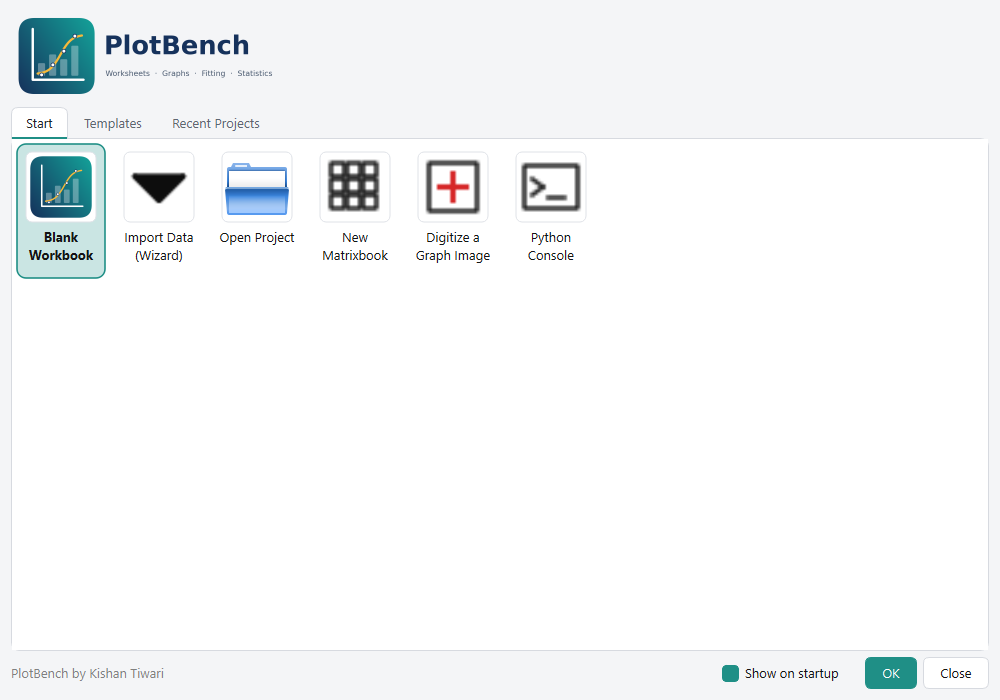</p><p class='cap'>Figure: The Start page: quick actions, templates and recent projects.</p>
<p class='note'><b>Live preview.</b> Dialogs that change a graph (Graph Properties, reference lines, text, arrows, fitting,
the Peak Analyzer, Set Column Values and export) show each change straight away. <b>OK</b> keeps it, <b>Cancel</b> puts everything
back, and <b>Apply</b> keeps it while the dialog stays open. Untick <b>Live preview</b> in a dialog to turn it off.</p>


<h2 id='window'>2. The main window</h2>
<p align='center'>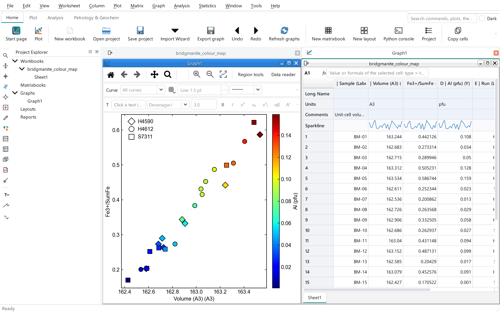</p><p class='cap'>Figure: The main window: menus, the four toolbars, the Project Explorer (left), a worksheet and a colour-mapped graph.</p>
<p>The window has a menu bar, four toolbars (top, left, bottom and right), the <b>Project Explorer</b> on the left and the work
area, where workbooks, matrixbooks, graphs, layouts and reports open as windows (tabbed or free: <b>Window > Toggle Tabbed / Free
windows</b>). The status bar at the bottom shows hints for the command under the mouse and the result of the last action.</p>
<h3>Toolbars</h3><p>Each toolbar can be moved by its handle, and switched on or off under <b>View > Toolbars</b>. The buttons are:</p>
<h4>File and edit toolbar</h4><table class='ref'><tr><td width=30></td><td><b>Start page</b></td><td>Show the Start page.</td></tr><tr><td width=30></td><td><b>Plot</b></td><td>Plot Gallery: all plot types with previews (Ctrl+Shift+G)</td></tr><tr><td width=30></td><td><b>New workbook</b></td><td>A new empty workbook.</td></tr><tr><td width=30></td><td><b>Open project</b></td><td>Open a .pbp project file.</td></tr><tr><td width=30></td><td><b>Save project</b></td><td>Save the project (Ctrl+S).</td></tr><tr><td width=30></td><td><b>Import Wizard</b></td><td>Import a text file with full control of delimiter, header lines, units and comments, with a preview.</td></tr><tr><td width=30></td><td><b>Export graph</b></td><td>Save the active graph as an image or vector file.</td></tr><tr><td width=30></td><td><b>Undo</b></td><td>Undo the last change in the active sheet, matrix or graph (Ctrl+Z).</td></tr><tr><td width=30></td><td><b>Redo</b></td><td>Redo what Undo took back (Ctrl+Y).</td></tr><tr><td width=30></td><td><b>Refresh graphs</b></td><td>Redraw every graph.</td></tr><tr><td width=30></td><td><b>New matrixbook</b></td><td>A new matrixbook.</td></tr><tr><td width=30></td><td><b>New layout page</b></td><td>Arrange several graphs on one page.</td></tr><tr><td width=30></td><td><b>Python console</b></td><td>Show or hide the Python console.</td></tr><tr><td width=30></td><td><b>Project Explorer</b></td><td>Show or hide the panel listing every window in the project, grouped in folders.</td></tr><tr><td width=30></td><td><b>Copy cells</b></td><td>Copy the selected cells as tab-separated text at full precision, ready to paste into Excel or Origin.</td></tr><tr><td width=30></td><td><b>Paste cells</b></td><td>Paste tab-separated text from Excel or another sheet at the current cell; rows and columns are added as needed.</td></tr><tr><td width=30></td><td><b>Add column</b></td><td>Add an empty column.</td></tr><tr><td width=30></td><td><b>Add 100 rows</b></td><td>Add 100 empty rows at the bottom.</td></tr><tr><td width=30>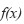</td><td><b>Set column values (formula)</b></td><td>Fill a column from a formula of other columns, with a live preview of the result.</td></tr><tr><td width=30></td><td><b>Plot details: show / hide curves, fill</b></td><td></td></tr><tr><td width=30></td><td><b>Graph properties</b></td><td>Titles, axes, colours, symbols and fonts, with live preview.</td></tr><tr><td width=30></td><td><b>Export graph image</b></td><td></td></tr><tr><td width=30></td><td><b>Copy graph to clipboard</b></td><td>Copy the active graph as an image to paste into Word or PowerPoint.</td></tr><tr><td width=30></td><td><b>Search commands (Ctrl+K)</b></td><td></td></tr></table><h4>Graph tools toolbar</h4><table class='ref'><tr><td width=30></td><td><b>Zoom (on the active graph)</b></td><td>Drag a rectangle to zoom in.</td></tr><tr><td width=30></td><td><b>Pan (on the active graph)</b></td><td>Drag to move the graph view.</td></tr><tr><td width=30></td><td><b>Data reader</b></td><td>Click near a point to read its X, Y and row.</td></tr><tr><td width=30></td><td><b>Region tools: drag an X range</b></td><td>Drag across a range for a quick fit, statistics, area, FFT, peaks or masking.</td></tr><tr><td width=30></td><td><b>Graph properties</b></td><td>Titles, axes, colours, symbols and fonts, with live preview.</td></tr><tr><td width=30></td><td><b>Digitizer</b></td><td>Read data points off a picture of a graph.</td></tr><tr><td width=30></td><td><b>Edit plot (type, columns, groups, panels)</b></td><td>Change the plot type, X and Y columns, sample groups and panels of this graph, with live preview.</td></tr><tr><td width=30></td><td><b>Group samples by a column</b></td><td></td></tr><tr><td width=30></td><td><b>Split into panels</b></td><td>Each Y column in its own small graph on the same page, in a grid of rows and columns you choose.</td></tr><tr><td width=30></td><td><b>Apply template / theme</b></td><td>Give the active graph the look of a saved template or built-in theme.</td></tr><tr><td width=30></td><td><b>Duplicate graph</b></td><td>Copy the active graph into a new graph window.</td></tr><tr><td width=30></td><td><b>Export all graphs to one PDF</b></td><td></td></tr><tr><td width=30></td><td><b>Copy this graph&#x27;s format to all graphs</b></td><td></td></tr><tr><td width=30></td><td><b>Add to graph: text, arrow, reference line, confidence ellipse, zoom inset</b></td><td></td></tr><tr><td width=30></td><td><b>Draw shapes: line, arrow, rectangle, circle, polygon, freehand</b></td><td></td></tr></table><h4>Plot types toolbar</h4><table class='ref'><tr><td width=30></td><td><b>Colour-mapped scatter (third column as colour, with a colour bar)</b></td><td>X against Y coloured by a third column, set up in a dialog with live preview.</td></tr><tr><td width=30></td><td><b>Plot: Line</b></td><td>Draw a straight line on the graph with the mouse.</td></tr><tr><td width=30></td><td><b>Plot: Scatter</b></td><td>Points without lines: measurements, correlations, calibration data.</td></tr><tr><td width=30></td><td><b>Plot: Line + Symbol</b></td><td>Points joined by lines.</td></tr><tr><td width=30></td><td><b>Plot: Column</b></td><td>Vertical bars per category; several Y columns give grouped bars.</td></tr><tr><td width=30></td><td><b>Plot: Bar (horizontal)</b></td><td>Horizontal bars per category.</td></tr><tr><td width=30></td><td><b>Plot: Stacked Column</b></td><td>Bars stacked on each other, so the height is the total.</td></tr><tr><td width=30></td><td><b>Plot: Area</b></td><td>A line with the area under it filled.</td></tr><tr><td width=30></td><td><b>Plot: Histogram</b></td><td>The distribution of values in each column.</td></tr><tr><td width=30></td><td><b>Plot: Box</b></td><td>Median, quartiles and range of each group side by side.</td></tr><tr><td width=30></td><td><b>Plot: Violin</b></td><td>The shape of each group&#x27;s distribution.</td></tr><tr><td width=30></td><td><b>Plot: Pie</b></td><td>Shares of a whole.</td></tr><tr><td width=30></td><td><b>Plot: Error Bar</b></td><td>Points with vertical error bars.</td></tr><tr><td width=30></td><td><b>Plot: Double-Y</b></td><td>Two Y columns on separate left and right axes against one X.</td></tr><tr><td width=30></td><td><b>Plot: Bubble</b></td><td>Points with size from a third column.</td></tr><tr><td width=30></td><td><b>Plot: Polar (theta deg, r)</b></td><td>Radius against angle.</td></tr><tr><td width=30></td><td><b>Plot: Contour (XYZ)</b></td><td>Contours of Z over X-Y from scattered points (gridded for you).</td></tr><tr><td width=30></td><td><b>Plot: Heat Map</b></td><td>A grid of coloured cells: one row per X label, one column per Y column.</td></tr><tr><td width=30></td><td><b>Plot: 3D Scatter</b></td><td>Points in 3-D; drag to rotate.</td></tr><tr><td width=30></td><td><b>Plot: 3D Surface</b></td><td>A surface through scattered X-Y-Z points.</td></tr><tr><td width=30></td><td><b>Plot: Ternary</b></td><td>Three components on a triangle, with 0-100% ticks on every edge.</td></tr><tr><td width=30></td><td><b>Plot: Piper Diagram</b></td><td>Water types: cation and anion triangles and the central diamond.</td></tr><tr><td width=30></td><td><b>Plot: Radar / Spider</b></td><td>Each row or column as a polygon across several axes (not the geochemical spider).</td></tr><tr><td width=30></td><td><b>Plot: Waterfall (offset curves)</b></td><td>Curves shifted upward one after another, e.g. spectra at several temperatures.</td></tr><tr><td width=30></td><td><b>Plot: Q-Q Plot</b></td><td>Sample quantiles against a theoretical distribution: points on the line mean the distribution fits.</td></tr><tr><td width=30></td><td><b>Plot: Bland-Altman</b></td><td>Difference between two methods against their mean, with the bias and limits of agreement.</td></tr><tr><td width=30></td><td><b>Plot: Box + Data Points</b></td><td>Box plot with every point drawn on top.</td></tr><tr><td width=30></td><td><b>Plot: TAS (SiO2 vs Na2O+K2O)</b></td><td>Total alkali-silica classification of volcanic rocks (Le Bas et al. 1986) with the field names.</td></tr><tr><td width=30></td><td><b>Plot: Harker Diagrams (oxides vs SiO2)</b></td><td>Harker variation diagrams: each oxide against SiO2 in its own small panel, to follow fractionation trends through a magma series.</td></tr><tr><td width=30></td><td><b>Plot: AFM (Irvine  Baragar)</b></td><td></td></tr><tr><td width=30></td><td><b>Plot: Spider: REE / CI Chondrite</b></td><td>Each sample as a line of element concentrations divided by CI chondrite (McDonough &amp; Sun 1995), on a log axis. Rare earth elements La to Lu.</td></tr><tr><td width=30></td><td><b>Plot: Spider: Multi-element / Primitive Mantle</b></td><td>Each sample as a line of element concentrations divided by primitive mantle (McDonough &amp; Sun 1995), on a log axis. Trace elements in order of incompatibility (Cs ... Lu).</td></tr><tr><td width=30></td><td><b>Plot: QAP (Streckeisen)</b></td><td>Classification of plutonic rocks from modal quartz (Q), alkali feldspar (A) and plagioclase (P).</td></tr><tr><td width=30></td><td><b>Plot: Shand A/CNK vs A/NK</b></td><td>Alumina saturation (Shand 1943; Maniar &amp; Piccoli 1989): metaluminous, peraluminous or peralkaline, from molar A/CNK = Al2O3/(CaO+Na2O+K2O) and A/NK = Al2O3/(Na2O+K2O). The dashed line at A/CNK 1.1 separates I- and S-type granites (Chappell &amp; White 1974).</td></tr><tr><td width=30></td><td><b>Plot: Frost: Fe-number vs SiO2</b></td><td>Frost et al. (2001) granite classification, step 1: FeOt/(FeOt+MgO) against SiO2 separates ferroan from magnesian granitoids (line 0.486 + 0.0046 SiO2).</td></tr><tr><td width=30></td><td><b>Plot: Pyroxene Quadrilateral (Wo-En-Fs)</b></td><td>Ca-Mg-Fe pyroxene compositions on the En-Fs-Di-Hd quadrilateral with the names of Morimoto (1988): diopside, hedenbergite, augite, pigeonite, enstatite, ferrosilite.</td></tr><tr><td width=30></td><td><b>Plot: Feldspar Ternary (An-Ab-Or)</b></td><td>Feldspar compositions on the An-Ab-Or triangle with the plagioclase (albite to anorthite) and alkali-feldspar (anorthoclase, K-feldspar) names.</td></tr><tr><td width=30></td><td><b>Plot: Pearce Granite: Rb vs Y+Nb</b></td><td>Granite tectonic setting (Pearce et al. 1984): syn-collisional, volcanic-arc, within-plate and ocean-ridge granites.</td></tr><tr><td width=30></td><td><b>Plot: Concordia (Wetherill)</b></td><td>U-Pb analyses as 95% error ellipses on the Wetherill concordia, with the weighted mean 206Pb/238U age.</td></tr><tr><td width=30></td><td><b>Plot: Isochron (York regression)</b></td><td>Isochron age from the York et al. (2004) regression with errors in both ratios and their correlation.</td></tr><tr><td width=30></td><td><b>Plot: Weighted Mean (ages)</b></td><td>Values with 2-sigma bars, the inverse-variance weighted mean with its 2-sigma band, MSWD and p.</td></tr><tr><td width=30></td><td><b>Plot: Detrital Age KDE + PDP</b></td><td>Detrital ages as a histogram, a kernel density estimate (bandwidth by least-squares cross-validation) and, with errors, a probability density plot.</td></tr><tr><td width=30></td><td><b>Plot: Raincloud (violin + box + points)</b></td><td>Each group&#x27;s distribution three ways: a half violin (density), a box plot and every point.</td></tr><tr><td width=30></td><td><b>Plot: PCA Biplot (scores + loadings)</b></td><td>Samples (points) and variables (arrows) on the first two principal components. Samples near each other are alike; an arrow points to where samples rich in that variable lie; arrows close together are correlated.</td></tr><tr><td width=30></td><td><b>Plot: Scatter Matrix</b></td><td>Every selected column plotted against every other one: quick look at correlations.</td></tr></table><h4>Worksheet and analysis toolbar</h4><table class='ref'><tr><td width=30></td><td><b>Add column</b></td><td>Add an empty column.</td></tr><tr><td width=30></td><td><b>Set column values (formula)</b></td><td>Fill a column from a formula of other columns, with a live preview of the result.</td></tr><tr><td width=30></td><td><b>Sort by several columns</b></td><td>Sort the rows by up to three columns.</td></tr><tr><td width=30></td><td><b>Mask selected cells</b></td><td>Exclude the selected cells from analyses and graphs.</td></tr><tr><td width=30></td><td><b>Descriptive statistics</b></td><td>Mean, SD, median and more for the selected columns.</td></tr><tr><td width=30></td><td><b>Linear fit</b></td><td>Straight-line fit of the selected column.</td></tr><tr><td width=30></td><td><b>Nonlinear curve fit</b></td><td>Fit any built-in or own function with a live preview.</td></tr><tr><td width=30></td><td><b>Peak Analyzer</b></td><td>Baseline, find or click peaks, choose a shape per peak and fit.</td></tr><tr><td width=30></td><td><b>Smooth</b></td><td>Savitzky-Golay, adjacent-average or median smoothing.</td></tr><tr><td width=30></td><td><b>FFT</b></td><td>Amplitude and phase spectrum of the selected column (X must be evenly spaced).</td></tr><tr><td width=30></td><td><b>Correlation matrix</b></td><td>Pearson and Spearman correlation between the selected columns</td></tr><tr><td width=30></td><td><b>Two-sample t-test</b></td><td>Do two independent groups (two columns) have different means? Student or Welch</td></tr><tr><td width=30></td><td><b>One-way ANOVA</b></td><td>Each column a group; with Tukey/Bonferroni post-hoc and Levene test</td></tr><tr><td width=30></td><td><b>Principal component analysis (with score, loading and biplot graphs)</b></td><td></td></tr><tr><td width=30></td><td><b>K-means clustering</b></td><td>Split samples into k groups</td></tr><tr><td width=30></td><td><b>Normality test</b></td><td>Shapiro-Wilk, Kolmogorov-Smirnov and Anderson-Darling: is the column normally distributed?</td></tr><tr><td width=30></td><td><b>Differentiate</b></td><td>New column with dY/dX.</td></tr><tr><td width=30></td><td><b>Integrate</b></td><td>New column with the running integral; the total area is reported.</td></tr><tr><td width=30></td><td><b>Baseline (ALS) and subtract</b></td><td>Asymmetric least-squares baseline of a spectrum, and the baseline-corrected column.</td></tr><tr><td width=30></td><td><b>Find peaks</b></td><td>Peak positions, heights, prominences and widths.</td></tr><tr><td width=30></td><td><b>Mineral formula from oxides</b></td><td>Cations per formula unit from oxide wt% on an oxygen basis, Fe3+ by charge balance (Droop 1987), and end-members (olivine, pyroxene, feldspar, garnet, spinel, ilmenite, Mg#).</td></tr><tr><td width=30></td><td><b>CIPW norm</b></td><td>Normative minerals (quartz, feldspars, nepheline, diopside, hypersthene, olivine, oxides ...) from wt% oxides.</td></tr><tr><td width=30></td><td><b>Normalise oxides to 100% (volatile-free)</b></td><td></td></tr><tr><td width=30></td><td><b>Thermobarometry</b></td><td>Ti-in-zircon, Zr-in-rutile, Ti-in-quartz, zircon saturation, garnet-biotite, garnet-cpx temperatures and Al-in-hornblende pressures.</td></tr><tr><td width=30></td><td><b>Coupled P-T solver</b></td><td>Solve T and P together, row by row, from a thermometer that needs P and a barometer that needs T.</td></tr><tr><td width=30></td><td><b>Fe-Ti oxide thermometer / oxybarometer (Ghiorso  Evans 2008)</b></td><td></td></tr><tr><td width=30></td><td><b>U-Pb ages and discordance of each analysis</b></td><td>206Pb/238U, 207Pb/235U and 207Pb/206Pb ages and discordance from the ratio columns.</td></tr><tr><td width=30></td><td><b>Isochron age (York regression)</b></td><td>Rb-Sr, Sm-Nd, Lu-Hf or Re-Os isochron age, initial ratio and MSWD by York et al. (2004) regression.</td></tr></table>
<h3>Project Explorer</h3><p>Lists every window of the project, grouped in folders. Double-click to bring a window forward;
right-click to rename, delete or move it into a folder. Renaming keeps graph links intact.</p>
<h3>Light and dark theme</h3><p>Switch with the switch on the top toolbar, <b>View > Dark Theme</b> or <b>Ctrl+Shift+D</b>. The choice
is remembered. Graphs keep their own background (set in Graph Properties) so exported figures look the same in both themes.</p>


<h2 id='sheets'>3. Worksheets and data</h2>
<p align='center'>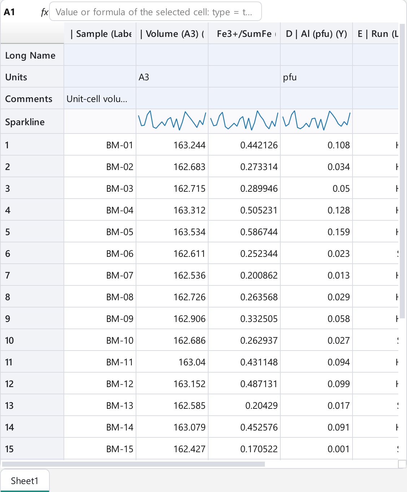</p><p class='cap'>Figure: A worksheet. The grey rows hold long name, units and comments; the next row shows a sparkline of each column.</p>
<h3>Layout of a sheet</h3>
<p>The first three grey rows hold the <b>Long Name</b>, <b>Units</b> and <b>Comments</b> of each column; long name and units become
the axis titles of graphs. The next row shows a <b>sparkline</b>, a tiny plot of the column. Data start below. A workbook can have
several sheets: right-click the sheet tabs at the bottom to add, rename, duplicate or delete a sheet (deleting asks first).</p>
<h3>Column roles</h3>
<p>Right-click a column header (or use the Column menu) to set its role, shown in the header as [X], [Y] and so on:</p>
<table class='ref'><tr><td><b>X</b></td><td>The horizontal axis. If a column set as X holds any text (e.g. sample names), it is used as labels.</td></tr>
<tr><td><b>Y</b></td><td>Values to plot or analyse.</td></tr><tr><td><b>Z</b></td><td>Third variable for contour and 3-D plots.</td></tr>
<tr><td><b>yErr</b></td><td>The error of the Y column to its left. Scatter and line plots draw error bars automatically, and fits can use it as weights.</td></tr>
<tr><td><b>yErr+ / yErr-</b></td><td>Asymmetric Y errors: the bar above and the bar below the point (e.g. 10th-90th percentiles).</td></tr>
<tr><td><b>xErr</b></td><td>The error of the X values, drawn as horizontal bars.</td></tr>
<tr><td><b>Label</b></td><td>Text such as sample names or groups; used by the colour-map dialog for groups and labels.</td></tr>
<tr><td><b>Ignore</b></td><td>Left out of plots.</td></tr></table>
<h3>Editing</h3>
<p>Type in a cell and press Enter (down) or Tab (right). The cell editor and Ctrl+C always use the full stored value, even though
the sheet shows 6 significant digits (change this in Preferences). Paste (Ctrl+V) takes tab-separated text from Excel, Origin or
another sheet and adds rows and columns as needed; commas stay inside a cell, so decimal commas and text are safe. Undo and redo
(Ctrl+Z, Ctrl+Y) cover every change. Excel-style keys work: Ctrl+Arrow jumps to the edge of the data, Shift extends the selection,
Ctrl+D and Ctrl+R fill down and right, Ctrl+; inserts today's date (see <a href='#keys'>Keyboard shortcuts</a>).</p>
<h3>Masking</h3><p>Select cells and press <b>Ctrl+M</b> to mask them: they turn red, appear as red crosses on graphs and are left
out of every analysis, but stay in the sheet. Unmask with Column > Unmask.</p>
<h3 id='formulas'>Column formulas</h3>
<p align='center'>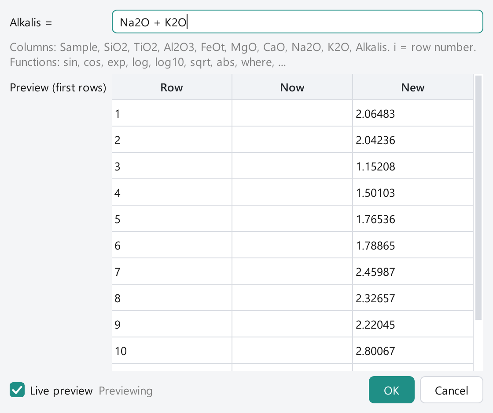</p><p class='cap'>Figure: Set Column Values: the first rows of the result are shown while you type.</p>
<p><b>Column > Set Column Values</b> (Ctrl+Q) fills a column from a formula of other columns, for example <code>A*2 + sin(B)</code>,
<code>log10(Sr/Y)</code>, <code>where(SiO2 > 63, 'Felsic', 'Mafic')</code> (text results are allowed) or <code>eu_anomaly(Eu, Sm, Gd)</code>.
The dialog shows the first rows of the result while you type, and any error in red. Formula columns recalculate when their inputs
change, in dependency order (a formula may use another formula column; a circular reference is reported). Use column names as
they appear in the header; <code>i</code> is the row number.</p>
<p><b>Functions:</b> abs, arccos, arcsin, arctan, arctan2, ce_anomaly, ce_anomaly_nd, ce_star, ceil, cos, cosh, cumsum, degrees, diff, eu_anomaly, eu_star, exp, floor, hypot, isnan, ln, log, log10, log2, max, maximum, mean, min, minimum, power, radians, round, sign, sin, sinh, sqrt, std, sum, tan, tanh, where.</p><p><b>Constants:</b> e, nan, pi; <b>i</b> is the row number (1, 2, 3 ...).</p>
<p><b>Geochemical anomalies:</b> <code>eu_anomaly(Eu, Sm, Gd)</code> gives Eu/Eu* = Eu<sub>N</sub>/&radic;(Sm<sub>N</sub>&middot;Gd<sub>N</sub>) and
<code>ce_anomaly(Ce, La, Pr)</code> gives Ce/Ce* = Ce<sub>N</sub>/&radic;(La<sub>N</sub>&middot;Pr<sub>N</sub>), with N = CI chondrite
normalised (McDonough &amp; Sun 1995); inputs in ppm.</p>
<p class='note'><b>How formulas are kept safe.</b> A formula is parsed, and only arithmetic, comparisons, column names and the
functions listed above are accepted; attributes, imports, indexing and other Python are refused before anything runs. This is
what lets you open project files from others without risk.</p>
<h3>Worksheet tools</h3><p>The Worksheet menu holds transpose, stack and unstack, pivot table, remove duplicates, extract rows by
a condition (e.g. <code>SiO2 > 45 and Class == "iron"</code>), split by a column's values, join sheets on a key, find and replace,
multi-column sort, reduce rows, fill missing values, fill a sequence, row statistics, frequency counts and colouring cells by value.</p>


<h2 id='import'>4. Importing and exporting data</h2>
<p align='center'>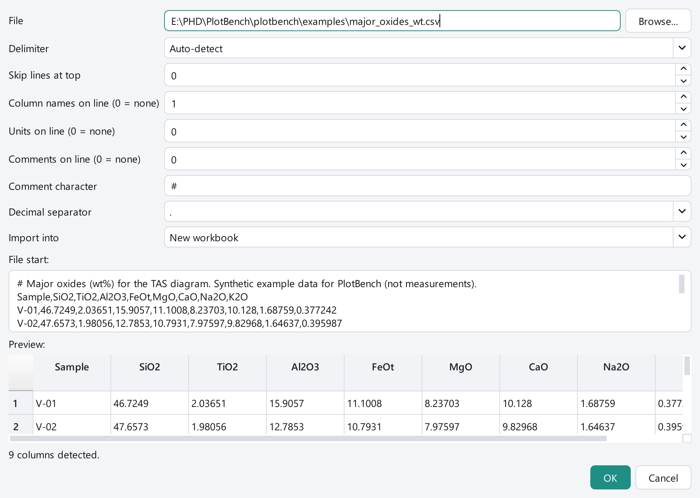</p><p class='cap'>Figure: The Import Wizard: delimiter, header lines, units and comments rows, decimal comma and a live preview.</p>
<p><b>File > Import Wizard (text files)</b> reads text files (CSV, TXT, DAT, TSV) with control over the delimiter, lines to skip, the lines that
hold column names, units and comments, decimal comma and comment character, with a live preview. Data can go into a new workbook,
a new sheet or the active sheet. Other formats: Excel (every sheet), HDF5 and NetCDF (pick arrays from a tree), MATLAB .mat (v5 and
v7.3), JCAMP-DX spectra (including compressed forms) and SQLite databases (a table or your own SQL query, opened read-only).
Drag a file onto the window to import it. Worksheets export to CSV and Excel.</p>


<h2 id='matrix'>5. Matrixbooks</h2>
<p>A matrixbook holds grids of Z values with X and Y coordinates (images, maps, gridded surfaces). Create one with <b>Matrix > New
Matrixbook</b>, import an image (PNG, JPG, TIFF, BMP), convert scattered XYZ data with <b>Matrix > Convert Worksheet XYZ to Matrix (gridding)</b> (linear, cubic,
nearest, Shepard or thin-plate spline), or fill it from a formula in x, y, i and j. Matrix tools: transpose, flip, rotate, inverse,
resample, smoothing (Gaussian, median, mean), 2-D FFT, row and column profiles, statistics, crop, arithmetic between matrices,
and image filters (edges, Laplacian, threshold, invert, log, normalise, gradient). Matrix plots are image/heat map, filled
contour, contour lines, 3-D colour-map surface and wireframe.</p>


<h2 id='graphs'>6. Making graphs</h2>
<p>Select the Y columns of a sheet (or nothing, to use every Y column) and choose a plot type from the <b>Plot</b> menu, the bottom
toolbar or the <b>Plot Gallery</b>. The X column is the one set as X; without one, the row number is used.</p>
<p align='center'>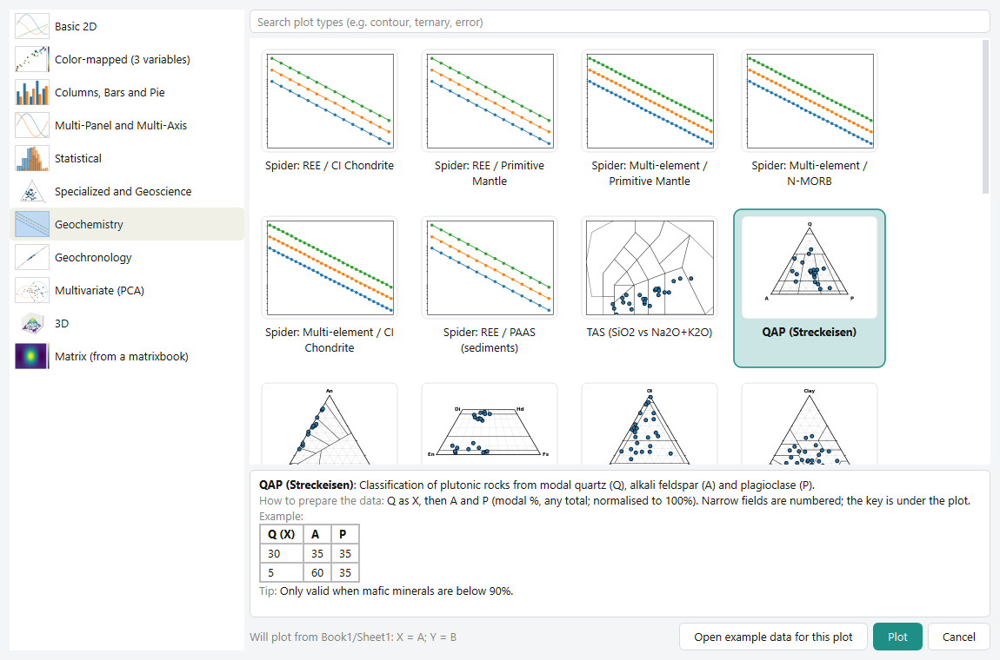</p><p class='cap'>Figure: The Plot Gallery: categories, thumbnails, the data guide for the selected type and &#x27;Open example data&#x27;.</p>
<p>The gallery groups the plot types by purpose. Click a thumbnail to read what it shows and how to lay out the data (with an
example table); double-click or press <b>Plot</b> to draw it from your selection, or <b>Open example data for this plot</b> to see it
with ready-made data. Type in the search box to find a type by name or column role.</p>
<h3>Colour-mapped plots (three variables in two dimensions)</h3>
<p align='center'>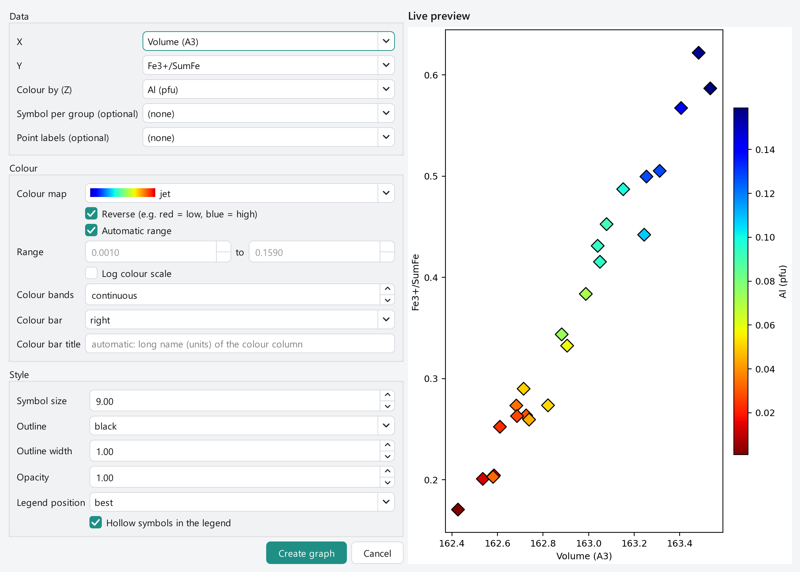</p><p class='cap'>Figure: The colour-map dialog with its live preview: columns, groups, labels, colour map, range, colour bar and symbols.</p>
<p>Colour-mapped scatter, bubble + colour, colour-mapped line and ternary + colour open a dialog with a live preview. Choose X, Y
and the colour column; optionally a <b>group</b> column (a different symbol per group, with a legend), a <b>label</b> column (text next
to each point) and a <b>size</b> column. Set the colour map (with a gradient preview), reverse it, fix its range or use a log scale,
split it into discrete bands, choose the colour bar position and title, and the symbol size, edge and transparency. <b>Edit plot...</b>
on the format bar reopens this dialog later.</p>
<h3>Edit plot, panels and single points</h3>
<p><b>Edit plot...</b> on the format bar above every graph (also <b>Graph > Edit Plot</b>, Ctrl+Shift+E) changes the plot type, the X and
Y columns, the sample groups and the panels, with live preview: OK keeps the change as one undo step, Cancel puts the graph back.
Colour-mapped graphs open their colour-map builder instead.</p>
<p><b>Panels</b>: tick <i>One panel per Y column</i> (or use <b>Graph > Split into Panels</b>) to draw each Y column as its own small graph
on the same page, in the number of rows and columns you choose (0 = automatic), like the Harker diagrams. To put different graphs on one
page, use <b>Graph > New Layout Page</b>; double-click a panel of a layout page to open its graph, and every change there shows on the
page. In multi-panel graphs the format bar's curve list names each curve with its panel, so every panel's curves can be styled on their
own.</p>
<p><b>Moving and layering texts.</b> Every text a plot draws (field names such as <i>Basaltic Andesite</i>, labels, captions) can be
dragged with the mouse to a free spot; the new place is saved with the graph and kept when the data change (Ctrl+Z undoes a move).
Right-click a text to edit its words, font size or colour, to put it in front of the data points, between the field lines and the points,
or behind everything, to hide it, or to reset it. Right-click empty space to show hidden texts again or reset all of them. Right-click a
data point and choose <i>Bring this curve to front</i> or <i>Send this curve to back</i> to change the layer of a whole curve or group.</p>
<p><b>Sample groups</b>: double-click a group's name in the legend of a geochemistry diagram to change its colour, symbol, size and
the name shown in the legend, with live preview.</p>
<p>Live preview with OK, Apply and Cancel is also in Graph Properties, Apply Template, Group Samples By Column, Split into Panels and
Add Inset Graph.</p>
<p><b>Single points</b>: right-click a data point to give just that point its own colour, symbol or size, label it with its value, or hide
it; <i>Reset this point</i> and <i>Reset all points</i> undo that. Point formats are saved with the graph and follow templates.</p>
<h3>Cell formulas and the formula bar</h3>
<p>Type <b>=</b> in any data cell to calculate it as in Excel: <code>=A1/B1</code>, <code>=A2-B2</code>, <code>=A1*2+C3^2</code>,
<code>=SUM(B1:B10)</code>, <code>=AVERAGE(C:C)</code> (a whole column), <code>=IF(D2&gt;5, "high", "low")</code>,
<code>=COUNTIF(E1:E20, "Olivine")</code>, <code>=B2&amp;" ppm"</code> (joins text). Columns are referred to by their letter, which is shown
in front of the column name in the header (<i>B | SiO2</i>), and rows by their number; $ signs are accepted. Blank cells count as 0 in
arithmetic and are skipped by SUM, AVERAGE and the other statistics. Errors show in red, as in Excel: #DIV/0!, #NAME? (unknown function),
#REF! (no such cell), #VALUE!, #NUM! and #CIRC! (formulas that refer to each other in a circle). Formula cells are blue; their results
update whenever a cell they read changes, and they move with their rows when you sort, insert or delete rows. Inserting a column (right-click a header,
<b>Insert column before</b>) or deleting one moves the letters in existing formulas along, as in Excel; a reference to a deleted column
becomes #REF!.</p>
<p><b>Other sheets.</b> A formula can read another sheet of the same workbook: <code>=Sheet2!A1</code>,
<code>=SUM(Sheet2!B2:B20)</code>, <code>=AVERAGE(Data!C:C)</code>; put names with spaces or other characters in single quotes:
<code>='Raw data'!B2</code>. Sheet names are matched in any case. The formula updates when the other sheet changes; renaming the sheet
renames it in the formulas; a missing sheet gives #REF!. Inserting or deleting rows or columns, on the formula's sheet or on the sheet it
reads, moves the references along (as in Excel); the fill handle moves them too. Inserting or deleting rows also moves row numbers:
<code>=A5</code> becomes <code>=A6</code> when a row goes in above row 5.</p>
<p><b>Fill handle.</b> The small green square at the bottom-right corner of the selection works as in Excel: drag it down (or up,
right, left) to fill. A formula is copied with its references moved: <code>=A1*B1</code> in row 1 becomes <code>=A2*B2</code> in row 2.
Put $ in front of the part that must not move: <code>$A1</code> keeps the column, <code>A$1</code> the row, <code>$A$1</code> both
(e.g. <code>=A1/$B$1</code> divides every row by the same cell). Two or more numbers selected together continue as a straight-line
series (1, 2 gives 3, 4, 5 ...; 10, 20 gives 30, 40 ...); a single number is copied; text ending in a number counts on (Sample 1,
Sample 2 ...; S-009, S-010 keeps the zeros); other text is repeated. A reference pushed off the sheet becomes #REF!. The whole fill is one
undo step. <b>Ctrl+D</b> (fill down) and <b>Ctrl+R</b> (fill right) copy the first row or column of the selection the same way, without
series. Columns calculated by a column formula (Set Column Values) are left alone.</p>
<p><b>Double-click the fill handle</b> to fill down as far as the column beside the selection has data, as in Excel (useful for
long microprobe or LA-ICP-MS tables). <b>Copy and paste</b> moves the relative references of pasted formulas by the distance pasted, as in
Excel; references with $ stay. A duplicated sheet keeps its cell formulas; deleting a sheet turns formulas that read it into #REF!.</p>
<p><b>Typing formulas.</b> After =, a list of matching functions (and the names of the other sheets) pops up in the formula bar; Enter or a
click puts the name in with its opening bracket. <b>Lookups</b> join tables: <code>=VLOOKUP(A2, Standards!A1:D40, 3, FALSE)</code> finds A2
in the first column of the table and returns the third column of that row (FALSE = exact match; TRUE or left out = the largest value not
above A2, data sorted ascending); <code>=XLOOKUP(A2, Spots!A1:A500, Spots!F1:F500, "none")</code> looks in one range and returns from
another; <code>=INDEX(B1:D9, 3, 2)</code> and <code>=MATCH("Ol*", C1:C9, 0)</code> (text ignores case; * and ? are wildcards).
<code>=SUMIFS(B1:B99, C1:C99, "Olivine", D1:D99, "&gt;40")</code> adds the B values of rows that meet every condition; COUNTIFS,
AVERAGEIFS, MAXIFS and MINIFS work the same way. A value that is not found gives #N/A (wrap it in IFERROR to show something else).</p>
<p>Functions: SUM, AVERAGE (AVG, MEAN), MIN, MAX, COUNT, COUNTA, COUNTBLANK, PRODUCT, MEDIAN, MODE, STDEV (STDEV.S), STDEVP (STDEV.P),
VAR, VARP, GEOMEAN, HARMEAN, SUMSQ, SUMPRODUCT, LARGE, SMALL, PERCENTILE, QUARTILE, COUNTIF, SUMIF, AVERAGEIF, ABS, SQRT, EXP, LN, LOG,
LOG10, POWER, MOD, INT, TRUNC, ROUND, ROUNDUP, ROUNDDOWN, SIGN, FACT, PI, SIN, COS, TAN, ASIN, ACOS, ATAN, ATAN2, SINH, COSH, TANH,
DEGREES, RADIANS, IF (only the branch chosen is calculated, so =IF(B1=0, 0, A1/B1) gives 0), IFERROR, AND, OR, NOT, ISBLANK, ISNUMBER, ISTEXT, CONCAT, LEN, UPPER, LOWER, TRIM, LEFT, RIGHT, VALUE, TEXT, the lookups VLOOKUP, HLOOKUP, XLOOKUP, INDEX and MATCH, and SUMIFS, COUNTIFS, AVERAGEIFS, MAXIFS, MINIFS and IQR;
operators + - * / ^ &amp; = &lt;&gt; &lt; &gt; &lt;= &gt;= and percentages (50%).</p>
<p>The <b>formula bar</b> above each sheet shows the cell address, the cell's formula (or value) and, on the right, what lies behind
the cell: its result, its column formula (<b>Set Column Values</b>), or for columns made by a command, how they were calculated
(for example <i>Mg# = 100 Mg / (Mg + Fe2+)</i> or <i>made by Smooth</i>). Type in the bar and press Enter to change the cell. Hovering
over a column header shows the same information.</p>
<h3>Typing numbers</h3>
<p>Wherever a value is typed (axis limits in Graph Properties, digitizer calibration values), it can be written as 2400, 0.5, 1e-18,
1E-18, 10^-18, 10^(-18), 10**-18, 10&#8315;&#185;&#8312;, 2.5x10^3, 2.5&times;10^3, 1,5 (decimal comma), 1/3 or 50%.</p>
<h3>Digitizer</h3>
<p><b>Tools &gt; Digitizer</b> reads data off a picture of a graph. Open the image, then make the four calibration clicks (two labelled
ticks on X, two on Y), typing each tick's value (10^-18 and the other forms above work). The <b>magnifier</b> beside the image shows the
area under the mouse eight times larger with a red cross at the exact pixel a click will use, and below it the pixel position and, once
calibrated, the X and Y values. When two values on one axis are three or more decades apart, the digitizer asks whether the axis is
logarithmic. Switch the toolbar's zoom or pan off before clicking points. Then click the data points; OK puts them in a new worksheet and a
scatter graph (with log axes if you ticked them), which is brought to the front. OK without any data points asks before closing.</p>
<h3>Drag columns onto a graph</h3><p>As in Origin: select whole columns in a worksheet (click the column headers), then press inside
the selection and drag it onto a graph window. Columns from the graph's own sheet with the same X become more series of that plot; columns
from another sheet (or with another X) are overlaid as extra curves. Dropping on empty workspace makes a new Line + Symbol graph.
Each drop is one undo step (Ctrl+Z in the graph).</p>
<h3>Finding a command</h3><p><b>Help > Search Commands</b> (Ctrl+Shift+F) finds any menu command from what you type, including words
that are not in the menu text: for example <i>deconvolution</i> finds the Peak Analyzer. Enter runs the highlighted command. In the
manual window, type in the search box: every match is highlighted, Enter goes to the next and Shift+Enter to the previous.</p>
<h3>Error bars</h3><p>Set a column as <b>yErr</b> right after its Y column. Scatter, line, line + symbol and step plots then draw
error bars automatically. The Error Bar and Column + Error Bars types take explicit value/error column pairs.
For asymmetric bars set the columns after the Y column as <b>yErr+</b> (above) and <b>yErr-</b> (below); a side that is not given uses
yErr, or nothing. A column set as <b>xErr</b> adds horizontal bars. All of them belong to the Y column on their left, up to the next X or Y
column, and are not plotted as curves.</p>

<h2 id='plotref'>7. Plot type reference</h2><p>Every plot type, what it shows and how to prepare the data.</p><h3 id='plots-basicd'>Basic 2D</h3><table class='plot'><tr><td width='160' valign='top'>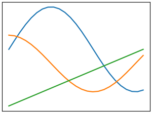</td><td valign='top'><b>Line</b><br>Y against X joined by lines: spectra, time series, profiles.<br><i>Data:</i> Put the X values in one column set as X, and one or more Y columns next to it. Select the Y columns (or nothing, to use every Y column) and choose the plot.<table class='ex'><tr><td><b>Time (s)</b></td><td><b>Signal A</b></td><td><b>Signal B</b></td></tr><tr><td>0</td><td>1.02</td><td>0.88</td></tr><tr><td>1</td><td>1.35</td><td>0.97</td></tr><tr><td>2</td><td>1.61</td><td>1.10</td></tr></table><i>Tip:</i> Several Y columns give several lines with a legend.<br><i>Example data:</i> Help > Example Data > Raman spectrum (peaks and baseline)</td></tr></table><table class='plot'><tr><td width='160' valign='top'>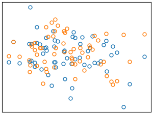</td><td valign='top'><b>Scatter</b><br>Points without lines: measurements, correlations, calibration data.<br><i>Data:</i> Put the X values in one column set as X, and one or more Y columns next to it. Select the Y columns (or nothing, to use every Y column) and choose the plot.<table class='ex'><tr><td><b>Time (s)</b></td><td><b>Signal A</b></td><td><b>Signal B</b></td></tr><tr><td>0</td><td>1.02</td><td>0.88</td></tr><tr><td>1</td><td>1.35</td><td>0.97</td></tr><tr><td>2</td><td>1.61</td><td>1.10</td></tr></table><i>Tip:</i> Set a column as yErr right after a Y column and the error bars are drawn automatically.<br><i>Example data:</i> Help > Example Data > Calibration with error bars</td></tr></table><table class='plot'><tr><td width='160' valign='top'>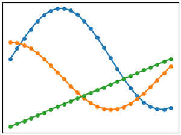</td><td valign='top'><b>Line + Symbol</b><br>Points joined by lines.<br><i>Data:</i> Put the X values in one column set as X, and one or more Y columns next to it. Select the Y columns (or nothing, to use every Y column) and choose the plot.<table class='ex'><tr><td><b>Time (s)</b></td><td><b>Signal A</b></td><td><b>Signal B</b></td></tr><tr><td>0</td><td>1.02</td><td>0.88</td></tr><tr><td>1</td><td>1.35</td><td>0.97</td></tr><tr><td>2</td><td>1.61</td><td>1.10</td></tr></table><i>Tip:</i> Set a column as yErr right after a Y column for error bars.<br><i>Example data:</i> Help > Example Data > Calibration with error bars</td></tr></table><table class='plot'><tr><td width='160' valign='top'>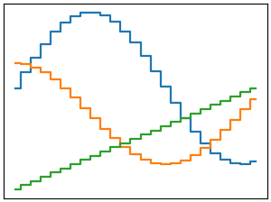</td><td valign='top'><b>Step</b><br>A staircase line (each value holds until the next X): counts per bin, digital signals.<br><i>Data:</i> Put the X values in one column set as X, and one or more Y columns next to it. Select the Y columns (or nothing, to use every Y column) and choose the plot.<table class='ex'><tr><td><b>Time (s)</b></td><td><b>Signal A</b></td><td><b>Signal B</b></td></tr><tr><td>0</td><td>1.02</td><td>0.88</td></tr><tr><td>1</td><td>1.35</td><td>0.97</td></tr><tr><td>2</td><td>1.61</td><td>1.10</td></tr></table><br><i>Example data:</i> Help > Example Data > Time series (two quantities)</td></tr></table><table class='plot'><tr><td width='160' valign='top'>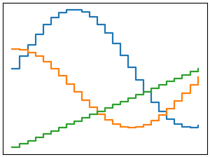</td><td valign='top'><b>Step (post, survival)</b><br>A staircase that steps after each X: survival or cumulative curves.<br><i>Data:</i> Put the X values in one column set as X, and one or more Y columns next to it. Select the Y columns (or nothing, to use every Y column) and choose the plot.<table class='ex'><tr><td><b>Time (s)</b></td><td><b>Signal A</b></td><td><b>Signal B</b></td></tr><tr><td>0</td><td>1.02</td><td>0.88</td></tr><tr><td>1</td><td>1.35</td><td>0.97</td></tr><tr><td>2</td><td>1.61</td><td>1.10</td></tr></table><i>Tip:</i> Statistics &gt; Survival &gt; Kaplan-Meier makes this graph for you.<br><i>Example data:</i> Help > Example Data > Time series (two quantities)</td></tr></table><table class='plot'><tr><td width='160' valign='top'>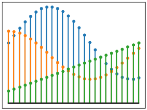</td><td valign='top'><b>Drop Line (Stem)</b><br>A vertical line from zero to each point: stick spectra, mass spectra, impulse responses.<br><i>Data:</i> Put the X values in one column set as X, and one or more Y columns next to it. Select the Y columns (or nothing, to use every Y column) and choose the plot.<table class='ex'><tr><td><b>m/z (X)</b></td><td><b>Intensity</b></td></tr><tr><td>28</td><td>100</td></tr><tr><td>32</td><td>27</td></tr><tr><td>44</td><td>6</td></tr></table><br><i>Example data:</i> Help > Example Data > Raman spectrum (peaks and baseline)</td></tr></table><table class='plot'><tr><td width='160' valign='top'>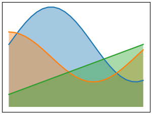</td><td valign='top'><b>Area</b><br>A line with the area under it filled.<br><i>Data:</i> Put the X values in one column set as X, and one or more Y columns next to it. Select the Y columns (or nothing, to use every Y column) and choose the plot.<table class='ex'><tr><td><b>Time (s)</b></td><td><b>Signal A</b></td><td><b>Signal B</b></td></tr><tr><td>0</td><td>1.02</td><td>0.88</td></tr><tr><td>1</td><td>1.35</td><td>0.97</td></tr><tr><td>2</td><td>1.61</td><td>1.10</td></tr></table><br><i>Example data:</i> Help > Example Data > Time series (two quantities)</td></tr></table><table class='plot'><tr><td width='160' valign='top'>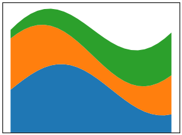</td><td valign='top'><b>Stacked Area</b><br>Areas stacked on each other, so the top edge is the total: compositions through time or depth.<br><i>Data:</i> Put the X values in one column set as X, and one or more Y columns next to it. Select the Y columns (or nothing, to use every Y column) and choose the plot.<table class='ex'><tr><td><b>Depth (X)</b></td><td><b>Quartz</b></td><td><b>Feldspar</b></td><td><b>Clay</b></td></tr><tr><td>0</td><td>40</td><td>35</td><td>25</td></tr><tr><td>5</td><td>45</td><td>30</td><td>25</td></tr></table><br><i>Example data:</i> Help > Example Data > Time series (two quantities)</td></tr></table><table class='plot'><tr><td width='160' valign='top'>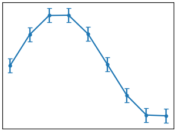</td><td valign='top'><b>Error Bar</b><br>Points with vertical error bars.<br><i>Data:</i> X column, then pairs of columns: a Y column followed by its error column (Y1, Err1, Y2, Err2 ...). Select the pairs.<table class='ex'><tr><td><b>T (X)</b></td><td><b>Rate</b></td><td><b>Rate error</b></td></tr><tr><td>300</td><td>1.2</td><td>0.1</td></tr><tr><td>350</td><td>2.9</td><td>0.2</td></tr><tr><td>400</td><td>6.1</td><td>0.4</td></tr></table><i>Tip:</i> Or set the error column as yErr and use Scatter: the bars are attached automatically.<br><i>Example data:</i> Help > Example Data > Calibration with error bars</td></tr></table><table class='plot'><tr><td width='160' valign='top'>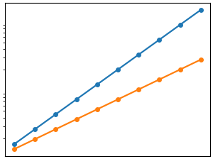</td><td valign='top'><b>Semi-log Y (Line + Symbol)</b><br>Line + symbol with a logarithmic Y axis: decay curves, concentrations spanning decades.<br><i>Data:</i> Put the X values in one column set as X, and one or more Y columns next to it. Select the Y columns (or nothing, to use every Y column) and choose the plot.<table class='ex'><tr><td><b>Time (s)</b></td><td><b>Signal A</b></td><td><b>Signal B</b></td></tr><tr><td>0</td><td>1.02</td><td>0.88</td></tr><tr><td>1</td><td>1.35</td><td>0.97</td></tr><tr><td>2</td><td>1.61</td><td>1.10</td></tr></table><i>Tip:</i> Y values must be positive; zeros and negatives are left out.<br><i>Example data:</i> Help > Example Data > Calibration with error bars</td></tr></table><h3 id='plots-colormappedvariables'>Color-mapped (3 variables)</h3><table class='plot'><tr><td width='160' valign='top'>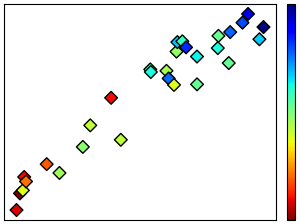</td><td valign='top'><b>Color-mapped Scatter</b><br>X against Y with each point coloured by a third column (and a colour bar): 3 variables in 2-D, e.g. Fe3+/ΣFe against unit-cell volume coloured by Al content.<br><i>Data:</i> X column, a Y column and the colour column; select Y and the colour column. The dialog that opens lets you pick the colour map, its range, log scale, symbols per group (from a text column), point labels and the colour-bar title.<table class='ex'><tr><td><b>V (ų) (X)</b></td><td><b>Fe3+/ΣFe</b></td><td><b>Al (pfu)</b></td><td><b>Run</b></td></tr><tr><td>162.3</td><td>0.42</td><td>0.08</td><td>A</td></tr><tr><td>162.9</td><td>0.55</td><td>0.12</td><td>B</td></tr></table><i>Tip:</i> Edit plot... on the format bar reopens the dialog later.<br><i>Example data:</i> Help > Example Data > Colour-mapped scatter (3 variables)</td></tr></table><table class='plot'><tr><td width='160' valign='top'>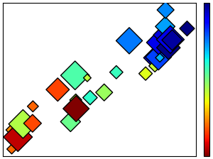</td><td valign='top'><b>Bubble + Color</b><br>Points sized by one column and coloured by another: 4 variables in one plot.<br><i>Data:</i> X, Y, a colour column and a size column. The dialog asks which column is which.<table class='ex'><tr><td><b>X</b></td><td><b>Y</b></td><td><b>Colour</b></td><td><b>Size</b></td></tr><tr><td>1</td><td>3.2</td><td>0.1</td><td>5</td></tr><tr><td>2</td><td>4.1</td><td>0.4</td><td>12</td></tr></table><br><i>Example data:</i> Help > Example Data > Colour-mapped scatter (3 variables)</td></tr></table><table class='plot'><tr><td width='160' valign='top'>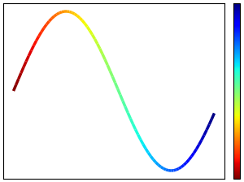</td><td valign='top'><b>Color-mapped Line</b><br>A line whose colour changes with a third column, e.g. a P-T path coloured by time.<br><i>Data:</i> X, Y and the colour column, in the order the line should be drawn.<table class='ex'><tr><td><b>T (°C) (X)</b></td><td><b>P (GPa)</b></td><td><b>Time (Ma)</b></td></tr><tr><td>600</td><td>0.8</td><td>0</td></tr><tr><td>700</td><td>1.1</td><td>5</td></tr></table><br><i>Example data:</i> Help > Example Data > Colour-mapped scatter (3 variables)</td></tr></table><table class='plot'><tr><td width='160' valign='top'>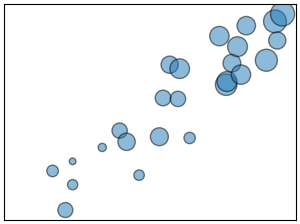</td><td valign='top'><b>Bubble</b><br>Points with size from a third column.<br><i>Data:</i> X column, a Y column, then the size column; select Y and size.<table class='ex'><tr><td><b>X</b></td><td><b>Y</b></td><td><b>Size</b></td></tr><tr><td>1</td><td>2.0</td><td>3</td></tr><tr><td>2</td><td>3.5</td><td>8</td></tr></table><br><i>Example data:</i> Help > Example Data > Colour-mapped scatter (3 variables)</td></tr></table><table class='plot'><tr><td width='160' valign='top'>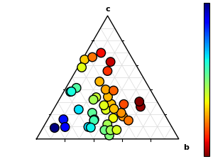</td><td valign='top'><b>Ternary + Color</b><br>A ternary diagram with points coloured by a fourth column.<br><i>Data:</i> Three columns with the three components (any units: wt%, mol% or counts; each row is normalised to 100%). Set the first component as X and the other two as Y; select all three. Add a fourth column for the colour and select it too.<table class='ex'><tr><td><b>A (X)</b></td><td><b>B</b></td><td><b>C</b></td><td><b>Colour</b></td></tr><tr><td>60</td><td>30</td><td>10</td><td>1.2</td></tr><tr><td>30</td><td>40</td><td>30</td><td>3.4</td></tr></table><br><i>Example data:</i> Help > Example Data > Mineral modes (ternary)</td></tr></table><table class='plot'><tr><td width='160' valign='top'>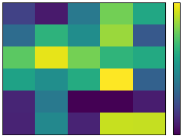</td><td valign='top'><b>Heat Map</b><br>A grid of coloured cells: one row per X label, one column per Y column.<br><i>Data:</i> Row labels in the X column and one column per variable. Values are coloured, not plotted as lines.<table class='ex'><tr><td><b>Sample (X)</b></td><td><b>SiO2</b></td><td><b>MgO</b></td><td><b>FeO</b></td></tr><tr><td>A</td><td>48</td><td>9</td><td>11</td></tr><tr><td>B</td><td>52</td><td>6</td><td>9</td></tr></table><br><i>Example data:</i> Help > Example Data > Major oxides (TAS, AFM, Harker)</td></tr></table><table class='plot'><tr><td width='160' valign='top'>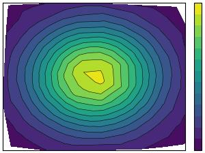</td><td valign='top'><b>Contour (XYZ)</b><br>Contours of Z over X-Y from scattered points (gridded for you).<br><i>Data:</i> Three columns: X, Y and Z; select Y and Z.<table class='ex'><tr><td><b>X</b></td><td><b>Y</b></td><td><b>Z</b></td></tr><tr><td>0.1</td><td>2.3</td><td>14</td></tr><tr><td>1.4</td><td>0.7</td><td>9</td></tr></table><i>Tip:</i> For data already on a regular grid, use a matrixbook.<br><i>Example data:</i> Help > Example Data > Scattered X, Y, Z</td></tr></table><table class='plot'><tr><td width='160' valign='top'>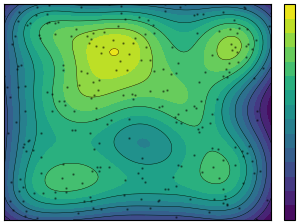</td><td valign='top'><b>2D Kernel Density</b><br>Where points cluster: a smoothed density of X-Y points.<br><i>Data:</i> X and Y columns; select Y.<table class='ex'><tr><td><b>Time (s)</b></td><td><b>Signal A</b></td><td><b>Signal B</b></td></tr><tr><td>0.1</td><td>2.3</td><td></td></tr></table><br><i>Example data:</i> Help > Example Data > Scattered X, Y, Z</td></tr></table><table class='plot'><tr><td width='160' valign='top'>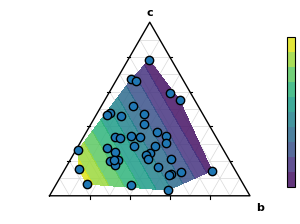</td><td valign='top'><b>Ternary Contour</b><br>Contours of a value over a ternary diagram.<br><i>Data:</i> Three columns with the three components (any units: wt%, mol% or counts; each row is normalised to 100%). Set the first component as X and the other two as Y; select all three. A fourth column holds the value to contour.<table class='ex'><tr><td><b>A (X)</b></td><td><b>B</b></td><td><b>C</b></td><td><b>Z</b></td></tr><tr><td>60</td><td>30</td><td>10</td><td>1.2</td></tr><tr><td>30</td><td>40</td><td>30</td><td>3.4</td></tr></table><br><i>Example data:</i> Help > Example Data > Mineral modes (ternary)</td></tr></table><table class='plot'><tr><td width='160' valign='top'>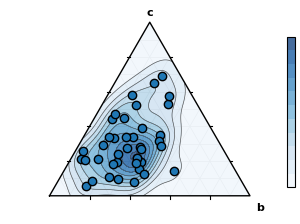</td><td valign='top'><b>Ternary Density (KDE contours)</b><br>Where the samples cluster on a ternary diagram: filled contours of their 2D kernel density (Gaussian, Scott bandwidth) behind the points; useful when hundreds of analyses overlap.<br><i>Data:</i> Three columns with the three components (any units: wt%, mol% or counts; each row is normalised to 100%). Set the first component as X and the other two as Y; select all three.<table class='ex'><tr><td><b>A</b></td><td><b>B</b></td><td><b>C</b></td></tr><tr><td>60</td><td>25</td><td>15</td></tr></table><i>Tip:</i> Density is computed in the plotted triangle coordinates.<br><i>Example data:</i> Help > Example Data > Mineral modes (ternary)</td></tr></table><h3 id='plots-columnsbarsandpie'>Columns, Bars and Pie</h3><table class='plot'><tr><td width='160' valign='top'>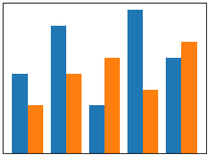</td><td valign='top'><b>Column</b><br>Vertical bars per category; several Y columns give grouped bars.<br><i>Data:</i> Category names in the X column (text), values in Y columns.<table class='ex'><tr><td><b>Site (X)</b></td><td><b>2023</b></td><td><b>2024</b></td></tr><tr><td>North</td><td>12</td><td>15</td></tr><tr><td>South</td><td>8</td><td>11</td></tr></table><br><i>Example data:</i> Help > Example Data > Categories (columns, bars, pie)</td></tr></table><table class='plot'><tr><td width='160' valign='top'>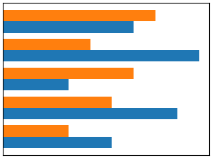</td><td valign='top'><b>Bar (horizontal)</b><br>Horizontal bars per category.<br><i>Data:</i> Category names in X, values in Y columns.<table class='ex'><tr><td><b>Mineral (X)</b></td><td><b>Modal %</b></td></tr><tr><td>Olivine</td><td>55</td></tr><tr><td>Pyroxene</td><td>30</td></tr></table><br><i>Example data:</i> Help > Example Data > Categories (columns, bars, pie)</td></tr></table><table class='plot'><tr><td width='160' valign='top'>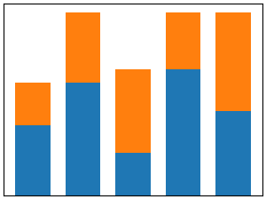</td><td valign='top'><b>Stacked Column</b><br>Bars stacked on each other, so the height is the total.<br><i>Data:</i> Categories in X, one Y column per part.<table class='ex'><tr><td><b>Sample (X)</b></td><td><b>Qz</b></td><td><b>Fsp</b></td><td><b>Lith</b></td></tr><tr><td>S1</td><td>60</td><td>25</td><td>15</td></tr><tr><td>S2</td><td>45</td><td>30</td><td>25</td></tr></table><br><i>Example data:</i> Help > Example Data > Categories (columns, bars, pie)</td></tr></table><table class='plot'><tr><td width='160' valign='top'>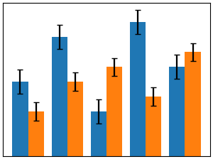</td><td valign='top'><b>Column + Error Bars</b><br>Bars with error bars.<br><i>Data:</i> Categories in X, then pairs: value column followed by its error column.<table class='ex'><tr><td><b>Group (X)</b></td><td><b>Mean</b></td><td><b>SD</b></td></tr><tr><td>A</td><td>4.1</td><td>0.3</td></tr><tr><td>B</td><td>5.6</td><td>0.5</td></tr></table><br><i>Example data:</i> Help > Example Data > Categories (columns, bars, pie)</td></tr></table><table class='plot'><tr><td width='160' valign='top'>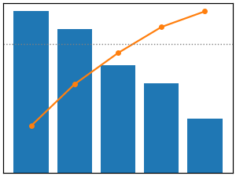</td><td valign='top'><b>Pareto Chart</b><br>Bars sorted from largest to smallest with the cumulative percentage line.<br><i>Data:</i> Categories in X and one column of counts.<table class='ex'><tr><td><b>Defect (X)</b></td><td><b>Count</b></td></tr><tr><td>Crack</td><td>42</td></tr><tr><td>Void</td><td>17</td></tr></table><br><i>Example data:</i> Help > Example Data > Categories (columns, bars, pie)</td></tr></table><table class='plot'><tr><td width='160' valign='top'>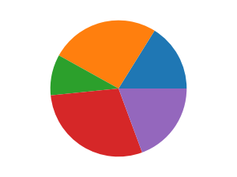</td><td valign='top'><b>Pie</b><br>Shares of a whole.<br><i>Data:</i> Labels in X and one Y column of values.<table class='ex'><tr><td><b>Phase (X)</b></td><td><b>wt%</b></td></tr><tr><td>Bridgmanite</td><td>75</td></tr><tr><td>Ferropericlase</td><td>18</td></tr></table><br><i>Example data:</i> Help > Example Data > Categories (columns, bars, pie)</td></tr></table><h3 id='plots-multipanelandmultiaxis'>Multi-Panel and Multi-Axis</h3><table class='plot'><tr><td width='160' valign='top'>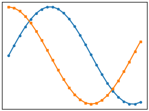</td><td valign='top'><b>Double-Y</b><br>Two Y columns on separate left and right axes against one X.<br><i>Data:</i> X column and two Y columns; select both Y columns.<table class='ex'><tr><td><b>Time (X)</b></td><td><b>Temperature (°C)</b></td><td><b>Pressure (GPa)</b></td></tr><tr><td>0</td><td>25</td><td>0.1</td></tr><tr><td>10</td><td>800</td><td>5.2</td></tr></table><br><i>Example data:</i> Help > Example Data > Time series (two quantities)</td></tr></table><table class='plot'><tr><td width='160' valign='top'>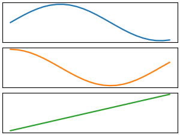</td><td valign='top'><b>Stacked Panels (shared X)</b><br>One panel per Y column, stacked vertically with a shared X axis.<br><i>Data:</i> Put the X values in one column set as X, and one or more Y columns next to it. Select the Y columns (or nothing, to use every Y column) and choose the plot.<table class='ex'><tr><td><b>Time (s)</b></td><td><b>Signal A</b></td><td><b>Signal B</b></td></tr><tr><td>0</td><td>1.02</td><td>0.88</td></tr><tr><td>1</td><td>1.35</td><td>0.97</td></tr><tr><td>2</td><td>1.61</td><td>1.10</td></tr></table><br><i>Example data:</i> Help > Example Data > Spectra at several temperatures</td></tr></table><table class='plot'><tr><td width='160' valign='top'>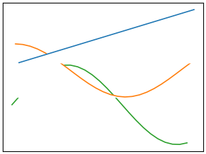</td><td valign='top'><b>Waterfall (offset curves)</b><br>Curves shifted upward one after another, e.g. spectra at several temperatures.<br><i>Data:</i> Shared X (e.g. Raman shift) and one Y column per spectrum.<table class='ex'><tr><td><b>Shift (cm⁻¹) (X)</b></td><td><b>25 °C</b></td><td><b>200 °C</b></td><td><b>400 °C</b></td></tr><tr><td>200</td><td>12</td><td>14</td><td>15</td></tr><tr><td>201</td><td>13</td><td>14</td><td>16</td></tr></table><br><i>Example data:</i> Help > Example Data > Spectra at several temperatures</td></tr></table><table class='plot'><tr><td width='160' valign='top'>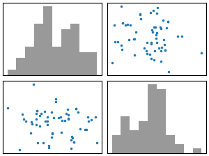</td><td valign='top'><b>Scatter Matrix</b><br>Every selected column plotted against every other one: quick look at correlations.<br><i>Data:</i> Select three or more numeric columns.<table class='ex'><tr><td><b>SiO2</b></td><td><b>MgO</b></td><td><b>FeO</b></td><td><b>CaO</b></td></tr><tr><td>48</td><td>9</td><td>11</td><td>10</td></tr><tr><td>52</td><td>6</td><td>9</td><td>8</td></tr></table><br><i>Example data:</i> Help > Example Data > Major oxides (TAS, AFM, Harker)</td></tr></table><table class='plot'><tr><td width='160' valign='top'>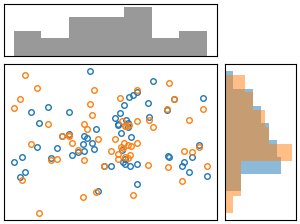</td><td valign='top'><b>Scatter + Marginal Histograms</b><br>A scatter plot with the distribution of X and Y on its edges.<br><i>Data:</i> X column and one Y column.<table class='ex'><tr><td><b>Time (s)</b></td><td><b>Signal A</b></td><td><b>Signal B</b></td></tr><tr><td>0</td><td>1.02</td><td>0.88</td></tr><tr><td>1</td><td>1.35</td><td>0.97</td></tr><tr><td>2</td><td>1.61</td><td>1.10</td></tr></table><br><i>Example data:</i> Help > Example Data > Calibration with error bars</td></tr></table><h3 id='plots-statistical'>Statistical</h3><table class='plot'><tr><td width='160' valign='top'>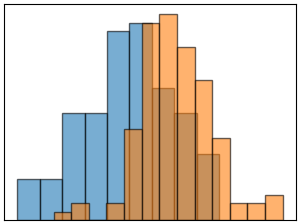</td><td valign='top'><b>Histogram</b><br>The distribution of values in each column.<br><i>Data:</i> One column per sample; select the columns.<table class='ex'><tr><td><b>Control</b></td><td><b>Treatment A</b></td><td><b>Treatment B</b></td></tr><tr><td>10.2</td><td>12.1</td><td>13.0</td></tr><tr><td>9.8</td><td>11.7</td><td>14.2</td></tr><tr><td>10.9</td><td>12.6</td><td>13.4</td></tr></table><i>Tip:</i> Bins are chosen automatically; Graph Properties sets the style.<br><i>Example data:</i> Help > Example Data > Three groups (box plots, ANOVA)</td></tr></table><table class='plot'><tr><td width='160' valign='top'>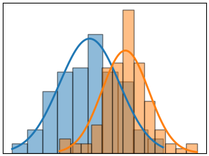</td><td valign='top'><b>Histogram + Normal Curve</b><br>Histogram with the fitted normal curve.<br><i>Data:</i> One column of values.<table class='ex'><tr><td><b>Control</b></td><td><b>Treatment A</b></td><td><b>Treatment B</b></td></tr><tr><td>10.2</td><td>12.1</td><td>13.0</td></tr><tr><td>9.8</td><td>11.7</td><td>14.2</td></tr><tr><td>10.9</td><td>12.6</td><td>13.4</td></tr></table><br><i>Example data:</i> Help > Example Data > Three groups (box plots, ANOVA)</td></tr></table><table class='plot'><tr><td width='160' valign='top'>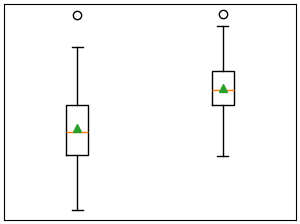</td><td valign='top'><b>Box</b><br>Median, quartiles and range of each group side by side.<br><i>Data:</i> Each column is one group or sample: put the values of group 1 in the first column, group 2 in the next, and so on (columns can have different lengths). Select the columns to compare.<table class='ex'><tr><td><b>Control</b></td><td><b>Treatment A</b></td><td><b>Treatment B</b></td></tr><tr><td>10.2</td><td>12.1</td><td>13.0</td></tr><tr><td>9.8</td><td>11.7</td><td>14.2</td></tr><tr><td>10.9</td><td>12.6</td><td>13.4</td></tr></table><br><i>Example data:</i> Help > Example Data > Three groups (box plots, ANOVA)</td></tr></table><table class='plot'><tr><td width='160' valign='top'>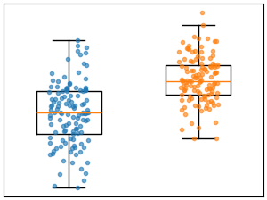</td><td valign='top'><b>Box + Data Points</b><br>Box plot with every point drawn on top.<br><i>Data:</i> Each column is one group or sample: put the values of group 1 in the first column, group 2 in the next, and so on (columns can have different lengths). Select the columns to compare.<table class='ex'><tr><td><b>Control</b></td><td><b>Treatment A</b></td><td><b>Treatment B</b></td></tr><tr><td>10.2</td><td>12.1</td><td>13.0</td></tr><tr><td>9.8</td><td>11.7</td><td>14.2</td></tr><tr><td>10.9</td><td>12.6</td><td>13.4</td></tr></table><br><i>Example data:</i> Help > Example Data > Three groups (box plots, ANOVA)</td></tr></table><table class='plot'><tr><td width='160' valign='top'>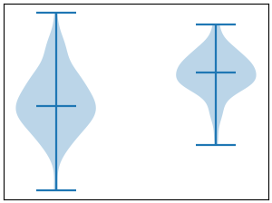</td><td valign='top'><b>Violin</b><br>The shape of each group&#x27;s distribution.<br><i>Data:</i> Each column is one group or sample: put the values of group 1 in the first column, group 2 in the next, and so on (columns can have different lengths). Select the columns to compare.<table class='ex'><tr><td><b>Control</b></td><td><b>Treatment A</b></td><td><b>Treatment B</b></td></tr><tr><td>10.2</td><td>12.1</td><td>13.0</td></tr><tr><td>9.8</td><td>11.7</td><td>14.2</td></tr><tr><td>10.9</td><td>12.6</td><td>13.4</td></tr></table><br><i>Example data:</i> Help > Example Data > Three groups (box plots, ANOVA)</td></tr></table><table class='plot'><tr><td width='160' valign='top'>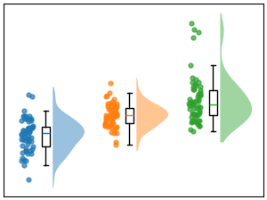</td><td valign='top'><b>Raincloud (violin + box + points)</b><br>Each group&#x27;s distribution three ways: a half violin (density), a box plot and every point.<br><i>Data:</i> Each column is one group; select the columns to compare.<table class='ex'><tr><td><b>Group A</b></td><td><b>Group B</b></td></tr><tr><td>10.2</td><td>12.1</td></tr><tr><td>9.8</td><td>11.7</td></tr></table><br><i>Example data:</i> Help > Example Data > Detrital zircon ages</td></tr></table><table class='plot'><tr><td width='160' valign='top'>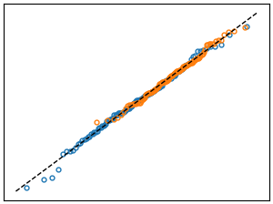</td><td valign='top'><b>Q-Q Plot</b><br>Sample quantiles against a theoretical distribution: points on the line mean the distribution fits.<br><i>Data:</i> One column of values.<table class='ex'><tr><td><b>Control</b></td><td><b>Treatment A</b></td><td><b>Treatment B</b></td></tr><tr><td>10.2</td><td>12.1</td><td>13.0</td></tr><tr><td>9.8</td><td>11.7</td><td>14.2</td></tr><tr><td>10.9</td><td>12.6</td><td>13.4</td></tr></table><br><i>Example data:</i> Help > Example Data > Three groups (box plots, ANOVA)</td></tr></table><table class='plot'><tr><td width='160' valign='top'>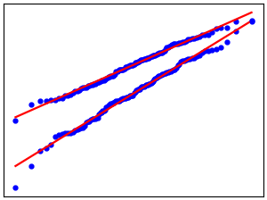</td><td valign='top'><b>Normal Probability</b><br>Values on a normal probability scale.<br><i>Data:</i> One column of values.<table class='ex'><tr><td><b>Control</b></td><td><b>Treatment A</b></td><td><b>Treatment B</b></td></tr><tr><td>10.2</td><td>12.1</td><td>13.0</td></tr><tr><td>9.8</td><td>11.7</td><td>14.2</td></tr><tr><td>10.9</td><td>12.6</td><td>13.4</td></tr></table><br><i>Example data:</i> Help > Example Data > Three groups (box plots, ANOVA)</td></tr></table><table class='plot'><tr><td width='160' valign='top'>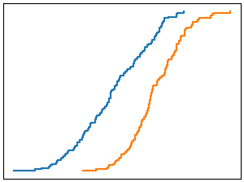</td><td valign='top'><b>Cumulative Probability</b><br>The empirical cumulative distribution of each column.<br><i>Data:</i> One column per sample.<table class='ex'><tr><td><b>Control</b></td><td><b>Treatment A</b></td><td><b>Treatment B</b></td></tr><tr><td>10.2</td><td>12.1</td><td>13.0</td></tr><tr><td>9.8</td><td>11.7</td><td>14.2</td></tr><tr><td>10.9</td><td>12.6</td><td>13.4</td></tr></table><br><i>Example data:</i> Help > Example Data > Three groups (box plots, ANOVA)</td></tr></table><table class='plot'><tr><td width='160' valign='top'>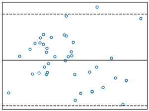</td><td valign='top'><b>Bland-Altman</b><br>Difference between two methods against their mean, with the bias and limits of agreement.<br><i>Data:</i> Method A in a column set as X, method B in a Y column; one row per sample measured both ways.<table class='ex'><tr><td><b>EPMA (X)</b></td><td><b>LA-ICP-MS</b></td></tr><tr><td>1.20</td><td>1.25</td></tr><tr><td>2.31</td><td>2.20</td></tr></table><br><i>Example data:</i> Help > Example Data > Two methods (Bland-Altman)</td></tr></table><table class='plot'><tr><td width='160' valign='top'>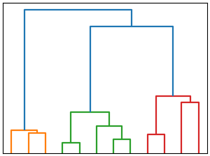</td><td valign='top'><b>Dendrogram (cluster rows)</b><br>A tree that groups similar rows (samples).<br><i>Data:</i> Row labels in X and one column per variable.<table class='ex'><tr><td><b>Sample (X)</b></td><td><b>SiO2</b></td><td><b>MgO</b></td></tr><tr><td>A</td><td>48</td><td>9</td></tr><tr><td>B</td><td>52</td><td>6</td></tr></table><br><i>Example data:</i> Help > Example Data > Major oxides (TAS, AFM, Harker)</td></tr></table><h3 id='plots-specializedandgeoscience'>Specialized and Geoscience</h3><table class='plot'><tr><td width='160' valign='top'></td><td valign='top'><b>Ternary</b><br>Three components on a triangle, with 0-100% ticks on every edge.<br><i>Data:</i> Three columns with the three components (any units: wt%, mol% or counts; each row is normalised to 100%). Set the first component as X and the other two as Y; select all three.<table class='ex'><tr><td><b>Olivine (X)</b></td><td><b>Pyroxene</b></td><td><b>Plagioclase</b></td></tr><tr><td>62</td><td>25</td><td>13</td></tr><tr><td>40</td><td>35</td><td>25</td></tr><tr><td>15</td><td>30</td><td>55</td></tr></table><br><i>Example data:</i> Help > Example Data > Mineral modes (ternary)</td></tr></table><table class='plot'><tr><td width='160' valign='top'></td><td valign='top'><b>Piper Diagram</b><br>Water types: cation and anion triangles and the central diamond.<br><i>Data:</i> Six columns in meq/L, in this order: Ca (set as X), Mg, Na+K, Cl, SO4, HCO3+CO3. A Label column names the samples. If your data are in mg/L, use Column &gt; Convert Ions mg/L to meq/L first.<table class='ex'><tr><td><b>Ca (X)</b></td><td><b>Mg</b></td><td><b>Na+K</b></td><td><b>Cl</b></td><td><b>SO4</b></td><td><b>HCO3+CO3</b></td></tr><tr><td>3.1</td><td>1.2</td><td>0.8</td><td>0.6</td><td>0.9</td><td>3.6</td></tr></table><br><i>Example data:</i> Help > Example Data > Water chemistry (Piper)</td></tr></table><table class='plot'><tr><td width='160' valign='top'></td><td valign='top'><b>Polar (theta deg, r)</b><br>Radius against angle.<br><i>Data:</i> Angle in degrees as X, radius columns as Y.<table class='ex'><tr><td><b>Angle (X)</b></td><td><b>r</b></td></tr><tr><td>0</td><td>1.0</td></tr><tr><td>30</td><td>1.4</td></tr></table><br><i>Example data:</i> Help > Example Data > Wind direction and speed</td></tr></table><table class='plot'><tr><td width='160' valign='top'></td><td valign='top'><b>Radar / Spider</b><br>Each row or column as a polygon across several axes (not the geochemical spider).<br><i>Data:</i> Axis labels in X and one Y column per series.<table class='ex'><tr><td><b>Property (X)</b></td><td><b>Sample 1</b></td><td><b>Sample 2</b></td></tr><tr><td>Hardness</td><td>6</td><td>4</td></tr></table><br><i>Example data:</i> Help > Example Data > Categories (columns, bars, pie)</td></tr></table><table class='plot'><tr><td width='160' valign='top'></td><td valign='top'><b>Wind Rose</b><br>How often each direction and speed occur.<br><i>Data:</i> Direction in degrees as X and speed as Y; one row per observation.<table class='ex'><tr><td><b>Direction (X)</b></td><td><b>Speed (m/s)</b></td></tr><tr><td>270</td><td>5.2</td></tr><tr><td>250</td><td>3.8</td></tr></table><br><i>Example data:</i> Help > Example Data > Wind direction and speed</td></tr></table><table class='plot'><tr><td width='160' valign='top'></td><td valign='top'><b>Sankey (flows)</b><br>Flows between stages; band width shows the amount.<br><i>Data:</i> Three columns: source, target and value. The dialog asks which is which.<table class='ex'><tr><td><b>From</b></td><td><b>To</b></td><td><b>Amount</b></td></tr><tr><td>Mine</td><td>Mill</td><td>100</td></tr><tr><td>Mill</td><td>Tailings</td><td>35</td></tr></table><br><i>Example data:</i> Help > Example Data > Material flows (Sankey)</td></tr></table><h3 id='plots-geochemistry'>Geochemistry</h3><table class='plot'><tr><td width='160' valign='top'></td><td valign='top'><b>Spider: REE / CI Chondrite</b><br>Each sample as a line of element concentrations divided by CI chondrite (McDonough &amp; Sun 1995), on a log axis. Rare earth elements La to Lu.<br><i>Data:</i> One row per sample. Put the sample names in a column set as X (or Label), and one column per element in ppm, named after the element: La, Ce, Nd ... (&#x27;La (ppm)&#x27; or &#x27;La_ppm&#x27; also work). Columns can be in any order; they are sorted into the standard order. Text such as &#x27;&lt;0.1&#x27; or &#x27;bdl&#x27; leaves a gap, bridged by a dotted line.<table class='ex'><tr><td><b>Sample (X)</b></td><td><b>La</b></td><td><b>Ce</b></td><td><b>Nd</b></td><td><b>Sm</b></td><td><b>Eu</b></td><td><b>Yb</b></td></tr><tr><td>MT-01</td><td>23.1</td><td>48.2</td><td>21.0</td><td>4.6</td><td>1.3</td><td>2.1</td></tr><tr><td>MT-02</td><td>8.4</td><td>19.9</td><td>11.2</td><td>3.1</td><td>&lt;0.1</td><td>2.4</td></tr></table><i>Tip:</i> Add Eu/Eu* or Ce/Ce* columns with the formulas eu_anomaly(Eu, Sm, Gd) and ce_anomaly(Ce, La, Pr).<br><i>Example data:</i> Help > Example Data > Trace elements for spider diagrams</td></tr></table><table class='plot'><tr><td width='160' valign='top'></td><td valign='top'><b>Spider: REE / Primitive Mantle</b><br>Each sample as a line of element concentrations divided by primitive mantle (McDonough &amp; Sun 1995), on a log axis. Rare earth elements La to Lu.<br><i>Data:</i> One row per sample. Put the sample names in a column set as X (or Label), and one column per element in ppm, named after the element: La, Ce, Nd ... (&#x27;La (ppm)&#x27; or &#x27;La_ppm&#x27; also work). Columns can be in any order; they are sorted into the standard order. Text such as &#x27;&lt;0.1&#x27; or &#x27;bdl&#x27; leaves a gap, bridged by a dotted line.<table class='ex'><tr><td><b>Sample (X)</b></td><td><b>La</b></td><td><b>Ce</b></td><td><b>Nd</b></td><td><b>Sm</b></td><td><b>Eu</b></td><td><b>Yb</b></td></tr><tr><td>MT-01</td><td>23.1</td><td>48.2</td><td>21.0</td><td>4.6</td><td>1.3</td><td>2.1</td></tr><tr><td>MT-02</td><td>8.4</td><td>19.9</td><td>11.2</td><td>3.1</td><td>&lt;0.1</td><td>2.4</td></tr></table><i>Tip:</i> Add Eu/Eu* or Ce/Ce* columns with the formulas eu_anomaly(Eu, Sm, Gd) and ce_anomaly(Ce, La, Pr).<br><i>Example data:</i> Help > Example Data > Trace elements for spider diagrams</td></tr></table><table class='plot'><tr><td width='160' valign='top'></td><td valign='top'><b>Spider: Multi-element / Primitive Mantle</b><br>Each sample as a line of element concentrations divided by primitive mantle (McDonough &amp; Sun 1995), on a log axis. Trace elements in order of incompatibility (Cs ... Lu).<br><i>Data:</i> One row per sample. Put the sample names in a column set as X (or Label), and one column per element in ppm, named after the element: La, Ce, Nd ... (&#x27;La (ppm)&#x27; or &#x27;La_ppm&#x27; also work). Columns can be in any order; they are sorted into the standard order. Text such as &#x27;&lt;0.1&#x27; or &#x27;bdl&#x27; leaves a gap, bridged by a dotted line.<table class='ex'><tr><td><b>Sample (X)</b></td><td><b>La</b></td><td><b>Ce</b></td><td><b>Nd</b></td><td><b>Sm</b></td><td><b>Eu</b></td><td><b>Yb</b></td></tr><tr><td>MT-01</td><td>23.1</td><td>48.2</td><td>21.0</td><td>4.6</td><td>1.3</td><td>2.1</td></tr><tr><td>MT-02</td><td>8.4</td><td>19.9</td><td>11.2</td><td>3.1</td><td>&lt;0.1</td><td>2.4</td></tr></table><i>Tip:</i> Add Eu/Eu* or Ce/Ce* columns with the formulas eu_anomaly(Eu, Sm, Gd) and ce_anomaly(Ce, La, Pr).<br><i>Example data:</i> Help > Example Data > Trace elements for spider diagrams</td></tr></table><table class='plot'><tr><td width='160' valign='top'></td><td valign='top'><b>Spider: Multi-element / N-MORB</b><br>Each sample as a line of element concentrations divided by N-MORB (Sun &amp; McDonough 1989), on a log axis. Trace elements in order of incompatibility.<br><i>Data:</i> One row per sample. Put the sample names in a column set as X (or Label), and one column per element in ppm, named after the element: La, Ce, Nd ... (&#x27;La (ppm)&#x27; or &#x27;La_ppm&#x27; also work). Columns can be in any order; they are sorted into the standard order. Text such as &#x27;&lt;0.1&#x27; or &#x27;bdl&#x27; leaves a gap, bridged by a dotted line.<table class='ex'><tr><td><b>Sample (X)</b></td><td><b>La</b></td><td><b>Ce</b></td><td><b>Nd</b></td><td><b>Sm</b></td><td><b>Eu</b></td><td><b>Yb</b></td></tr><tr><td>MT-01</td><td>23.1</td><td>48.2</td><td>21.0</td><td>4.6</td><td>1.3</td><td>2.1</td></tr><tr><td>MT-02</td><td>8.4</td><td>19.9</td><td>11.2</td><td>3.1</td><td>&lt;0.1</td><td>2.4</td></tr></table><i>Tip:</i> Add Eu/Eu* or Ce/Ce* columns with the formulas eu_anomaly(Eu, Sm, Gd) and ce_anomaly(Ce, La, Pr).<br><i>Example data:</i> Help > Example Data > Trace elements for spider diagrams</td></tr></table><table class='plot'><tr><td width='160' valign='top'></td><td valign='top'><b>Spider: Multi-element / CI Chondrite</b><br>Each sample as a line of element concentrations divided by CI chondrite (McDonough &amp; Sun 1995), on a log axis. Trace elements in order of incompatibility.<br><i>Data:</i> One row per sample. Put the sample names in a column set as X (or Label), and one column per element in ppm, named after the element: La, Ce, Nd ... (&#x27;La (ppm)&#x27; or &#x27;La_ppm&#x27; also work). Columns can be in any order; they are sorted into the standard order. Text such as &#x27;&lt;0.1&#x27; or &#x27;bdl&#x27; leaves a gap, bridged by a dotted line.<table class='ex'><tr><td><b>Sample (X)</b></td><td><b>La</b></td><td><b>Ce</b></td><td><b>Nd</b></td><td><b>Sm</b></td><td><b>Eu</b></td><td><b>Yb</b></td></tr><tr><td>MT-01</td><td>23.1</td><td>48.2</td><td>21.0</td><td>4.6</td><td>1.3</td><td>2.1</td></tr><tr><td>MT-02</td><td>8.4</td><td>19.9</td><td>11.2</td><td>3.1</td><td>&lt;0.1</td><td>2.4</td></tr></table><i>Tip:</i> Add Eu/Eu* or Ce/Ce* columns with the formulas eu_anomaly(Eu, Sm, Gd) and ce_anomaly(Ce, La, Pr).<br><i>Example data:</i> Help > Example Data > Trace elements for spider diagrams</td></tr></table><table class='plot'><tr><td width='160' valign='top'></td><td valign='top'><b>Spider: REE / PAAS (sediments)</b><br>Each sample as a line of element concentrations divided by Post-Archean Australian Shale (Taylor &amp; McLennan 1985), on a log axis. For sediments and soils.<br><i>Data:</i> One row per sample. Put the sample names in a column set as X (or Label), and one column per element in ppm, named after the element: La, Ce, Nd ... (&#x27;La (ppm)&#x27; or &#x27;La_ppm&#x27; also work). Columns can be in any order; they are sorted into the standard order. Text such as &#x27;&lt;0.1&#x27; or &#x27;bdl&#x27; leaves a gap, bridged by a dotted line.<table class='ex'><tr><td><b>Sample (X)</b></td><td><b>La</b></td><td><b>Ce</b></td><td><b>Nd</b></td><td><b>Sm</b></td><td><b>Eu</b></td><td><b>Yb</b></td></tr><tr><td>MT-01</td><td>23.1</td><td>48.2</td><td>21.0</td><td>4.6</td><td>1.3</td><td>2.1</td></tr><tr><td>MT-02</td><td>8.4</td><td>19.9</td><td>11.2</td><td>3.1</td><td>&lt;0.1</td><td>2.4</td></tr></table><i>Tip:</i> Add Eu/Eu* or Ce/Ce* columns with the formulas eu_anomaly(Eu, Sm, Gd) and ce_anomaly(Ce, La, Pr).<br><i>Example data:</i> Help > Example Data > Trace elements for spider diagrams</td></tr></table><table class='plot'><tr><td width='160' valign='top'></td><td valign='top'><b>TAS (SiO2 vs Na2O+K2O)</b><br>Total alkali-silica classification of volcanic rocks (Le Bas et al. 1986) with the field names.<br><i>Data:</i> SiO2 in wt% as X, and either one column with Na2O+K2O or two columns Na2O and K2O (they are added). Use analyses recalculated to 100% volatile-free.<table class='ex'><tr><td><b>SiO2 (X)</b></td><td><b>Na2O</b></td><td><b>K2O</b></td></tr><tr><td>49.8</td><td>2.9</td><td>0.6</td></tr><tr><td>63.2</td><td>4.1</td><td>2.3</td></tr></table><br><i>Example data:</i> Help > Example Data > Major oxides (TAS, AFM, Harker)</td></tr></table><table class='plot'><tr><td width='160' valign='top'></td><td valign='top'><b>QAP (Streckeisen)</b><br>Classification of plutonic rocks from modal quartz (Q), alkali feldspar (A) and plagioclase (P).<br><i>Data:</i> Q as X, then A and P (modal %, any total; normalised to 100%). Narrow fields are numbered; the key is under the plot.<table class='ex'><tr><td><b>Q (X)</b></td><td><b>A</b></td><td><b>P</b></td></tr><tr><td>30</td><td>35</td><td>35</td></tr><tr><td>5</td><td>60</td><td>35</td></tr></table><i>Tip:</i> Only valid when mafic minerals are below 90%.<br><i>Example data:</i> Help > Example Data > Modal Q-A-P (Streckeisen)</td></tr></table><table class='plot'><tr><td width='160' valign='top'></td><td valign='top'><b>Feldspar Ternary (An-Ab-Or)</b><br>Feldspar compositions on the An-Ab-Or triangle with the plagioclase (albite to anorthite) and alkali-feldspar (anorthoclase, K-feldspar) names.<br><i>Data:</i> Three columns in mol%: Ab, Or and An (from microprobe analyses: Ab = Na, Or = K, An = Ca on a cation basis). Columns named Ab, Or and An are found in any order; otherwise use Ab as X, then Or and An.<table class='ex'><tr><td><b>Ab (X)</b></td><td><b>Or</b></td><td><b>An</b></td></tr><tr><td>68.2</td><td>1.1</td><td>30.7</td></tr><tr><td>31.5</td><td>62.0</td><td>6.5</td></tr></table><i>Tip:</i> Calculate end-members with a formula, e.g. An = 100*Ca/(Ca + Na + K).<br><i>Example data:</i> Help > Example Data > Feldspar compositions (An-Ab-Or)</td></tr></table><table class='plot'><tr><td width='160' valign='top'></td><td valign='top'><b>Pyroxene Quadrilateral (Wo-En-Fs)</b><br>Ca-Mg-Fe pyroxene compositions on the En-Fs-Di-Hd quadrilateral with the names of Morimoto (1988): diopside, hedenbergite, augite, pigeonite, enstatite, ferrosilite.<br><i>Data:</i> Three columns in mol%: Wo, En and Fs (Ca, Mg and Fe2+ + Fe3+ + Mn on a cation basis; Column &gt; Mineral Formula gives them from oxide wt%). Named columns are found in any order; otherwise Wo as X, then En and Fs.<table class='ex'><tr><td><b>Wo (X)</b></td><td><b>En</b></td><td><b>Fs</b></td></tr><tr><td>44.1</td><td>42.3</td><td>13.6</td></tr><tr><td>9.5</td><td>60.2</td><td>30.3</td></tr></table><br><i>Example data:</i> Help > Example Data > Pyroxene microprobe analyses (Wo-En-Fs)</td></tr></table><table class='plot'><tr><td width='160' valign='top'></td><td valign='top'><b>Ultramafic Ol-Opx-Cpx (IUGS)</b><br>IUGS names of ultramafic rocks (dunite, harzburgite, lherzolite, wehrlite, pyroxenites) from modal olivine, orthopyroxene and clinopyroxene.<br><i>Data:</i> Three columns of modal %: Ol, Opx and Cpx (any total; normalised). Named columns are found in any order; otherwise Ol as X, then Opx and Cpx.<table class='ex'><tr><td><b>Ol (X)</b></td><td><b>Opx</b></td><td><b>Cpx</b></td></tr><tr><td>72</td><td>20</td><td>8</td></tr><tr><td>15</td><td>40</td><td>45</td></tr></table><i>Tip:</i> Valid for rocks with more than 90% mafic minerals.<br><i>Example data:</i> Help > Example Data > Ultramafic rock modes (Ol-Opx-Cpx)</td></tr></table><table class='plot'><tr><td width='160' valign='top'></td><td valign='top'><b>Soil Texture (USDA)</b><br>Soil or sediment texture on the USDA triangle with the twelve texture classes (sand, loam, silty clay ...).<br><i>Data:</i> Three columns in %: Sand, Silt and Clay (grain sizes 2-0.05, 0.05-0.002 and below 0.002 mm). Columns named Sand, Silt and Clay are found in any order; otherwise use Sand as X, then Silt and Clay.<table class='ex'><tr><td><b>Sand (X)</b></td><td><b>Silt</b></td><td><b>Clay</b></td></tr><tr><td>40</td><td>40</td><td>20</td></tr><tr><td>10</td><td>60</td><td>30</td></tr></table><i>Tip:</i> Rows need not add to exactly 100; they are normalised.<br><i>Example data:</i> Help > Example Data > Soil texture (USDA)</td></tr></table><table class='plot'><tr><td width='160' valign='top'></td><td valign='top'><b>Harker Diagrams (oxides vs SiO2)</b><br>Harker variation diagrams: each oxide against SiO2 in its own small panel, to follow fractionation trends through a magma series.<br><i>Data:</i> One row per sample with oxides in wt% in columns (SiO2, TiO2, Al2O3, FeOt, MgO, CaO, Na2O, K2O, or trace elements). Select SiO2 and the columns to show; SiO2 is found by name, otherwise X is used. One panel per column.<table class='ex'><tr><td><b>Sample</b></td><td><b>SiO2</b></td><td><b>TiO2</b></td><td><b>MgO</b></td><td><b>K2O</b></td></tr><tr><td>B-1</td><td>49.2</td><td>1.6</td><td>8.1</td><td>0.4</td></tr><tr><td>R-3</td><td>73.5</td><td>0.2</td><td>0.3</td><td>4.6</td></tr></table><i>Tip:</i> Recalculate the analyses to 100% volatile-free first so the trends are comparable.<br><i>Example data:</i> Help > Example Data > Major oxides (TAS, AFM, Harker)</td></tr></table><table class='plot'><tr><td width='160' valign='top'></td><td valign='top'><b>Shand A/CNK vs A/NK</b><br>Alumina saturation (Shand 1943; Maniar &amp; Piccoli 1989): metaluminous, peraluminous or peralkaline, from molar A/CNK = Al2O3/(CaO+Na2O+K2O) and A/NK = Al2O3/(Na2O+K2O). The dashed line at A/CNK 1.1 separates I- and S-type granites (Chappell &amp; White 1974).<br><i>Data:</i> Oxides in wt% in columns named Al2O3, CaO, Na2O and K2O (any order); select them all and the molar ratios are calculated. Or give A/CNK as X and A/NK as Y if you have them already.<table class='ex'><tr><td><b>Sample</b></td><td><b>Al2O3</b></td><td><b>CaO</b></td><td><b>Na2O</b></td><td><b>K2O</b></td></tr><tr><td>G-1</td><td>14.2</td><td>1.8</td><td>3.4</td><td>4.6</td></tr></table><i>Tip:</i> CaO should strictly exclude the Ca in apatite; correct it first if P2O5 is high.<br><i>Example data:</i> Help > Example Data > Major oxides (TAS, AFM, Harker)</td></tr></table><table class='plot'><tr><td width='160' valign='top'></td><td valign='top'><b>Frost: Fe-number vs SiO2</b><br>Frost et al. (2001) granite classification, step 1: FeOt/(FeOt+MgO) against SiO2 separates ferroan from magnesian granitoids (line 0.486 + 0.0046 SiO2).<br><i>Data:</i> Oxides in wt% in columns named SiO2, FeOt (or FeO*, FeO; Fe2O3 is added as FeO), MgO, Na2O, K2O and CaO (any order); select them. The same selection works for both Frost diagrams.<table class='ex'><tr><td><b>Sample</b></td><td><b>SiO2</b></td><td><b>FeOt</b></td><td><b>MgO</b></td><td><b>Na2O</b></td><td><b>K2O</b></td><td><b>CaO</b></td></tr><tr><td>G-1</td><td>71.2</td><td>2.4</td><td>0.5</td><td>3.6</td><td>4.8</td><td>1.1</td></tr></table><i>Tip:</i> Step 3 (alumina saturation) is the Shand A/CNK vs A/NK diagram.<br><i>Example data:</i> Help > Example Data > Major oxides (TAS, AFM, Harker)</td></tr></table><table class='plot'><tr><td width='160' valign='top'></td><td valign='top'><b>Frost: MALI vs SiO2</b><br>Frost et al. (2001) granite classification, step 2: the modified alkali-lime index Na2O+K2O-CaO against SiO2 (alkalic, alkali-calcic, calc-alkalic, calcic).<br><i>Data:</i> Oxides in wt% in columns named SiO2, FeOt (or FeO*, FeO; Fe2O3 is added as FeO), MgO, Na2O, K2O and CaO (any order); select them. The same selection works for both Frost diagrams.<table class='ex'><tr><td><b>Sample</b></td><td><b>SiO2</b></td><td><b>FeOt</b></td><td><b>MgO</b></td><td><b>Na2O</b></td><td><b>K2O</b></td><td><b>CaO</b></td></tr><tr><td>G-1</td><td>71.2</td><td>2.4</td><td>0.5</td><td>3.6</td><td>4.8</td><td>1.1</td></tr></table><i>Tip:</i> The boundaries are defined for SiO2 50-77 wt%.<br><i>Example data:</i> Help > Example Data > Major oxides (TAS, AFM, Harker)</td></tr></table><table class='plot'><tr><td width='160' valign='top'></td><td valign='top'><b>AFM (Irvine &amp; Baragar)</b><br>AFM ternary (A = Na2O + K2O, F = FeO total, M = MgO) with the tholeiitic / calc-alkaline boundary of Irvine &amp; Baragar (1971), for subalkaline volcanic rocks.<br><i>Data:</i> Oxides in wt% in columns named Na2O, K2O, FeOt (or FeO*, FeO; Fe2O3 is added as FeO), MgO; select them all. Or give A, F and M directly as X, then two Y columns.<table class='ex'><tr><td><b>Sample</b></td><td><b>Na2O</b></td><td><b>K2O</b></td><td><b>FeOt</b></td><td><b>MgO</b></td></tr><tr><td>B-1</td><td>2.6</td><td>0.4</td><td>11.2</td><td>8.1</td></tr><tr><td>A-2</td><td>4.0</td><td>1.9</td><td>5.8</td><td>2.0</td></tr></table><i>Tip:</i> Use it for subalkaline rocks only (check with TAS first).<br><i>Example data:</i> Help > Example Data > Major oxides (TAS, AFM, Harker)</td></tr></table><table class='plot'><tr><td width='160' valign='top'></td><td valign='top'><b>Pearce Granite: Rb vs Y+Nb</b><br>Granite tectonic setting (Pearce et al. 1984): syn-collisional, volcanic-arc, within-plate and ocean-ridge granites.<br><i>Data:</i> One row per granite sample with Rb, Y, Nb, Yb and Ta in ppm, in columns named after the elements (any order; &#x27;Rb (ppm)&#x27; works). Select all the element columns; the sums (Y+Nb, Yb+Ta) are formed for you.<table class='ex'><tr><td><b>Sample</b></td><td><b>Rb</b></td><td><b>Y</b></td><td><b>Nb</b></td><td><b>Yb</b></td><td><b>Ta</b></td></tr><tr><td>G-1</td><td>185</td><td>28</td><td>14</td><td>2.9</td><td>1.4</td></tr></table><br><i>Example data:</i> Help > Example Data > Granite trace elements (Pearce diagrams)</td></tr></table><table class='plot'><tr><td width='160' valign='top'></td><td valign='top'><b>Pearce Granite: Nb vs Y</b><br>Granite tectonic setting from Nb and Y (Pearce et al. 1984); the dashed line bounds anomalous ridge granites.<br><i>Data:</i> One row per granite sample with Rb, Y, Nb, Yb and Ta in ppm, in columns named after the elements (any order; &#x27;Rb (ppm)&#x27; works). Select all the element columns; the sums (Y+Nb, Yb+Ta) are formed for you.<table class='ex'><tr><td><b>Sample</b></td><td><b>Rb</b></td><td><b>Y</b></td><td><b>Nb</b></td><td><b>Yb</b></td><td><b>Ta</b></td></tr><tr><td>G-1</td><td>185</td><td>28</td><td>14</td><td>2.9</td><td>1.4</td></tr></table><br><i>Example data:</i> Help > Example Data > Granite trace elements (Pearce diagrams)</td></tr></table><table class='plot'><tr><td width='160' valign='top'></td><td valign='top'><b>Pearce Granite: Rb vs Yb+Ta</b><br>Granite tectonic setting from Rb against Yb + Ta (Pearce et al. 1984).<br><i>Data:</i> One row per granite sample with Rb, Y, Nb, Yb and Ta in ppm, in columns named after the elements (any order; &#x27;Rb (ppm)&#x27; works). Select all the element columns; the sums (Y+Nb, Yb+Ta) are formed for you.<table class='ex'><tr><td><b>Sample</b></td><td><b>Rb</b></td><td><b>Y</b></td><td><b>Nb</b></td><td><b>Yb</b></td><td><b>Ta</b></td></tr><tr><td>G-1</td><td>185</td><td>28</td><td>14</td><td>2.9</td><td>1.4</td></tr></table><br><i>Example data:</i> Help > Example Data > Granite trace elements (Pearce diagrams)</td></tr></table><table class='plot'><tr><td width='160' valign='top'></td><td valign='top'><b>Pearce Granite: Ta vs Yb</b><br>Granite tectonic setting from Ta and Yb (Pearce et al. 1984); the dashed line bounds anomalous ridge granites.<br><i>Data:</i> One row per granite sample with Rb, Y, Nb, Yb and Ta in ppm, in columns named after the elements (any order; &#x27;Rb (ppm)&#x27; works). Select all the element columns; the sums (Y+Nb, Yb+Ta) are formed for you.<table class='ex'><tr><td><b>Sample</b></td><td><b>Rb</b></td><td><b>Y</b></td><td><b>Nb</b></td><td><b>Yb</b></td><td><b>Ta</b></td></tr><tr><td>G-1</td><td>185</td><td>28</td><td>14</td><td>2.9</td><td>1.4</td></tr></table><br><i>Example data:</i> Help > Example Data > Granite trace elements (Pearce diagrams)</td></tr></table><table class='plot'><tr><td width='160' valign='top'></td><td valign='top'><b>Pearce 2008: Th/Yb vs Nb/Yb</b><br>Crustal input to basalts: oceanic basalts lie in the diagonal MORB-OIB array; arc basalts and crustally contaminated magmas plot above it (Th added by subduction or the crust). Th and Nb are immobile, so altered and metamorphosed basalts can be used.<br><i>Data:</i> One row per basalt with Th, Nb and Yb in ppm in columns named after the elements; select them (a group column colours the samples).<table class='ex'><tr><td><b>Sample</b></td><td><b>Th</b></td><td><b>Nb</b></td><td><b>Yb</b></td></tr><tr><td>B-1</td><td>0.12</td><td>2.3</td><td>3.1</td></tr></table><i>Tip:</i> Lines digitised from Pearce (2008) Fig. 2a; N-MORB, E-MORB and OIB are marked.<br><i>Example data:</i> Help > Example Data > Oceanic and arc basalts (Pearce 2008)</td></tr></table><table class='plot'><tr><td width='160' valign='top'></td><td valign='top'><b>Pearce 2008: TiO2/Yb vs Nb/Yb</b><br>Melting depth: OIB (deep melting, garnet in the residue) have high TiO2/Yb, MORB low; Nb/Yb separates N- from E-MORB (1.45, the chondrite value) and tholeiitic from alkalic OIB (dashed line).<br><i>Data:</i> One row per basalt with TiO2 (wt%), Nb and Yb (ppm), columns named after the elements.<table class='ex'><tr><td><b>Sample</b></td><td><b>TiO2</b></td><td><b>Nb</b></td><td><b>Yb</b></td></tr><tr><td>B-1</td><td>1.5</td><td>2.3</td><td>3.1</td></tr></table><i>Tip:</i> Lines digitised from Pearce (2008) Fig. 2b.<br><i>Example data:</i> Help > Example Data > Oceanic and arc basalts (Pearce 2008)</td></tr></table><h3 id='plots-geochronology'>Geochronology</h3><table class='plot'><tr><td width='160' valign='top'></td><td valign='top'><b>Concordia (Wetherill)</b><br>U-Pb analyses as 95% error ellipses on the Wetherill concordia, with the weighted mean 206Pb/238U age.<br><i>Data:</i> 207Pb/235U as X, then 206Pb/238U, the 1-sigma absolute errors of X and Y, and optionally rho. Select the four or five columns.<table class='ex'><tr><td><b>207/235 (X)</b></td><td><b>206/238</b></td><td><b>s 207/235</b></td><td><b>s 206/238</b></td><td><b>rho</b></td></tr><tr><td>0.640</td><td>0.0809</td><td>0.0064</td><td>0.00065</td><td>0.8</td></tr></table><i>Tip:</i> Decay constants of Jaffey et al. (1971); 238U/235U = 137.818 (Hiess et al. 2012). Errors as percentages: convert with a column formula first.<br><i>Example data:</i> Help > Example Data > Zircon U-Pb (concordia)</td></tr></table><table class='plot'><tr><td width='160' valign='top'></td><td valign='top'><b>Concordia (Tera-Wasserburg)</b><br>U-Pb analyses on the Tera-Wasserburg concordia (good for young or common-Pb-bearing zircon).<br><i>Data:</i> 238U/206Pb as X, then 207Pb/206Pb, the 1-sigma absolute errors and optionally rho.<table class='ex'><tr><td><b>238/206 (X)</b></td><td><b>207/206</b></td><td><b>s X</b></td><td><b>s Y</b></td><td><b>rho</b></td></tr><tr><td>12.36</td><td>0.0573</td><td>0.10</td><td>0.0006</td><td>0.2</td></tr></table><br><i>Example data:</i> Help > Example Data > Zircon U-Pb (concordia)</td></tr></table><table class='plot'><tr><td width='160' valign='top'></td><td valign='top'><b>Isochron (York regression)</b><br>Isochron age from the York et al. (2004) regression with errors in both ratios and their correlation.<br><i>Data:</i> Parent ratio (87Rb/86Sr, 147Sm/144Nd, 176Lu/177Hf or 187Re/188Os) as X, then the daughter ratio, the 1-sigma absolute errors of X and Y and optionally rho. Choose the decay system in Edit Plot (extra &#x27;system&#x27;).<table class='ex'><tr><td><b>87Rb/86Sr (X)</b></td><td><b>87Sr/86Sr</b></td><td><b>s X</b></td><td><b>s Y</b></td></tr><tr><td>0.90</td><td>0.72027</td><td>0.009</td><td>0.00003</td></tr></table><i>Tip:</i> Analysis &gt; Geochronology gives the same result as a report.<br><i>Example data:</i> Help > Example Data > Rb-Sr isochron (geochronology)</td></tr></table><table class='plot'><tr><td width='160' valign='top'></td><td valign='top'><b>Weighted Mean (ages)</b><br>Values with 2-sigma bars, the inverse-variance weighted mean with its 2-sigma band, MSWD and p.<br><i>Data:</i> Sample or spot labels as X, then the values and their 1-sigma errors.<table class='ex'><tr><td><b>Spot (X)</b></td><td><b>Age (Ma)</b></td><td><b>1s</b></td></tr><tr><td>z1</td><td>1851</td><td>5</td></tr></table><br><i>Example data:</i> Help > Example Data > Zircon U-Pb (concordia)</td></tr></table><table class='plot'><tr><td width='160' valign='top'></td><td valign='top'><b>Detrital Age KDE + PDP</b><br>Detrital ages as a histogram, a kernel density estimate (bandwidth by least-squares cross-validation) and, with errors, a probability density plot.<br><i>Data:</i> One column of ages; add a 1-sigma error column next to it for the PDP.<table class='ex'><tr><td><b>Age (Ma)</b></td><td><b>1s</b></td></tr><tr><td>552</td><td>11</td></tr><tr><td>1103</td><td>22</td></tr></table><br><i>Example data:</i> Help > Example Data > Detrital zircon ages</td></tr></table><table class='plot'><tr><td width='160' valign='top'></td><td valign='top'><b>Cumulative Age Distribution</b><br>Cumulative age distributions of several samples, to compare detrital populations.<br><i>Data:</i> One column of ages per sample.<table class='ex'><tr><td><b>Sample A</b></td><td><b>Sample B</b></td></tr><tr><td>552</td><td>910</td></tr><tr><td>1103</td><td>870</td></tr></table><br><i>Example data:</i> Help > Example Data > Detrital zircon ages</td></tr></table><h3 id='plots-multivariatepca'>Multivariate (PCA)</h3><table class='plot'><tr><td width='160' valign='top'></td><td valign='top'><b>PCA Biplot (scores + loadings)</b><br>Samples (points) and variables (arrows) on the first two principal components. Samples near each other are alike; an arrow points to where samples rich in that variable lie; arrows close together are correlated.<br><i>Data:</i> Select two or more numeric columns (the variables, e.g. oxides or trace elements); each row is one sample. Variables are standardised (mean 0, SD 1) so units do not matter. A text column such as Rock type colours the samples (Graph &gt; Group Samples By).<table class='ex'><tr><td><b>Sample</b></td><td><b>SiO2</b></td><td><b>MgO</b></td><td><b>CaO</b></td><td><b>Rb</b></td><td><b>Rock type</b></td></tr><tr><td>A1</td><td>51.2</td><td>7.1</td><td>10.3</td><td>12</td><td>basalt</td></tr></table><i>Tip:</i> Analysis &gt; Statistics &gt; Principal Component Analysis gives the numbers.<br><i>Example data:</i> Help > Example Data > Major oxides (TAS, AFM, Harker)</td></tr></table><table class='plot'><tr><td width='160' valign='top'></td><td valign='top'><b>PCA Scores (samples)</b><br>Sample scores on two components with a 95% ellipse per group: separate clusters = different populations.<br><i>Data:</i> Select two or more numeric columns (the variables, e.g. oxides or trace elements); each row is one sample. Variables are standardised (mean 0, SD 1) so units do not matter. A text column such as Rock type colours the samples (Graph &gt; Group Samples By).<table class='ex'><tr><td><b>Sample</b></td><td><b>SiO2</b></td><td><b>MgO</b></td><td><b>CaO</b></td><td><b>Rb</b></td><td><b>Rock type</b></td></tr><tr><td>A1</td><td>51.2</td><td>7.1</td><td>10.3</td><td>12</td><td>basalt</td></tr></table><br><i>Example data:</i> Help > Example Data > Major oxides (TAS, AFM, Harker)</td></tr></table><table class='plot'><tr><td width='160' valign='top'></td><td valign='top'><b>PCA Loadings (correlation circle)</b><br>Each variable&#x27;s correlation with two components. Arrows near the circle are well shown by these two components; short arrows need other components.<br><i>Data:</i> Select two or more numeric columns (the variables, e.g. oxides or trace elements); each row is one sample. Variables are standardised (mean 0, SD 1) so units do not matter. A text column such as Rock type colours the samples (Graph &gt; Group Samples By).<table class='ex'><tr><td><b>Sample</b></td><td><b>SiO2</b></td><td><b>MgO</b></td><td><b>CaO</b></td><td><b>Rb</b></td><td><b>Rock type</b></td></tr><tr><td>A1</td><td>51.2</td><td>7.1</td><td>10.3</td><td>12</td><td>basalt</td></tr></table><br><i>Example data:</i> Help > Example Data > Major oxides (TAS, AFM, Harker)</td></tr></table><table class='plot'><tr><td width='160' valign='top'></td><td valign='top'><b>PCA Scree Plot</b><br>Eigenvalue of each component and the cumulative % of variance: keep the components before the &#x27;elbow&#x27;, or those with eigenvalue above 1 (Kaiser).<br><i>Data:</i> Select two or more numeric columns (the variables, e.g. oxides or trace elements); each row is one sample. Variables are standardised (mean 0, SD 1) so units do not matter. A text column such as Rock type colours the samples (Graph &gt; Group Samples By).<table class='ex'><tr><td><b>Sample</b></td><td><b>SiO2</b></td><td><b>MgO</b></td><td><b>CaO</b></td><td><b>Rb</b></td><td><b>Rock type</b></td></tr><tr><td>A1</td><td>51.2</td><td>7.1</td><td>10.3</td><td>12</td><td>basalt</td></tr></table><br><i>Example data:</i> Help > Example Data > Major oxides (TAS, AFM, Harker)</td></tr></table><h3 id='plots-d'>3D</h3><table class='plot'><tr><td width='160' valign='top'></td><td valign='top'><b>3D Scatter</b><br>Points in 3-D; drag to rotate.<br><i>Data:</i> X, Y and Z columns; select Y and Z.<table class='ex'><tr><td><b>X</b></td><td><b>Y</b></td><td><b>Z</b></td></tr><tr><td>1</td><td>2</td><td>3</td></tr></table><br><i>Example data:</i> Help > Example Data > Scattered X, Y, Z</td></tr></table><table class='plot'><tr><td width='160' valign='top'></td><td valign='top'><b>3D Surface</b><br>A surface through scattered X-Y-Z points.<br><i>Data:</i> X, Y and Z columns; select Y and Z.<table class='ex'><tr><td><b>X</b></td><td><b>Y</b></td><td><b>Z</b></td></tr><tr><td>1</td><td>2</td><td>3</td></tr></table><br><i>Example data:</i> Help > Example Data > Scattered X, Y, Z</td></tr></table><h3 id='plots-matrixfromamatrixbook'>Matrix (from a matrixbook)</h3><table class='plot'><tr><td width='160' valign='top'></td><td valign='top'><b>Image / Heat Map</b><br>The matrix as an image with a colour bar.<br><i>Data:</i> Needs a matrixbook (a grid of Z values) rather than a worksheet. Make one with Matrix &gt; New Matrixbook, import an image or grid file, or convert scattered XYZ data with Matrix &gt; Gridding. Make the matrix window active, then choose the plot.</td></tr></table><table class='plot'><tr><td width='160' valign='top'></td><td valign='top'><b>Filled Contour</b><br>Filled contours of the matrix.<br><i>Data:</i> Needs a matrixbook (a grid of Z values) rather than a worksheet. Make one with Matrix &gt; New Matrixbook, import an image or grid file, or convert scattered XYZ data with Matrix &gt; Gridding. Make the matrix window active, then choose the plot.</td></tr></table><table class='plot'><tr><td width='160' valign='top'></td><td valign='top'><b>Contour Lines</b><br>Labelled contour lines of the matrix.<br><i>Data:</i> Needs a matrixbook (a grid of Z values) rather than a worksheet. Make one with Matrix &gt; New Matrixbook, import an image or grid file, or convert scattered XYZ data with Matrix &gt; Gridding. Make the matrix window active, then choose the plot.</td></tr></table><table class='plot'><tr><td width='160' valign='top'></td><td valign='top'><b>3D Colour-map Surface</b><br>The matrix as a coloured 3-D surface.<br><i>Data:</i> Needs a matrixbook (a grid of Z values) rather than a worksheet. Make one with Matrix &gt; New Matrixbook, import an image or grid file, or convert scattered XYZ data with Matrix &gt; Gridding. Make the matrix window active, then choose the plot.</td></tr></table><table class='plot'><tr><td width='160' valign='top'></td><td valign='top'><b>3D Wireframe</b><br>The matrix as a 3-D wire mesh.<br><i>Data:</i> Needs a matrixbook (a grid of Z values) rather than a worksheet. Make one with Matrix &gt; New Matrixbook, import an image or grid file, or convert scattered XYZ data with Matrix &gt; Gridding. Make the matrix window active, then choose the plot.</td></tr></table>

<h2 id='editing'>8. Editing graphs</h2>
<p align='center'></p><p class='cap'>Figure: A graph window: navigation toolbar, the format bar for quick styling, and the plot.</p>
<h3>Format bar</h3><p align='center'></p><p class='cap'>Figure: The format bar: curve, colour, line width and style, symbol, size, hollow, log axes, grid, legend, font.</p>
<p>Above every graph. Pick a curve (or All series), then set its colour (swatches or any colour), line width, line style, symbol,
symbol size and hollow symbols; switch log X or log Y, grid, legend, and the font. <b>Edit plot...</b> reopens the set-up dialog
of colour-mapped plots; <b>Reset</b> removes the format-bar changes. Every change can be undone with Ctrl+Z.</p>
<h3>Graph Properties (live preview)</h3><p align='center'></p><p class='cap'>Figure: Graph Properties with live preview: the graph changes as you type; OK keeps, Cancel undoes, Apply keeps and stays open.</p>
<p><b>Graph > Graph Properties</b> has four tabs: <b>Titles &amp; legend</b> (title, axis titles, legend position and frame),
<b>Axes</b> (linear, log, symlog or logit scales, axis ranges, tick direction, ticks on all sides, minor ticks, grid), <b>Lines &amp; colours</b>
(palette, colour map, line width and style, symbol and size, background) and <b>Fonts &amp; size</b> (font, font size, export size
and DPI). Changes show on the graph as you make them.</p>
<h3>Double-click to edit</h3><p>Double-click a <b>text or arrow</b> to edit its text, a <b>curve</b> to select it in the format bar,
the <b>title, an axis title or the legend</b> to open Graph Properties at the titles tab, and the <b>axes or tick labels</b> to open it at
the axes tab.</p>
<h3>Moving things with the mouse</h3><p>Drag the <b>legend</b>, a <b>text</b> label or an <b>arrow</b> to a new place. The position is
saved in the graph and Ctrl+Z puts it back. A legend that was dragged stays there until you choose another legend position in
Graph Properties.</p>
<h3>Annotations</h3><p><b>Graph > Annotations</b> adds reference lines (horizontal or vertical, with a label), text, arrows,
confidence ellipses, and data from other sheets in the same graph. The dialogs start in the middle of the current axes and show the
item on the graph while you set it.</p>
<h3>Navigation and tools</h3><p>The toolbar above each graph pans and zooms (and Home resets). <b>Data reader</b>: click near a
point to read its X, Y and row. <b>Region tools</b>: drag across an X range for a quick fit, statistics, area, FFT, peaks or to mask
that range.</p>
<h3>Templates, themes, insets and layouts</h3><p>Save the look of a graph as a template and apply it to others; six built-in
themes are included and one can be the default for new graphs. <b>Graph > Add Inset Graph</b> draws another graph in a corner.
<b>Graph > New Layout Page</b> arranges several graphs on one page with (a), (b) ... labels for multi-panel figures.</p>
<p><b>Zoom insets.</b> <b>Graph > Add Zoom Inset</b>, then drag a rectangle around a crowded part of the graph: a magnified copy of that
region appears in the opposite corner, joined to it by connector lines (Undo removes it; <b>Remove Insets and Zoom Insets</b> removes
all). <b>Axis breaks.</b> In Graph Properties > Axes, type two values in <b>Y axis break</b> (or X) such as <code>20, 80</code>: the range
between them is left out and the axis is drawn in two parts joined by // marks, for data with a few very large values.
<b>Graph > Repeat Graph for Every Sheet</b> makes the same graph, with the same format, for every other sheet of the workbook that has
the same columns. <b>File > Export All Graphs to One Multi-page PDF</b> writes every graph and layout as a page of one PDF, each at its
own export size.</p>
<p><b>Graph shape and the shortcut panel.</b> A graph window keeps the shape of the exported figure (Graph Properties &gt; Fonts &amp; size &gt;
<i>Shape on screen</i>: same as export size, 4:3, 1:1, 3:2, 16:9 or fill the window), so plots are not stretched by a wide window. The spare
width on the right holds a panel of shortcuts for the graph (format, add, arrange, analyse, output), in as many columns as fit.
<b>Copy Format to All Graphs</b> gives every other graph the active graph's fonts, sizes and colours. Every dialog with live preview
(Edit Plot, Graph Properties, group styles, annotations, insets, templates) shows a copy of the graph inside the dialog, so you see each
change even when the dialog covers the graph window.</p>


<h2 id='export'>9. Exporting figures</h2>
<p align='center'></p><p class='cap'>Figure: The export dialog: journal width, resolution, size, transparency, editable text and a true-size preview.</p>
<p><b>File > Export Graph / Layout</b> saves PNG, TIFF, JPEG, SVG, PDF or EPS. The dialog sets:</p>
<ul><li><b>Journal size</b>: column widths of Elsevier (90, 140, 190 mm), Springer (84, 174 mm), Nature (89, 183 mm) and Wiley/AGU
(85, 178 mm). The height keeps the graph's shape.</li>
<li><b>Resolution</b>: presets from 72 to 1200 dpi or any value from 10 to 4800; stored in PNG, TIFF and JPEG files so Word and
journals see the right print size.</li><li><b>Size</b> in inches, cm or mm, with the pixel size shown.</li>
<li><b>Transparent background</b> (not for JPEG).</li>
<li><b>Editable text in PDF / EPS / SVG</b>: text is stored as text with embedded TrueType fonts, so labels stay editable in
Illustrator or Inkscape.</li></ul>
<p>The preview shows the figure at the exported size with the real text size; a warning appears if any text is below 6 pt, the
minimum most journals accept. <b>File > Export All Graphs and Layouts</b> saves every graph at once; <b>Edit > Copy Graph to Clipboard</b> puts it on the
clipboard for Word or PowerPoint.</p>


<h2 id='fitting'>10. Curve fitting</h2>
<p align='center'></p><p class='cap'>Figure: The Nonlinear Curve Fit dialog: parameters with fixed values and bounds on the left, the live fit and residuals on the right.</p>
<p><b>Analysis > Fitting</b> holds linear and polynomial fits, the nonlinear fit (Ctrl+F), user-defined functions, multiple-peak
fits, surface fits z = f(x, y), orthogonal distance regression (errors in X and Y), global fits with shared parameters, and batch
fits of many columns.</p>
<h3>The fit dialog</h3><ul>
<li><b>Function</b>: one of 47 built-in models (table below) or <b>User-defined</b>: type <code>y = </code> a formula in x and
your parameter names.</li>
<li><b>Parameters</b>: initial value, <b>Fixed</b> (held constant), lower and upper bounds. <b>Re-guess</b> recomputes initial values from
the data; <b>Use fitted values as initial</b> copies the result into the table.</li>
<li><b>Weighting</b> by an error column (1/&sigma;<sup>2</sup>); parameter errors then use the given errors as absolute.</li>
<li><b>Fit X range</b> to fit part of the data.</li>
<li>Outputs: 95% confidence and prediction bands, a residual plot, fitted and residual columns, and a parameter table pasted on
the graph (a draggable text box). <b>Recalculate automatically</b> re-runs the fit when the data change.</li></ul>
<p>The right side shows the data, the initial-guess curve (orange, dashed), the fit (red) and the residuals, updated a moment after
every change, with R&sup2;, reduced &chi;&sup2; and the parameters.</p>
<h3>How the fit is computed</h3><p>Nonlinear least squares with SciPy <code>curve_fit</code> (trust-region reflective when bounds are
set, Levenberg-Marquardt otherwise). Fixed parameters are removed from the problem. Standard errors are the square roots of the
covariance diagonal, scaled by the reduced &chi;&sup2; unless the fit is weighted; t, p and 95% limits use the residual degrees of
freedom. R&sup2; = 1 - SS<sub>res</sub>/SS<sub>tot</sub>; reduced &chi;&sup2; = SS<sub>res</sub>/(n - p). Confidence bands use the delta method;
prediction bands add the residual variance.</p>
<h3>Built-in models</h3><table class='ref'><tr><th>Model</th><th>Parameters</th><th>Function (Python, as computed)</th></tr><tr><td><b>Gaussian</b></td><td>y0, xc, w, A</td><td><code>y = y0 + A / (w * np.sqrt(np.pi / 2)) * np.exp(-2 * ((x - xc) / w) ** 2)</code></td></tr><tr><td><b>Lorentzian</b></td><td>y0, xc, w, A</td><td><code>y = y0 + 2 * A / np.pi * w / (4 * (x - xc) ** 2 + w ** 2)</code></td></tr><tr><td><b>PseudoVoigt</b></td><td>y0, xc, w, A, mu</td><td><code>y = y0 + A * (mu * 2 / np.pi * w / (4 * (x - xc) ** 2 + w ** 2) + (1 - mu) * np.sqrt(4 * np.log(2)) / (np.sqrt(np.pi) * w) * np.exp(-4 * np.log(2) / w ** 2 * (x - xc) ** 2))</code></td></tr><tr><td><b>ExpDec1</b></td><td>y0, A1, t1</td><td><code>y = y0 + A1 * np.exp(-x / t1)</code></td></tr><tr><td><b>ExpDec2</b></td><td>y0, A1, t1, A2, t2</td><td><code>y = y0 + A1 * np.exp(-x / t1) + A2 * np.exp(-x / t2)</code></td></tr><tr><td><b>ExpGrow1</b></td><td>y0, A1, t1</td><td><code>y = y0 + A1 * np.exp(x / t1)</code></td></tr><tr><td><b>Boltzmann</b></td><td>A1, A2, x0, dx</td><td><code>y = A2 + (A1 - A2) / (1 + np.exp((x - x0) / dx))</code></td></tr><tr><td><b>Logistic</b></td><td>A1, A2, x0, p</td><td><code>y = A2 + (A1 - A2) / (1 + (np.abs(x) / x0) ** p)</code></td></tr><tr><td><b>Allometric (a*x^b)</b></td><td>a, b</td><td><code>y = a * np.abs(x) ** b</code></td></tr><tr><td><b>Hill</b></td><td>START, END, k, n</td><td><code>y = START + (END - START) * x ** n / (k ** n + x ** n)</code></td></tr><tr><td><b>Sine</b></td><td>y0, A, w, xc</td><td><code>y = y0 + A * np.sin(np.pi * (x - xc) / w)</code></td></tr><tr><td><b>Line (a+b*x)</b></td><td>a, b</td><td><code>y = a + b * x</code></td></tr><tr><td><b>ExpDec3</b></td><td>y0, A1, t1, A2, t2, A3, t3</td><td><code>y = y0 + A1 * np.exp(-x / t1) + A2 * np.exp(-x / t2) + A3 * np.exp(-x / t3)</code></td></tr><tr><td><b>ExpAssoc (rise to max)</b></td><td>y0, A1, t1</td><td><code>y = y0 + A1 * (1 - np.exp(-x / t1))</code></td></tr><tr><td><b>Power (y0 + A*x^p)</b></td><td>y0, A, p</td><td><code>y = y0 + A * np.abs(x) ** p</code></td></tr><tr><td><b>Logarithm (y0 + A*ln x)</b></td><td>y0, A</td><td><code>y = y0 + A * np.log(np.abs(x))</code></td></tr><tr><td><b>Langmuir isotherm</b></td><td>qmax, K</td><td><code>y = qmax * K * x / (1 + K * x)</code></td></tr><tr><td><b>Michaelis-Menten</b></td><td>Vmax, Km</td><td><code>y = Vmax * x / (Km + x)</code></td></tr><tr><td><b>Gompertz</b></td><td>a, k, xc</td><td><code>y = a * np.exp(-np.exp(-k * (x - xc)))</code></td></tr><tr><td><b>Weibull CDF</b></td><td>A, lam, k</td><td><code>y = A * (1 - np.exp(-(np.abs(x) / lam) ** k))</code></td></tr><tr><td><b>Voigt</b></td><td>y0, xc, A, wG, wL</td><td><code>y = y0 + A * _sp.voigt_profile(x - xc, np.abs(wG), np.abs(wL))</code></td></tr><tr><td><b>LogNormal peak</b></td><td>y0, xc, w, A</td><td><code>y = y0 + A / (np.sqrt(2 * np.pi) * w * np.abs(x)) * np.exp(-np.log(np.abs(x) / xc) ** 2 / (2 * w ** 2))</code></td></tr><tr><td><b>Error-function step</b></td><td>y0, A, xc, w</td><td><code>y = y0 + A / 2 * (1 + _sp.erf((x - xc) / (w * np.sqrt(2))))</code></td></tr><tr><td><b>Dose-response (log x)</b></td><td>A1, A2, LOGx0, p</td><td><code>y = A1 + (A2 - A1) / (1 + 10 ** ((LOGx0 - x) * p))</code></td></tr><tr><td><b>Arrhenius (x = T in K)</b></td><td>A, Ea</td><td><code>y = A * np.exp(-Ea / (8.314462618 * x))</code></td></tr><tr><td><b>Extreme value peak</b></td><td>y0, xc, w, A</td><td><code>y = y0 + A * np.exp(-np.exp(-z) - z + 1)</code></td></tr><tr><td><b>Asymmetric double sigmoid</b></td><td>y0, xc, A, w1, w2, w3</td><td><code>y = y0 + A / (1 + np.exp(-(x - xc + w1 / 2) / w2)) * (1 - 1 / (1 + np.exp(-(x - xc - w1 / 2) / w3)))</code></td></tr><tr><td><b>GaussAmp (height form)</b></td><td>y0, xc, w, A</td><td><code>y = y0 + A * np.exp(-(x - xc) ** 2 / (2 * w ** 2))</code></td></tr><tr><td><b>LorentzAmp (height form)</b></td><td>y0, xc, w, A</td><td><code>y = y0 + A / (1 + 4 * ((x - xc) / w) ** 2)</code></td></tr><tr><td><b>Pearson VII</b></td><td>y0, xc, w, A, m</td><td><code>y = y0 + A / (1 + ((x - xc) / w) ** 2 * (2 ** (1 / m) - 1)) ** m</code></td></tr><tr><td><b>Breit-Wigner-Fano</b></td><td>y0, xc, w, A, q</td><td><code>y = y0 + A * (1 + e / q) ** 2 / (1 + e ** 2)</code></td></tr><tr><td><b>Doniach-Sunjic (XPS)</b></td><td>y0, xc, A, g, a</td><td><code>y = y0 + A * np.cos(np.pi * a / 2 + (1 - a) * np.arctan(e / g)) / (e ** 2 + g ** 2) ** ((1 - a) / 2)</code></td></tr><tr><td><b>BiGaussian (asymmetric)</b></td><td>y0, xc, A, w1, w2</td><td><code>y = y0 + A * np.exp(-(x - xc) ** 2 / (2 * w ** 2))</code></td></tr><tr><td><b>Logistic 5-parameter</b></td><td>A, D, C, B, E</td><td><code>y = D + (A - D) / (1 + (np.abs(x) / C) ** B) ** E</code></td></tr><tr><td><b>Tanh step</b></td><td>y0, A, xc, w</td><td><code>y = y0 + A * np.tanh((x - xc) / w)</code></td></tr><tr><td><b>Damped sine</b></td><td>y0, A, t0, w, xc</td><td><code>y = y0 + A * np.exp(-x / t0) * np.sin(np.pi * (x - xc) / w)</code></td></tr><tr><td><b>Sinc</b></td><td>y0, A, xc, w</td><td><code>y = y0 + A * np.sinc((x - xc) / w)</code></td></tr><tr><td><b>Avrami (JMAK)</b></td><td>A, k, n</td><td><code>y = A * (1 - np.exp(-k * np.abs(x) ** n))</code></td></tr><tr><td><b>BET isotherm (x = P/P0)</b></td><td>vm, c</td><td><code>y = vm * c * x / ((1 - x) * (1 - x + c * x))</code></td></tr><tr><td><b>Freundlich isotherm</b></td><td>K, n</td><td><code>y = K * np.abs(x) ** (1 / n)</code></td></tr><tr><td><b>Birch-Murnaghan E(V)</b></td><td>V0, K0, K0p, E0</td><td><code>y = E0 + 9 * V0 * K0 / 16 * ((eta - 1) ** 3 * K0p + (eta - 1) ** 2 * (6 - 4 * eta))</code></td></tr><tr><td><b>Birch-Murnaghan P(V)</b></td><td>V0, K0, K0p</td><td><code>y = 1.5 * K0 * (r ** (7 / 3) - r ** (5 / 3)) * (1 + 0.75 * (K0p - 4) * (r ** (2 / 3) - 1))</code></td></tr><tr><td><b>Vogel-Fulcher-Tammann</b></td><td>A, B, T0</td><td><code>y = A * np.exp(B / (x - T0))</code></td></tr><tr><td><b>Rational (a+bx)/(1+cx)</b></td><td>a, b, c</td><td><code>y = (a + b * x) / (1 + c * x)</code></td></tr><tr><td><b>Exponential + linear</b></td><td>y0, A, t, k</td><td><code>y = y0 + A * np.exp(-x / t) + k * x</code></td></tr><tr><td><b>Cos squared (Malus)</b></td><td>y0, A, xc, w</td><td><code>y = y0 + A * np.cos(np.pi * (x - xc) / w) ** 2</code></td></tr><tr><td><b>Biphasic dose-response</b></td><td>A1, A2, LOG1, LOG2, h1, h2, p</td><td><code>y = A1 + span * (p / (1 + 10 ** ((LOG1 - x) * h1)) + (1 - p) / (1 + 10 ** ((LOG2 - x) * h2)))</code></td></tr></table>


<h2 id='spectro'>11. Spectroscopy and peaks</h2>
<p align='center'></p><p class='cap'>Figure: The Peak Analyzer: ALS baseline, three peaks with different shapes, the fit and each component.</p>
<p><b>Peak fitting and deconvolution.</b> To separate overlapping peaks (deconvolution of Raman, FTIR, XRD or XPS bands), use
<b>Analysis > Spectroscopy > Peak Fitting / Deconvolution (Peak Analyzer)</b> (also <b>Analysis > Peak Analyzer</b>, Ctrl+Shift+K).
Each fitted peak is reported with its centre, height, FWHM and area, and the components are drawn under the fit.</p>
<p><b>Analysis > Spectroscopy > Peak Analyzer</b> works in four steps: choose a baseline (none, constant, straight line between the
end points, or asymmetric least squares), find peaks automatically or click the graph to add them (right-click removes the nearest),
set each peak's shape (Gaussian, Lorentzian, pseudo-Voigt or Voigt), whether its centre is fixed, its centre limits, and optionally a
starting width that can be fixed, then fit. For a baseline through chosen points, pick <b>Anchor points</b> and Shift+click the spectrum
where there is no peak (Shift+right-click removes one); each anchor takes the median of the five nearest data points, joined by a
smooth shape-preserving curve or straight segments.
With <b>Fit while I edit</b> the fit updates after every change. The report gives centre, height, FWHM, area and area % for each peak,
and adds baseline, fit and component columns to the sheet, plus a separate sheet listing every peak (shape, centre, height, FWHM,
area and area %).</p>
<p><b>Asymmetric least squares baseline</b> (Eilers &amp; Boelens 2005): a smooth curve z minimises
&Sigma; w<sub>i</sub>(y<sub>i</sub> - z<sub>i</sub>)&sup2; + &lambda; &Sigma; (&Delta;&sup2;z<sub>i</sub>)&sup2;, with weights p for points above z and 1 - p below, iterated ten times;
&lambda; sets the smoothness and p the asymmetry. It uses sparse matrices, so long spectra are fast.</p>
<p><b>Shirley background</b> (XPS; Shirley 1972): in the Peak Analyzer's Baseline list, or <b>Analysis > Spectroscopy > Shirley
Background</b>. The background rises from the intensity at one end of the region to the intensity at the other in proportion to the
peak area lying beyond each point, recalculated until it settles. Choose the region (the X range of the sheet) so that both ends are on
flat background. Checked by building a peak on a known Shirley step and recovering the step to 0.05 counts in 100.</p>


<h2 id='math'>12. Mathematics and signal processing</h2>
<p><b>Analysis > Mathematics</b>: differentiate, integrate (cumulative and area), interpolate (linear, quadratic, cubic), normalise,
average curves, subtract a line or a reference curve, curve intersections, X at a given Y, rise time and polygon area. <b>Derivative (Savitzky-Golay)</b> gives the first to fourth derivative from a local polynomial (Savitzky &amp; Golay 1964), which brings out hidden shoulders before peak fitting; unevenly spaced data are put on an even grid first.
<b>Analysis > Signal Processing</b>: Savitzky-Golay, adjacent-average and median smoothing; FFT; FFT low-pass filter; IIR
(Butterworth, Chebyshev, Bessel, elliptic) and FIR filter design with zero-phase filtering; spectrogram; continuous wavelet
scalogram, wavelet denoising and decomposition; correlation and convolution; Hilbert envelope; coherence. Each command is
listed with a description in the <a href='#menuref'>Menu reference</a>.</p>


<h2 id='stats'>13. Statistics</h2>
<table width='100%'><tr><td valign='top'><p align='center'></p><p class='cap'>Figure: The Statistics menu, grouped by question.</p></td><td valign='top'>
<p>The Statistics menu is grouped by the question you are asking. Hover over a command to see when to use it.</p>
<ul><li><b>Describe</b>: descriptive statistics, correlation, normality and distribution fits, outliers.</li>
<li><b>Compare two groups</b>: t-tests (one-sample, two-sample Student or Welch, paired) or the nonparametric Mann-Whitney and Wilcoxon tests.</li>
<li><b>Compare several groups</b>: one- and two-way ANOVA, ANCOVA, repeated-measures and mixed-design ANOVA, Kruskal-Wallis and Dunn.</li>
<li><b>Counts, proportions and variances</b>: chi-square, Fisher exact, McNemar, proportion tests, F and chi-square variance tests.</li>
<li><b>Regression and models</b>: logistic, generalised linear models, PLS, linear and generalised linear mixed models.</li>
<li><b>Multivariate</b>: PCA, MANOVA, MANCOVA, discriminant analysis (LDA, QDA), k-means and hierarchical clustering.</li>
<li><b>Survival and diagnostics</b>: Kaplan-Meier, Cox regression, ROC curves, Bland-Altman, Cronbach's alpha.</li>
<li><b>Power and sample size</b>.</li></ul></td></tr></table>
<h3>Choosing a test</h3>
<table class='ref'><tr><th>Your question</th><th>Data layout</th><th>Use</th></tr>
<tr><td>Is the mean different from a value?</td><td>One column</td><td>One-sample t-test</td></tr>
<tr><td>Do two independent groups differ?</td><td>Two columns</td><td>Two-sample t-test (normal) or Mann-Whitney</td></tr>
<tr><td>Did the same samples change?</td><td>Two columns, paired by row</td><td>Paired t-test or Wilcoxon</td></tr>
<tr><td>Do three or more groups differ?</td><td>One column per group</td><td>One-way ANOVA (+ Tukey) or Kruskal-Wallis (+ Dunn)</td></tr>
<tr><td>Two factors?</td><td>Long format: factor columns + value</td><td>Two-way ANOVA</td></tr>
<tr><td>Repeated measurements of subjects?</td><td>Long format: subject, time, value</td><td>Repeated-measures ANOVA or a linear mixed model</td></tr>
<tr><td>Are two variables related?</td><td>Two columns</td><td>Correlation, linear fit</td></tr>
<tr><td>Are two categorical variables related?</td><td>Two text columns or a table</td><td>Chi-square or Fisher exact</td></tr>
<tr><td>Which samples group together?</td><td>One row per sample</td><td>PCA, clustering, discriminant analysis</td></tr>
<tr><td>Do two methods agree?</td><td>Two columns</td><td>Bland-Altman</td></tr></table>
<h3>Reports</h3><p align='center'></p><p class='cap'>Figure: A report window (descriptive statistics). Reports can be saved as HTML or PDF.</p>
<p>Results open in a report window with tables of statistics, p-values and confidence intervals; some analyses add columns
(fitted values, residuals, scores, group predictions) or graphs. Reports are saved in the project and can be exported as HTML or PDF.</p>
<h3>Methods</h3><p>Classical tests use SciPy's implementations. Mixed models are fitted by REML or ML with the profiled likelihood of
the lme4 formulation; generalised linear mixed models use the Laplace approximation or adaptive Gauss-Hermite quadrature; small-sample
tests of fixed effects can use the Kenward-Roger adjustment. Each report states the method used.</p>

<style>.eqn { background: #f6f7fb; border-left: 3px solid #7a8bb5; padding: 4px 8px; margin: 4px 0; font-family: 'Cambria Math', 'Times New Roman'; } .example { background: #fbf7ee; border: 1px solid #e3d7b8; padding: 6px; margin: 4px 0; } .menu { color: #555; font-size: 9pt; }</style><h2 id='methods'>13b. Methods guide: equations, when to use each tool, and how to read the results</h2><p>This chapter explains every mathematical and statistical tool in PlotBench: what it does, the equations it uses, when it is the right tool (and when it is not), how to read its result, and a worked example. The examples are calculated with the same code as the program when this manual is built, so you can reproduce them. Statistics answer questions about uncertainty; they never replace looking at the data in a graph first.</p><h3>Which tool for which question</h3><table class='ref'><tr><th>Question</th><th>First choice</th><th>Alternative / check</th></tr><tr><td>Summarise one variable</td><td>Descriptive statistics, histogram, box plot</td><td>Median and IQR if skewed</td></tr><tr><td>Is it normal?</td><td>Shapiro-Wilk + Q-Q plot</td><td>Log-transform concentrations</td></tr><tr><td>Two groups differ?</td><td>Welch t-test</td><td>Mann-Whitney</td></tr><tr><td>Same samples measured twice?</td><td>Paired t-test</td><td>Wilcoxon signed-rank</td></tr><tr><td>Three or more groups?</td><td>One-way ANOVA + Tukey</td><td>Kruskal-Wallis + Dunn</td></tr><tr><td>Two factors?</td><td>Two-way ANOVA</td><td>Aligned ranks or GLM</td></tr><tr><td>Repeated or nested data?</td><td>Linear mixed model</td><td>Repeated-measures ANOVA</td></tr><tr><td>Two variables related?</td><td>Pearson r + linear fit</td><td>Spearman &rho;</td></tr><tr><td>Predict y from x</td><td>Linear or nonlinear fit</td><td>ODR/York if x has errors</td></tr><tr><td>Predict y from many x</td><td>Multiple regression</td><td>PLS when x are collinear</td></tr><tr><td>Yes/no outcome</td><td>Logistic regression</td><td>Fisher exact for a 2&times;2 table</td></tr><tr><td>Categories related?</td><td>Chi-square</td><td>Fisher exact (small counts)</td></tr><tr><td>Many variables: what is the structure?</td><td>PCA (scores, loadings, biplot)</td><td>Clustering</td></tr><tr><td>Assign samples to known groups</td><td>Discriminant analysis</td><td>Classification diagrams</td></tr><tr><td>Two methods agree?</td><td>Bland-Altman</td><td>Paired t-test on differences</td></tr><tr><td>Overlapping peaks</td><td>Peak Analyzer (baseline + fit)</td><td>Derivative spectra to find shoulders</td></tr><tr><td>Periodic signal</td><td>FFT</td><td>Wavelet scalogram if the period drifts</td></tr><tr><td>One age from many analyses</td><td>Weighted mean / concordia age</td><td>Check MSWD and p</td></tr></table><h3 style='color:#16325c'>Describing data</h3><h3>Descriptive statistics</h3><p><b>What it does.</b> Summarises a column: centre (mean, median), spread (standard deviation, variance, range, interquartile range), shape (skewness, kurtosis) and the precision of the mean (standard error, confidence interval).</p><p><b>Equations.</b></p><div class='eqn'>mean x&#772; = &Sigma;x<sub>i</sub>/n &nbsp; | &nbsp; SD s = &radic;[&Sigma;(x<sub>i</sub> &minus; x&#772;)&sup2;/(n &minus; 1)] &nbsp; | &nbsp; SE = s/&radic;n &nbsp; | &nbsp; 95% CI = x&#772; &plusmn; t<sub>0.975, n&minus;1</sub>&middot;SE &nbsp; | &nbsp; CV = 100 s/x&#772; &nbsp; | &nbsp; skewness = [n/((n&minus;1)(n&minus;2))] &Sigma;((x<sub>i</sub> &minus; x&#772;)/s)&sup3;</div><p><b>When to use it.</b> Always, before any test. Report the median and IQR instead of mean and SD when the data are skewed or have outliers (trace elements, grain sizes, concentrations near detection limits).</p><p><b>How to read the result.</b> SD describes the scatter of the samples; SE describes how well the mean is known (it shrinks with more samples). Skewness near 0 = symmetric; above +1 = long tail to high values (try a log scale). A CV of a few % is typical for replicate major-element analyses.</p><div class='example'><b>Worked example.</b> SiO<sub>2</sub> of eight basalts (wt%): 51.2, 49.8, 50.6, 52.1, 50.9, 49.5, 51.7, 50.3. Mean = 50.76, SD = 0.898, standard error = 0.317, median = 50.75, IQR = 1.15, skewness = 0.0779, CV = 1.77 %. The 95% confidence interval of the mean is 50.01 to 51.51 wt%: if the sampling were repeated many times, 95% of such intervals would contain the true mean.</div><p class='menu'>Menu: Statistics &gt; Descriptive Statistics</p><h3>Correlation (Pearson, Spearman, partial)</h3><p><b>What it does.</b> Measures how strongly two columns vary together, from &minus;1 (one goes up as the other goes down) to +1.</p><p><b>Equations.</b></p><div class='eqn'>Pearson r = &Sigma;(x<sub>i</sub> &minus; x&#772;)(y<sub>i</sub> &minus; y&#772;) / &radic;[&Sigma;(x<sub>i</sub> &minus; x&#772;)&sup2; &Sigma;(y<sub>i</sub> &minus; y&#772;)&sup2;]; test: t = r&radic;(n &minus; 2)/&radic;(1 &minus; r&sup2;) with n &minus; 2 degrees of freedom. Spearman &rho; is Pearson's r of the ranks. Partial r<sub>xy&middot;z</sub> = (r<sub>xy</sub> &minus; r<sub>xz</sub>r<sub>yz</sub>)/&radic;[(1 &minus; r<sub>xz</sub>&sup2;)(1 &minus; r<sub>yz</sub>&sup2;)].</div><p><b>When to use it.</b> Pearson for straight-line relations between roughly normal variables; Spearman for monotonic but curved relations, ranks, or data with outliers; partial correlation to remove the effect of a third variable (e.g. two trace elements that both follow SiO<sub>2</sub>).</p><p><b>How to read the result.</b> |r| above about 0.7 is strong, 0.3-0.7 moderate. The p-value says whether r could be zero by chance; with many samples a tiny r can be 'significant' but unimportant. Correlation is not causation. <b>Closed data:</b> oxides that sum to 100% are forced to correlate negatively (if SiO<sub>2</sub> goes up, others must go down), so for compositions use ratios or log-ratios (clr) before reading too much into r.</p><div class='example'><b>Worked example.</b> MgO and CaO of ten lavas from one volcano: Pearson r = 0.989 (p = 7.12e-08), r&sup2; = 0.977, Spearman &rho; = 0.988. 98% of the variance of CaO goes with MgO, as expected when olivine and clinopyroxene crystallise together.</div><p class='menu'>Menu: Statistics &gt; Correlation</p><h3>Normality tests, Q-Q plots and outliers</h3><p><b>What it does.</b> Check whether a column looks like a sample from a normal distribution, which t-tests, ANOVA and many regressions assume; find single values that do not belong.</p><p><b>Equations.</b></p><div class='eqn'>Shapiro-Wilk W = (&Sigma;a<sub>i</sub>x<sub>(i)</sub>)&sup2;/&Sigma;(x<sub>i</sub> &minus; x&#772;)&sup2; (ordered data against expected normal order statistics); Kolmogorov-Smirnov D = max|F<sub>n</sub>(x) &minus; F(x)|; Anderson-Darling weights the tails more. Grubbs G = max|x<sub>i</sub> &minus; x&#772;|/s, compared with a critical value from the t distribution.</div><p><b>When to use it.</b> Before parametric tests on small samples. Shapiro-Wilk is the most powerful for n below about 50; look at the Q-Q plot too (Plot &gt; Statistical &gt; Q-Q Plot): points on the straight line = normal; a curve = skewed; S-shape = heavy tails.</p><p><b>How to read the result.</b> p &lt; 0.05: the data are probably not normal: transform (log for concentrations) or use a nonparametric test. A large sample can fail the test for tiny departures that do not matter, and a small sample can pass while being skewed: trust the plot. Only remove an outlier with a reason (analytical problem, wrong sample); Grubbs assumes the rest is normal and tests one value at a time.</p><div class='example'><b>Worked example.</b> The 15 basalts of suites A and B together: Shapiro-Wilk W = 0.971, p = 0.876, so there is no evidence against normality. Adding a value of 58.0 to suite A, Grubbs' test flags it: G = 2.52 against a critical value of 2.22 (&alpha; = 0.05, n = 9).</div><p class='menu'>Menu: Statistics &gt; Normality and Distributions</p><h3 style='color:#16325c'>Comparing groups</h3><h3>t-tests and their nonparametric alternatives</h3><p><b>What it does.</b> Test whether a mean differs from a value (one-sample), whether two independent groups differ (two-sample) or whether paired measurements changed (paired).</p><p><b>Equations.</b></p><div class='eqn'>one-sample t = (x&#772; &minus; &mu;<sub>0</sub>)/(s/&radic;n); Student two-sample t = (x&#772;<sub>1</sub> &minus; x&#772;<sub>2</sub>)/[s<sub>p</sub>&radic;(1/n<sub>1</sub> + 1/n<sub>2</sub>)], s<sub>p</sub>&sup2; = [(n<sub>1</sub>&minus;1)s<sub>1</sub>&sup2; + (n<sub>2</sub>&minus;1)s<sub>2</sub>&sup2;]/(n<sub>1</sub> + n<sub>2</sub> &minus; 2); Welch t = (x&#772;<sub>1</sub> &minus; x&#772;<sub>2</sub>)/&radic;(s<sub>1</sub>&sup2;/n<sub>1</sub> + s<sub>2</sub>&sup2;/n<sub>2</sub>) with Welch-Satterthwaite df; paired t = d&#772;/(s<sub>d</sub>/&radic;n) on the differences; effect size Cohen's d = (x&#772;<sub>2</sub> &minus; x&#772;<sub>1</sub>)/s<sub>p</sub>.</div><p><b>When to use it.</b> Two groups of roughly normal data. Prefer Welch's version (it does not assume equal variances and loses little when they are equal). Use the paired test when the same samples or standards are measured twice. With skewed data or outliers use Mann-Whitney (independent) or Wilcoxon signed-rank (paired), which compare ranks.</p><p><b>How to read the result.</b> p &lt; 0.05: the means differ more than chance would explain. Report the difference with its confidence interval and the effect size, not only p. A large p does not prove the means are equal; it may only mean there are too few samples (see Power and sample size).</p><div class='example'><b>Worked example.</b> Suite A SiO<sub>2</sub> (mean 50.76) against suite B (mean 53.01): Welch t = -5.26, df = 13, p = 1.54e-04; Cohen's d = 2.69 (a very large difference). Mann-Whitney U = 1, p = 6.22e-04 gives the same answer without assuming normality. Paired example: six standards measured before and after recalibration, paired t = 4.38, p = 0.00719: the recalibration lowered the values.</div><p class='menu'>Menu: Statistics &gt; Compare Two Groups</p><h3>Analysis of variance (ANOVA) and Kruskal-Wallis</h3><p><b>What it does.</b> Tests whether three or more groups share the same mean, by comparing the variation between group means with the variation inside groups.</p><p><b>Equations.</b></p><div class='eqn'>SS<sub>total</sub> = SS<sub>between</sub> + SS<sub>within</sub>; F = [SS<sub>between</sub>/(k &minus; 1)] / [SS<sub>within</sub>/(N &minus; k)]; &eta;&sup2; = SS<sub>between</sub>/SS<sub>total</sub>. Tukey HSD compares every pair with the studentised range q = (x&#772;<sub>i</sub> &minus; x&#772;<sub>j</sub>)/&radic;(MS<sub>within</sub>/n). Two-way ANOVA splits the variance into factor A, factor B and their interaction A&times;B. Kruskal-Wallis H = [12/(N(N+1))]&Sigma;R<sub>i</sub>&sup2;/n<sub>i</sub> &minus; 3(N + 1) on ranks.</div><p><b>When to use it.</b> Several groups (rock units, sites, treatments) of one measurement. Do not run many t-tests instead: with 5 groups there are 10 pairs and the chance of at least one false 'significant' result rises to about 40%. Use two-way ANOVA for two factors (e.g. site and depth), ANCOVA to remove a covariate, repeated-measures ANOVA or a mixed model when the same subjects are measured several times, and Kruskal-Wallis + Dunn when the data are far from normal.</p><p><b>How to read the result.</b> A small p says that at least one group differs; the post-hoc test (Tukey, Bonferroni or Dunn) says which. In two-way ANOVA read the interaction first: if it is significant, the effect of one factor depends on the other and the main effects alone mislead.</p><div class='example'><b>Worked example.</b> SiO<sub>2</sub> of suites A, B and C: SS<sub>between</sub> = 69.1, SS<sub>within</sub> = 12, F(2, 18) = 51.6, p = 3.51e-08, &eta;&sup2; = 0.852 (85% of the variance lies between the suites). Levene's test p = 0.774 (equal variances are reasonable). Kruskal-Wallis H = 17, p = 2.03e-04. Tukey's test then shows which pairs differ.</div><p class='menu'>Menu: Statistics &gt; Compare Several Groups (ANOVA)</p><h3>Counts and proportions: chi-square, Fisher, McNemar, proportion tests</h3><p><b>What it does.</b> Tests whether two categorical variables are related, or whether proportions differ.</p><p><b>Equations.</b></p><div class='eqn'>&chi;&sup2; = &Sigma;(O &minus; E)&sup2;/E, E = (row total &times; column total)/N, df = (r &minus; 1)(c &minus; 1); Fisher's exact test sums hypergeometric probabilities of all tables at least as extreme; McNemar &chi;&sup2; = (b &minus; c)&sup2;/(b + c) for paired yes/no.</div><p><b>When to use it.</b> Counts in categories (rock type by locality, presence/absence). Use Fisher's exact test when any expected count is below 5 (small tables), McNemar when the same items are classified twice.</p><p><b>How to read the result.</b> p &lt; 0.05: the variables are associated. Look at which cells have O much larger than E (the standardised residuals) to see how.</p><div class='example'><b>Worked example.</b> Altered (rows: yes/no) against the presence of a fault within 100 m (columns): table [[18, 7], [6, 14]]. &chi;&sup2; = 7.87, df = 1, p = 0.00501; the smallest expected count is 9.33 (above 5, so the &chi;&sup2; test is valid). Fisher exact p = 0.00728, odds ratio = 6: alteration is about 6 times more likely near faults.</div><p class='menu'>Menu: Statistics &gt; Counts, Proportions and Variances</p><h3 style='color:#16325c'>Fitting and regression</h3><h3>Linear, polynomial and multiple regression</h3><p><b>What it does.</b> Fits y = a + bx (or a polynomial, or y = b<sub>0</sub> + b<sub>1</sub>x<sub>1</sub> + b<sub>2</sub>x<sub>2</sub> + ...) by least squares: the line that makes the sum of squared vertical distances smallest.</p><p><b>Equations.</b></p><div class='eqn'>b = &Sigma;(x<sub>i</sub> &minus; x&#772;)(y<sub>i</sub> &minus; y&#772;)/&Sigma;(x<sub>i</sub> &minus; x&#772;)&sup2;, a = y&#772; &minus; b x&#772;; SE(b) = s/&radic;&Sigma;(x<sub>i</sub> &minus; x&#772;)&sup2;, s&sup2; = &Sigma;(y<sub>i</sub> &minus; &#375;<sub>i</sub>)&sup2;/(n &minus; 2); R&sup2; = 1 &minus; SS<sub>res</sub>/SS<sub>tot</sub>, adjusted R&sup2; = 1 &minus; (1 &minus; R&sup2;)(n &minus; 1)/(n &minus; p &minus; 1). Matrix form for multiple regression: &beta; = (X<sup>T</sup>X)<sup>&minus;1</sup>X<sup>T</sup>y, Cov(&beta;) = s&sup2;(X<sup>T</sup>X)<sup>&minus;1</sup>. With a yErr column the fit is weighted, w<sub>i</sub> = 1/&sigma;<sub>i</sub>&sup2;, and reduced &chi;&sup2; = &Sigma;w<sub>i</sub>(y<sub>i</sub> &minus; &#375;<sub>i</sub>)&sup2;/(n &minus; p) should be near 1 if the errors are right.</div><p><b>When to use it.</b> Calibration lines, trends, predicting one variable from others. Ordinary least squares assumes X is known exactly; when both variables have errors of similar size (e.g. two measured ratios) use orthogonal distance regression or the York regression. Multiple regression: check the variance inflation factor (VIF &gt; 5-10 = predictors too correlated: use PLS or PCA instead).</p><p><b>How to read the result.</b> The slope and its standard error (or 95% CI) carry the answer; R&sup2; only says how much of the scatter the line explains. Confidence band = where the true line lies; prediction band = where a new measurement will fall (wider). Always look at the residuals: they should scatter evenly about zero with no pattern.</p><div class='example'><b>Worked example.</b> A calibration of absorbance against concentration (0-40 ppm, six standards): slope b = 0.02477 &plusmn; 1.29e-04, intercept a = 0.00184 &plusmn; 0.00244, R&sup2; = 0.99989, residual SD s = 0.00437. A sample reading 0.600 has concentration x = (y &minus; a)/b = 24.15 ppm. Check the residual plot: a curve in the residuals means a straight line is the wrong model (try a quadratic) even when R&sup2; is 0.999.</div><p class='menu'>Menu: Analysis &gt; Fitting &gt; Linear Fit / Polynomial Fit / Multiple Linear Regression</p><h3>Nonlinear curve fitting</h3><p><b>What it does.</b> Finds the parameters of any model y = f(x; p<sub>1</sub>, p<sub>2</sub>, ...) that minimise the (weighted) sum of squared residuals, by iteration from starting values (Levenberg-Marquardt, or trust-region reflective when parameters have bounds).</p><p><b>Equations.</b></p><div class='eqn'>minimise &chi;&sup2;(p) = &Sigma;w<sub>i</sub>[y<sub>i</sub> &minus; f(x<sub>i</sub>; p)]&sup2;; parameter covariance = s&sup2;(J<sup>T</sup>WJ)<sup>&minus;1</sup>, J = &part;f/&part;p (Jacobian); AIC = n ln(RSS/n) + 2k, BIC = n ln(RSS/n) + k ln n for comparing models with k parameters.</div><p><b>When to use it.</b> Any physical law that is not a straight line: exponential decay or growth, Arrhenius, Michaelis-Menten, peaks, diffusion profiles, dose-response. Choose the model from the physics, not from the best R&sup2;. Fix parameters you know, and give bounds to keep them physical.</p><p><b>How to read the result.</b> Each parameter comes with a standard error; parameters that are strongly correlated (shown in the report) cannot be determined separately. Compare models with AIC/BIC: lower is better, and a difference of more than about 2 is meaningful. If the fit wanders off, change the starting values (the dialog shows the curve while you set them).</p><div class='example'><b>Worked example.</b> A decay measured at nine times, model y = A<sub>0</sub>e<sup>&minus;kt</sup> + c: A<sub>0</sub> = 100 &plusmn; 0.84, k = 0.181 &plusmn; 0.00414 per hour, c = 5.17 &plusmn; 0.723, half-life ln2/k = 3.82 h, AIC = -1.15.</div><p class='menu'>Menu: Analysis &gt; Fitting &gt; Nonlinear Curve Fit (Ctrl+F)</p><h3>Errors in both variables: ODR and York regression</h3><p><b>What it does.</b> Straight-line fits when X and Y are both measured with errors (and the errors may be correlated), as for isotope ratios.</p><p><b>Equations.</b></p><div class='eqn'>York et al. (2004): minimise S = &Sigma;W<sub>i</sub>(y<sub>i</sub> &minus; a &minus; bx<sub>i</sub>)&sup2; with W<sub>i</sub> = &omega;(x<sub>i</sub>)&omega;(y<sub>i</sub>)/[&omega;(x<sub>i</sub>) + b&sup2;&omega;(y<sub>i</sub>) &minus; 2br<sub>i</sub>&radic;(&omega;(x<sub>i</sub>)&omega;(y<sub>i</sub>))], &omega; = 1/&sigma;&sup2;, iterated for b; MSWD = S/(n &minus; 2).</div><p><b>When to use it.</b> Isochrons, calibrations against reference materials with uncertain values, any two measured quantities. Ordinary least squares here gives a slope biased toward zero.</p><p><b>How to read the result.</b> MSWD (mean square of weighted deviates) about 1 means the scatter matches the stated errors; much above 1 means extra (geological) scatter, and the errors should be multiplied by &radic;MSWD; well below 1 means the errors are overestimated. The probability p of the MSWD should be above 0.05 for a well-defined isochron.</p><div class='example'><b>Worked example.</b> The Pearson-York benchmark data give slope &minus;0.48053 &plusmn; 0.0580 and intercept 5.4799 &plusmn; 0.2950, exactly as published.</div><p class='menu'>Menu: Analysis &gt; Fitting &gt; Orthogonal Distance Regression; Analysis &gt; Geochronology &gt; Isochron Age</p><h3>Logistic regression and generalised linear models (GLM)</h3><p><b>What it does.</b> Regression for outcomes that are not normal: yes/no (logistic), counts (Poisson), positive skewed values (gamma).</p><p><b>Equations.</b></p><div class='eqn'>logit(p) = ln[p/(1 &minus; p)] = b<sub>0</sub> + b<sub>1</sub>x<sub>1</sub> + ...; GLM: g(E[y]) = X&beta; with a link function g, fitted by maximum likelihood; odds ratio = e<sup>b</sup>.</div><p><b>When to use it.</b> Presence/absence of a mineral or deposit against geochemical variables; numbers of events; any outcome bounded at 0 or 1.</p><p><b>How to read the result.</b> An odds ratio of 2 means each unit of x doubles the odds of 'yes'. Check deviance and AIC; the ROC curve gives the classification skill.</p><p class='menu'>Menu: Statistics &gt; Regression and Models</p><h3>PLS regression</h3><p><b>What it does.</b> Predicts y from many strongly correlated predictors (spectra, many elements) by building a few latent components that both summarise X and correlate with y.</p><p><b>Equations.</b></p><div class='eqn'>X = TP<sup>T</sup> + E, y = Tq + f, with components chosen to maximise cov(Xw, y); VIP scores rank the predictors.</div><p><b>When to use it.</b> More predictors than samples, or predictors that are nearly collinear (where multiple regression fails): calibrating concentrations from spectra, predicting a property from a whole analysis.</p><p><b>How to read the result.</b> Choose the number of components by cross-validation (the error stops falling); VIP &gt; 1 marks the important predictors.</p><p class='menu'>Menu: Statistics &gt; Regression and Models &gt; PLS Regression</p><h3>Linear mixed models</h3><p><b>What it does.</b> Regression with random effects for grouped or repeated data (several analyses per sample, several samples per outcrop).</p><p><b>Equations.</b></p><div class='eqn'>y = X&beta; + Zu + &epsilon;, u ~ N(0, G), &epsilon; ~ N(0, R); fitted by restricted maximum likelihood (REML).</div><p><b>When to use it.</b> When observations are not independent: spots within grains, grains within samples, samples within sites. Treating them as independent overstates the certainty.</p><p><b>How to read the result.</b> Fixed effects read like ordinary regression coefficients; the variance components say how much variation lies at each level (e.g. between samples versus within samples).</p><p class='menu'>Menu: Statistics &gt; Regression and Models</p><h3 style='color:#16325c'>Many variables at once</h3><h3 id='pca'>Principal component analysis (PCA)</h3><p><b>What it does.</b> Replaces many correlated columns by a few new, uncorrelated variables (principal components) that carry most of the variation. PC1 is the direction in which the samples differ most, PC2 the next largest at right angles to it, and so on. It is the standard way to look at many variables at once when an X-Y plot or a regression of one variable on another cannot show the structure, as in machine learning and chemometrics.</p><p><b>Equations.</b></p><div class='eqn'>Standardise each variable: z<sub>ij</sub> = (x<sub>ij</sub> &minus; x&#772;<sub>j</sub>)/s<sub>j</sub>. Correlation matrix R = Z<sup>T</sup>Z/(n &minus; 1); R = V&Lambda;V<sup>T</sup> (eigenvectors V, eigenvalues &lambda;<sub>k</sub>, computed by singular value decomposition of Z). Scores T = ZV (where each sample lies on each component); loadings = the columns of V; correlation of variable j with component k = v<sub>jk</sub>&radic;&lambda;<sub>k</sub>; fraction of variance = &lambda;<sub>k</sub>/&Sigma;&lambda;.</div><p><b>When to use it.</b> Many variables measured on the same samples (major and trace elements, spectra, grain-size classes, survey answers) when you want to see which samples resemble each other, which variables move together, how many independent processes are present, or to reduce variables before regression or clustering. Standardising (the default) gives each variable equal weight regardless of its units. For compositional data that sum to 100%, a centred log-ratio transform first (clr(x)<sub>j</sub> = ln(x<sub>j</sub>/g(x)), g = geometric mean of the row; a column formula does it) avoids the spurious negative correlations of closed data. Rows with a missing value are left out.</p><p><b>How to read the result.</b> <b>Scree plot</b>: keep the components before the 'elbow', or those with eigenvalue &gt; 1 (Kaiser). <b>Score plot</b>: samples close together are similar; separate clusters = different populations (colour them by group to test an idea); outliers sit far from the rest. <b>Loading plot / correlation circle</b>: arrows pointing the same way = positively correlated variables, opposite = negatively correlated, at right angles = unrelated; a long arrow near the circle is well represented by these two components. <b>Biplot</b>: samples lie toward the arrows of the variables they are rich in. Components are mathematical directions, not processes: you name them from the loadings (e.g. 'fractionation', 'alteration'), and their signs are arbitrary.</p><div class='example'><b>Worked example.</b> The eight major oxides of the example volcanic series (Help &gt; Example Data &gt; Major oxides), standardised. Eigenvalues: 6.64, 1.02, 0.301, 0.038 ...; PC1 explains 83% and PC2 12.8% of the variance (together 95.8%). Correlations of the oxides with the first three components:<table class='ref'><tr><th>Oxide</th><th>PC1</th><th>PC2</th><th>PC3</th></tr><tr><td>SiO2</td><td>0.99</td><td>0.025</td><td>-0.11</td></tr><tr><td>TiO2</td><td>-0.99</td><td>-0.025</td><td>0.11</td></tr><tr><td>Al2O3</td><td>0.088</td><td>0.99</td><td>0.11</td></tr><tr><td>FeOt</td><td>-0.99</td><td>-0.025</td><td>0.11</td></tr><tr><td>MgO</td><td>-0.99</td><td>-0.025</td><td>0.11</td></tr><tr><td>CaO</td><td>-0.99</td><td>-0.025</td><td>0.11</td></tr><tr><td>Na2O</td><td>0.87</td><td>-0.19</td><td>0.45</td></tr><tr><td>K2O</td><td>0.97</td><td>-0.049</td><td>0.15</td></tr></table><p>PC1 contrasts SiO2, K2O, Na2O (positive) with CaO, MgO, TiO2 (negative): it is the differentiation trend from basalt to rhyolite. Samples with high PC1 scores are evolved, low scores primitive. Only 2 eigenvalue(s) exceed 1, so by the Kaiser rule 2 component(s) describe the data; the eight oxides vary essentially along one direction, as expected for one fractionating magma series. A second, independent process (e.g. alteration moving Na<sub>2</sub>O and K<sub>2</sub>O) would show up as a separate component.</p></div><p class='menu'>Menu: Statistics &gt; Multivariate &gt; Principal Component Analysis (makes the scree plot and biplot); Plot &gt; Multivariate (PCA) for score, loading, biplot and scree graphs of any columns</p><h3>Discriminant analysis (LDA, QDA)</h3><p><b>What it does.</b> Finds the combinations of variables that best separate known groups, then assigns new samples to a group.</p><p><b>Equations.</b></p><div class='eqn'>LDA: maximise between-group over within-group variance, w = S<sub>W</sub><sup>&minus;1</sup>(&mu;<sub>1</sub> &minus; &mu;<sub>2</sub>) for two groups; a sample goes to the group with the largest posterior probability. QDA allows each group its own covariance matrix.</div><p><b>When to use it.</b> Classifying samples with known training groups (tectonic setting from trace elements, provenance, facies). Needs more samples per group than variables.</p><p><b>How to read the result.</b> The classification table (confusion matrix) and the cross-validated accuracy say how well the groups can be told apart; the coefficients say which variables matter. Discriminant diagrams in the literature (e.g. Pearce granite diagrams) were made this way.</p><p class='menu'>Menu: Statistics &gt; Multivariate and Clustering &gt; Discriminant Analysis</p><h3>Clustering: k-means and hierarchical</h3><p><b>What it does.</b> Groups samples without knowing groups in advance.</p><p><b>Equations.</b></p><div class='eqn'>k-means minimises &Sigma;<sub>clusters</sub>&Sigma;<sub>i</sub>||z<sub>i</sub> &minus; &mu;<sub>c</sub>||&sup2; (within-cluster sum of squares) on standardised variables; hierarchical clustering merges the two closest clusters step by step (Ward's method merges the pair that increases the within-cluster variance least) and draws the dendrogram.</div><p><b>When to use it.</b> Exploring whether samples fall into natural families (e.g. several magma batches, source areas). Run PCA first to see the structure; cluster on standardised variables.</p><p><b>How to read the result.</b> k-means needs k: try several and look for the 'elbow' in the within-cluster sum of squares. In the dendrogram, cut where the vertical distances become long: those are well-separated clusters. Clusters always come out, even from random data: check that they make geological sense.</p><p class='menu'>Menu: Statistics &gt; Multivariate and Clustering</p><h3>MANOVA and MANCOVA</h3><p><b>What it does.</b> ANOVA for several response variables at once.</p><p><b>Equations.</b></p><div class='eqn'>Wilks' &Lambda; = |W|/|W + B| (W, B = within- and between-group sums-of-squares-and-products matrices), with Pillai's trace and Hotelling-Lawley as alternatives, converted to approximate F.</div><p><b>When to use it.</b> Do groups differ in their overall composition (several elements together) rather than one element at a time.</p><p><b>How to read the result.</b> A small p says the group mean vectors differ; then use discriminant analysis or univariate ANOVAs to see in which variables.</p><p class='menu'>Menu: Statistics &gt; Multivariate and Clustering</p><h3 style='color:#16325c'>Diagnostics, reliability and planning</h3><h3>Bland-Altman agreement</h3><p><b>What it does.</b> Compares two measurement methods on the same samples.</p><p><b>Equations.</b></p><div class='eqn'>differences d<sub>i</sub> = b<sub>i</sub> &minus; a<sub>i</sub> plotted against means (a<sub>i</sub> + b<sub>i</sub>)/2; bias = d&#772;; limits of agreement = d&#772; &plusmn; 1.96 s<sub>d</sub>.</div><p><b>When to use it.</b> Method comparison (XRF against ICP-MS, two laboratories). A correlation coefficient is the wrong tool here: two methods can correlate perfectly and still disagree.</p><p><b>How to read the result.</b> If the limits of agreement are narrower than the precision you need, the methods are interchangeable. A slope in the plot means the difference depends on concentration.</p><div class='example'><b>Worked example.</b> Eight samples by two methods: mean difference (bias) = 0.412, limits of agreement = -0.202 to 1.03: method B reads 0.412 higher on average, and 95% of single differences lie within those limits.</div><p class='menu'>Menu: Statistics &gt; Survival, Diagnostics and Reliability &gt; Bland-Altman</p><h3>Kaplan-Meier survival, Cox regression, ROC, Cronbach's alpha</h3><p><b>What it does.</b> Time-to-event data with censoring (Kaplan-Meier, Cox), classification skill (ROC) and internal consistency of a questionnaire scale (alpha).</p><p><b>Equations.</b></p><div class='eqn'>Kaplan-Meier S(t) = &Pi;<sub>t<sub>i</sub>&le;t</sub>(1 &minus; d<sub>i</sub>/n<sub>i</sub>); log-rank test compares curves; Cox h(t) = h<sub>0</sub>(t)e<sup>&beta;x</sup> (hazard ratio e<sup>&beta;</sup>); ROC: true-positive against false-positive rate for every cut-off, AUC = area under it; Cronbach &alpha; = [k/(k &minus; 1)](1 &minus; &Sigma;s<sub>i</sub>&sup2;/s<sub>total</sub>&sup2;).</div><p><b>When to use it.</b> Lifetimes of equipment or samples that are still 'alive' at the end (censored); how well a score separates two classes; reliability of a multi-item scale.</p><p><b>How to read the result.</b> AUC 0.5 = no skill, above 0.8 = good; hazard ratio 2 = twice the risk per unit; &alpha; above 0.7 is usually acceptable.</p><p class='menu'>Menu: Statistics &gt; Survival, Diagnostics and Reliability</p><h3>Power and sample size</h3><p><b>What it does.</b> How many samples you need to detect a difference of a given size, or how likely you were to detect it with the samples you have.</p><p><b>Equations.</b></p><div class='eqn'>two-sample t-test, approximately n per group = 2[(z<sub>1&minus;&alpha;/2</sub> + z<sub>1&minus;&beta;</sub>)/d]&sup2;, d = &delta;/&sigma; (effect size).</div><p><b>When to use it.</b> Before a field campaign or experiment, and when a test was not significant (was the study big enough to find anything?).</p><p><b>How to read the result.</b> Power 0.8 is the usual target: an 80% chance of finding a real effect of the stated size.</p><div class='example'><b>Worked example.</b> To detect an effect of 0.8 standard deviations with &alpha; = 0.05 and power 0.8 needs about 25 samples per group (the exact t-based value in PlotBench is one or two more).</div><p class='menu'>Menu: Statistics &gt; Power and Sample Size</p><h3 style='color:#16325c'>Signals and spectra</h3><h3>Smoothing (Savitzky-Golay, moving average, median)</h3><p><b>What it does.</b> Reduces noise. A moving average replaces each point by the mean of a window; a median filter by the median (removes spikes); Savitzky-Golay fits a low-order polynomial to each window and keeps peak heights and widths much better.</p><p><b>Equations.</b></p><div class='eqn'>moving average y&#771;<sub>i</sub> = (1/m)&Sigma;<sub>j</sub>y<sub>i+j</sub>; Savitzky-Golay y&#771;<sub>i</sub> = &Sigma;<sub>j</sub>c<sub>j</sub>y<sub>i+j</sub> with coefficients c<sub>j</sub> from a least-squares polynomial of order p over the window m. The same coefficients give smoothed derivatives.</div><p><b>When to use it.</b> Noisy spectra and time series before reading peak positions; median for spikes (cosmic rays in Raman).</p><p><b>How to read the result.</b> A window wider than the narrowest real feature distorts it: keep the window below about half the peak width. Fit raw data whenever possible; smooth for display and for finding peaks.</p><p class='menu'>Menu: Analysis &gt; Signal Processing &gt; Smooth</p><h3>Fourier transform (FFT) and filters</h3><p><b>What it does.</b> Splits a signal into its frequencies.</p><p><b>Equations.</b></p><div class='eqn'>X<sub>k</sub> = &Sigma;<sub>n=0</sub><sup>N&minus;1</sup>x<sub>n</sub>e<sup>&minus;2&pi;ikn/N</sup>; frequencies k/(N&Delta;t) up to the Nyquist frequency 1/(2&Delta;t); amplitude 2|X<sub>k</sub>|/N; resolution 1/(N&Delta;t). Butterworth filters have a maximally flat pass band; PlotBench filters forwards and backwards (zero phase), so peaks do not shift.</div><p><b>When to use it.</b> Periodic signals, vibration, tides, cyclostratigraphy; removing high-frequency noise or a slow drift.</p><p><b>How to read the result.</b> Peaks in the amplitude spectrum are the dominant periods (period = 1/frequency). Data must be evenly spaced (interpolate first). A longer record gives finer frequency resolution; a finer sampling interval reaches higher frequencies.</p><div class='example'><b>Worked example.</b> A 4 s record sampled at 100 Hz of sin(2&pi;&middot;5t) + 0.5 sin(2&pi;&middot;12t): the two largest peaks are at 5 and 12 Hz, with amplitudes 1 and 0.5; the resolution is 1/4 s = 0.25 Hz and the Nyquist frequency 50 Hz.</div><p class='menu'>Menu: Analysis &gt; Signal Processing</p><h3>Wavelets, spectrogram, Hilbert envelope, correlation</h3><p><b>What it does.</b> Frequency content that changes with time (spectrogram = FFT in sliding windows; continuous wavelet transform = scalogram), the envelope of an oscillation (Hilbert transform), and the similarity of two signals at different lags (cross-correlation).</p><p><b>Equations.</b></p><div class='eqn'>CWT W(a, b) = (1/&radic;a)&int;x(t)&psi;*((t &minus; b)/a)dt; analytic signal x + iH[x], envelope = |x + iH[x]|; cross-correlation r<sub>xy</sub>(&tau;) = &Sigma;x<sub>t</sub>y<sub>t+&tau;</sub>/&radic;(&Sigma;x&sup2;&Sigma;y&sup2;).</div><p><b>When to use it.</b> Signals whose period drifts (climate records, chirps), amplitude modulation, finding the delay between two records.</p><p><b>How to read the result.</b> Bright areas of the scalogram = strong oscillation at that period and time; the lag of the highest cross-correlation is the delay.</p><p class='menu'>Menu: Analysis &gt; Signal Processing</p><h3>Differentiation, integration and interpolation</h3><p><b>What it does.</b> Slope, area under the curve and values between the data points.</p><p><b>Equations.</b></p><div class='eqn'>central difference dy/dx &asymp; (y<sub>i+1</sub> &minus; y<sub>i&minus;1</sub>)/(x<sub>i+1</sub> &minus; x<sub>i&minus;1</sub>); trapezoid area = &Sigma;(x<sub>i+1</sub> &minus; x<sub>i</sub>)(y<sub>i</sub> + y<sub>i+1</sub>)/2; cubic spline: piecewise cubics with continuous first and second derivatives.</div><p><b>When to use it.</b> Rates (heating rate, growth rate), peak areas, resampling to a common X before subtracting or averaging curves.</p><p><b>How to read the result.</b> Derivatives amplify noise: smooth first or use the Savitzky-Golay derivative. A spline can overshoot between widely spaced points; linear interpolation never does.</p><p class='menu'>Menu: Analysis &gt; Mathematics</p><h3>Peak shapes, baselines and deconvolution</h3><p><b>What it does.</b> Separates overlapping peaks into components after removing the background, and reports each peak's centre, height, width and area.</p><p><b>Equations.</b></p><div class='eqn'>Gaussian G(x) = h exp[&minus;4 ln2 (x &minus; x<sub>0</sub>)&sup2;/w&sup2;], area = hw&radic;(&pi;/(4 ln 2)) = 1.0645hw; Lorentzian L(x) = h/[1 + 4(x &minus; x<sub>0</sub>)&sup2;/w&sup2;], area = &pi;hw/2; pseudo-Voigt = &eta;L + (1 &minus; &eta;)G; Voigt = Gaussian &otimes; Lorentzian (w = FWHM). Baselines: ALS minimises &Sigma;w<sub>i</sub>(y<sub>i</sub> &minus; z<sub>i</sub>)&sup2; + &lambda;&Sigma;(&Delta;&sup2;z<sub>i</sub>)&sup2; with small weights for points above z (Eilers &amp; Boelens 2005); Shirley B(x) = I<sub>right</sub> + (I<sub>left</sub> &minus; I<sub>right</sub>)A<sub>beyond x</sub>/A<sub>total</sub>, iterated.</div><p><b>When to use it.</b> Raman, FTIR, XRD, XPS, chromatography. Lorentzian for natural line shapes (gases, XPS core levels before broadening), Gaussian for instrument-dominated or disordered broadening, pseudo-Voigt/Voigt for the usual mixture. ALS for fluorescence backgrounds; Shirley for XPS steps; anchor points when you know where the background is.</p><p><b>How to read the result.</b> Report areas (not heights) for quantities proportional to amount. A fit with more peaks always looks better: add a peak only when the residual shows a systematic shoulder, and fix widths or positions that physics constrains (doublets, known bands).</p><div class='example'><b>Worked example.</b> For the same height and FWHM, a Lorentzian has 1.476 times the area of a Gaussian, because of its long tails.</div><p class='menu'>Menu: Analysis &gt; Peak Analyzer (Ctrl+Shift+K)</p><h3 style='color:#16325c'>Geochemical calculations</h3><h3>Mineral formulae, Fe<sup>3+</sup> and the CIPW norm</h3><p><b>What it does.</b> Mineral formula: oxide wt% &rarr; cations per formula unit on a fixed number of oxygens. CIPW norm: a rock analysis &rarr; the ideal anhydrous minerals that would crystallise from it.</p><p><b>Equations.</b></p><div class='eqn'>moles of oxide m<sub>j</sub> = wt%<sub>j</sub>/M<sub>j</sub>; oxygens O = &Sigma;m<sub>j</sub>o<sub>j</sub>; cations per N oxygens = m<sub>j</sub>c<sub>j</sub>N/O. Droop (1987): Fe<sup>3+</sup> = 2N(1 &minus; T/S), T = ideal cations, S = cations summed with all Fe as Fe<sup>2+</sup>. The norm allocates the molecular proportions in a fixed order (apatite, ilmenite, orthoclase, albite, anorthite ...) and, if silica runs short, converts hypersthene to olivine, albite to nepheline and so on.</div><p><b>When to use it.</b> Formulae for every microprobe analysis (check of quality: cation sums near ideal); the norm to classify fine-grained or glassy rocks, to see silica saturation (quartz-, hypersthene- or nepheline-normative) and for the differentiation index.</p><p><b>How to read the result.</b> Cation sums far from ideal mean a bad analysis or the wrong mineral. Fe<sup>3+</sup> from charge balance is only as good as the analysis (&plusmn;1% on the total moves it a lot). Normative minerals are not the minerals present.</p><p class='menu'>Menu: Column &gt; Mineral Formula from Oxides; Column &gt; CIPW Norm</p><h3>Thermometers, barometers and the coupled P-T solver</h3><p><b>What it does.</b> Temperature and pressure from element exchange or solubility between minerals (and melts), calibrated on experiments.</p><p><b>Equations.</b></p><div class='eqn'>Most calibrations have the form ln K = &minus;&Delta;H/RT + &Delta;S/R &minus; P&Delta;V/RT, i.e. T = (a + bP)/(c &minus; ln K) or P = (&minus;a + T(c &minus; ln K))/b. When a thermometer needs P and a barometer needs T, the solver iterates T<sub>n</sub> = f<sub>T</sub>(P<sub>n</sub>), P<sub>n+1</sub> = f<sub>P</sub>(T<sub>n</sub>) until P changes by less than 0.01 kbar; it converges because thermometers depend only weakly on P.</div><p><b>When to use it.</b> Use only the calibration made for your assemblage and range (the dialog says which). Check equilibrium first: Fe-Mg K<sub>D</sub> tests (olivine-liquid 0.30 &plusmn; 0.03, clinopyroxene-liquid 0.28 &plusmn; 0.08) and textures. Average several mineral pairs.</p><p><b>How to read the result.</b> Quote the calibration error (given for each method; typically &plusmn;30-60 &deg;C and &plusmn;1.5-5 kbar), not the analytical precision. Results outside the calibration range are blank or should be treated as unreliable.</p><div class='example'><b>Worked example.</b> The garnet-orthopyroxene barometers run on the 12 garnet-lherzolite experiments of Brey et al. (1990): Brey &amp; K&ouml;hler P<sub>BKN</sub> +0.1 &plusmn; 2.6 kbar from the run pressures; Putirka (2008) liquid and clinopyroxene components reproduce his Tables 1 and 3 exactly.</div><p class='menu'>Menu: Column &gt; Thermobarometry; Column &gt; Coupled P-T Solver</p><h3>Geochronology: isochrons, concordia, weighted means and age spectra</h3><p><b>What it does.</b> Ages from radioactive decay and the statistics that say whether a set of analyses records one event.</p><p><b>Equations.</b></p><div class='eqn'>decay: D* = P(e<sup>&lambda;t</sup> &minus; 1), so on an isochron D/D<sub>ref</sub> = (D/D<sub>ref</sub>)<sub>0</sub> + (P/D<sub>ref</sub>)(e<sup>&lambda;t</sup> &minus; 1) and t = ln(1 + slope)/&lambda;. U-Pb: <sup>206</sup>Pb*/<sup>238</sup>U = e<sup>&lambda;238 t</sup> &minus; 1, <sup>207</sup>Pb*/<sup>235</sup>U = e<sup>&lambda;235 t</sup> &minus; 1; concordia age minimises S(t) = R<sup>T</sup>&Omega;R (Ludwig 1998). Weighted mean x&#772; = &Sigma;(x<sub>i</sub>/&sigma;<sub>i</sub>&sup2;)/&Sigma;(1/&sigma;<sub>i</sub>&sup2;), &sigma;<sub>x&#772;</sub> = 1/&radic;&Sigma;(1/&sigma;<sub>i</sub>&sup2;), MSWD = &Sigma;(x<sub>i</sub> &minus; x&#772;)&sup2;/&sigma;<sub>i</sub>&sup2;/(n &minus; 1). KDE f(t) = (1/nh)&Sigma;K((t &minus; t<sub>i</sub>)/h), bandwidth h by least-squares cross-validation; PDP = mean of normal curves N(t<sub>i</sub>, &sigma;<sub>i</sub>).</div><p><b>When to use it.</b> Isochrons for cogenetic samples or minerals; concordia for zircon, monazite, titanite U-Pb; weighted means for a population thought to be one age; KDE for detrital (many-age) populations; cumulative distributions to compare samples.</p><p><b>How to read the result.</b> MSWD near 1 (p &gt; 0.05): one population within error; MSWD &gt;&gt; 1: extra scatter (inheritance, Pb loss, open system), so the age error must be expanded or the data split. Discordant analyses (more than a few %) are usually excluded from age calculations. The PDP over-weights precise analyses and makes narrow spikes; the KDE shows the population shape more fairly.</p><p class='menu'>Menu: Analysis &gt; Geochronology; Plot &gt; Geochronology</p>

<h2 id='geochem'>14. Geochemistry</h2>
<h3>Spider diagrams</h3><p align='center'></p><p class='cap'>Figure: Chondrite-normalised REE spider diagram of the trace-element example.</p>
<p>One row per sample, one column per element in ppm, named after the element (La, Ce ... or 'La (ppm)'). Choose the reference
in the Plot menu: CI chondrite or primitive mantle (McDonough &amp; Sun 1995), N-MORB (Sun &amp; McDonough 1989) or PAAS (Taylor
&amp; McLennan 1985); REE in atomic order or the extended multi-element order of incompatibility. Values that are text (below detection,
e.g. '&lt;0.05') leave a gap bridged by a dotted line. The reference used is printed on the plot.</p>
<h3>TAS and QAP</h3><p align='center'></p><p class='cap'>Figure: TAS diagram (Le Bas et al. 1986) of the major-oxide example.</p><p align='center'></p><p class='cap'>Figure: QAP diagram (Streckeisen 1976).</p>
<p><b>TAS</b>: SiO<sub>2</sub> as X and Na<sub>2</sub>O + K<sub>2</sub>O (one column, or two that are added), wt%, recalculated volatile-free.
<b>QAP</b>: modal Q, A and P (any total). Narrow QAP fields are numbered as in Streckeisen (1976), with a key below the triangle.</p>
<h3>Sample groups</h3>
<p>On the geochemistry diagrams (TAS, QAP, feldspar, pyroxene, ultramafic, soil, AFM, Harker, Shand, Frost and Pearce) samples are
coloured and given a different symbol per group, with a legend. By default the group column is found automatically: the first text column
with 2 to 12 different, repeated values (such as Rock, Suite or Setting); sample names, which are all different, are not used.
<b>Graph > Annotations > Group Samples By Column</b> picks another column or turns groups off. Each group is its own series, so its colour
and symbol can be changed on the format bar. Try Help &gt; Example Data &gt; Granite trace elements (grouped by Setting).</p>
<h3>Volatile-free recalculation</h3>
<p><b>Column > Normalise Major Oxides to 100% (Volatile-Free)</b> makes a new sheet in which the oxide columns (SiO<sub>2</sub> to
P<sub>2</sub>O<sub>5</sub>) add up to 100%, leaving out LOI, H<sub>2</sub>O and CO<sub>2</sub>; sample names and trace elements are copied
unchanged and the original total is kept in its own column. TAS (Le Bas et al. 1986), Harker and Frost diagrams expect volatile-free
analyses. On the Shand diagram, select P<sub>2</sub>O<sub>5</sub> too and CaO is corrected for apatite (CaO* = CaO &minus; 10/3 P<sub>2</sub>O<sub>5</sub>, molar).
Total iron reported as Fe2O3t (or Fe2O3T, Fe2O3*) is recognised and converted to FeO (&times; 0.8998) in AFM, Frost and mineral formulae. When a sheet has measured FeO (and Fe<sub>2</sub>O<sub>3</sub>) as well as a total-iron column, the CIPW norm, mineral formulae and thermobarometry use the measured values and ignore the total, so iron is never counted twice.
A missing value in a required column leaves that sample out instead of plotting it as zero.</p>
<h3>CIPW norm</h3>
<p><b>Column &gt; CIPW Norm</b> calculates the normative minerals of every analysis (Cross, Iddings, Pirsson &amp; Washington 1902) and
puts them in a new sheet with the sample names: quartz, corundum, orthoclase, albite, anorthite, nepheline, leucite, kaliophilite,
acmite, sodium and potassium metasilicate, diopside, wollastonite, dicalcium silicate, hypersthene, olivine, magnetite, hematite,
ilmenite, chromite, titanite, perovskite, rutile and apatite, in wt% (only the minerals present in some analysis get a column), with
their sum, the differentiation index DI = Q + Or + Ab + Ne + Lc + Kp (Thornton &amp; Tuttle 1960) and the normative plagioclase
An = 100 An/(An + Ab) by weight (Plag An) and by moles (Plag An (mol%)). The calculation follows the standard sequence: accessories first (apatite takes 10/3 CaO per P<sub>2</sub>O<sub>5</sub>, never more CaO than there is;
chromite, ilmenite, then titanite and rutile), feldspars, acmite and the alkali metasilicates in peralkaline rocks, anorthite and
corundum, magnetite and hematite, diopside, wollastonite and hypersthene; spare silica is quartz, and a silica deficit is made up in turn by
hypersthene &rarr; olivine, titanite &rarr; perovskite, albite &rarr; nepheline, orthoclase &rarr; leucite, wollastonite &rarr; dicalcium
silicate, diopside &rarr; dicalcium silicate + olivine and leucite &rarr; kaliophilite. MnO is counted as FeO, so the sum can differ from
100 by a few thousandths. The oxides are recalculated to 100% volatile-free first (can be turned off). When only total iron is given,
choose the Fe<sub>2</sub>O<sub>3</sub>/FeO ratio used to split it (Middlemost 1989 suggests 0.15 for basalts to 0.5 for rhyolites);
otherwise there is no normative magnetite. The method was checked by building rocks from known amounts of minerals (granite, olivine
tholeiite, basanite, leucite-bearing, peraluminous and peralkaline compositions) and recovering every mineral exactly.</p>
<h3>Thermobarometry</h3>
<p><b>Column &gt; Thermobarometry</b> adds a column of temperatures (&deg;C) or pressures (kbar) from a published calibration. Pick the
method; the dialog shows its equation, reference and where it can be used, and offers the sheet's columns for each input (guessed from
their names) and numbers for the others (activities, pressure). The new column's formula bar entry records the method, equation, inputs
and reference.</p>
<table border='1' cellspacing='0' cellpadding='3'>
<tr><th>Method</th><th>Equation (T in K)</th><th>Inputs</th></tr>
<tr><td>Ti-in-zircon (Ferry &amp; Watson 2007; Watson et al. 2006 with activities 1)</td><td>log Ti(ppm) = 5.711 &minus; 4800/T &minus; log a<sub>SiO2</sub> + log a<sub>TiO2</sub></td><td>Ti in zircon (ppm), a<sub>SiO2</sub>, a<sub>TiO2</sub></td></tr>
<tr><td>Zr-in-rutile (Ferry &amp; Watson 2007)</td><td>log Zr(ppm) = 7.420 &minus; 4530/T &minus; log a<sub>SiO2</sub></td><td>Zr in rutile (ppm), a<sub>SiO2</sub></td></tr>
<tr><td>Zr-in-rutile (Watson et al. 2006)</td><td>log Zr(ppm) = 7.36 &minus; 4470/T</td><td>Zr in rutile (ppm)</td></tr>
<tr><td>Ti-in-quartz (Thomas et al. 2010)</td><td>RT ln X<sub>TiO2</sub> = &minus;60952 + 1.520T &minus; 1741P(kbar) + RT ln a<sub>TiO2</sub></td><td>Ti in quartz (ppm), P, a<sub>TiO2</sub></td></tr>
<tr><td>Ti-in-quartz (Wark &amp; Watson 2006)</td><td>log Ti(ppm) = 5.69 &minus; 3765/T</td><td>Ti in quartz (ppm)</td></tr>
<tr><td>Zircon saturation (Watson &amp; Harrison 1983)</td><td>ln D = &minus;3.80 &minus; 0.85(M &minus; 1) + 12900/T, D = 497644/Zr<sub>melt</sub></td><td>whole-rock Zr (ppm) and major oxides (for M)</td></tr>
<tr><td>Zircon saturation (Boehnke et al. 2013)</td><td>ln D = 10108/T &minus; 1.16(M &minus; 1) &minus; 1.48</td><td>as above</td></tr>
<tr><td>Garnet&ndash;biotite (Ferry &amp; Spear 1978)</td><td>T = (2089 + 0.0096P(bar)) / (0.782 &minus; ln K<sub>D</sub>), K<sub>D</sub> = (Mg/Fe)<sub>Grt</sub>/(Mg/Fe)<sub>Bt</sub></td><td>Mg and Fe of garnet and biotite, P</td></tr>
<tr><td>Garnet&ndash;clinopyroxene (Ellis &amp; Green 1979)</td><td>T = (3104X<sub>Ca</sub><sup>Grt</sup> + 3030 + 10.86P(kbar)) / (ln K<sub>D</sub> + 1.9034), K<sub>D</sub> = (Fe/Mg)<sub>Grt</sub>/(Fe/Mg)<sub>Cpx</sub></td><td>Mg, Fe, Ca, Mn of garnet; Mg, Fe of cpx; P</td></tr>
<tr><td>Two-pyroxene (Brey &amp; K&ouml;hler 1990)</td><td>T = [23664 + (24.9 + 126.3X<sub>Fe</sub><sup>Cpx</sup>)P] / [13.38 + (ln K*)<sup>2</sup> + 11.59X<sub>Fe</sub><sup>Opx</sup>], K* = (1 &minus; Ca*)<sub>Cpx</sub>/(1 &minus; Ca*)<sub>Opx</sub>, Ca* = Ca/(1 &minus; Na)</td><td>Ca, Na, Mg, Fe of cpx and opx (apfu, 6 O), P</td></tr>
<tr><td>Two-pyroxene (Wells 1977)</td><td>T = 7341 / (3.355 + 2.44X<sub>Fe</sub><sup>Opx</sup> &minus; ln K), K = a<sub>En</sub><sup>Cpx</sup>/a<sub>En</sub><sup>Opx</sup></td><td>cpx and opx apfu (6 O): Ca, Mg, Fe and, if known, Si, Al, Ti, Cr, Fe<sup>3+</sup>, Mn, Na</td></tr>
<tr><td>Two-pyroxene (Wood &amp; Banno 1973)</td><td>T = &minus;10202 / (ln K &minus; 7.65X<sub>Fe</sub><sup>Opx</sup> + 3.88(X<sub>Fe</sub><sup>Opx</sup>)<sup>2</sup> &minus; 4.6)</td><td>as for Wells</td></tr>
<tr><td>Ca-in-orthopyroxene (Brey &amp; K&ouml;hler 1990)</td><td>T = (6425 + 26.4P) / (&minus;ln Ca<sub>Opx</sub> + 1.843)</td><td>Ca of opx (apfu, 6 O), P</td></tr>
<tr><td>Amphibole&ndash;plagioclase A, edenite&ndash;tremolite (Holland &amp; Blundy 1994)</td><td>T = [&minus;76.95 + 0.79P + Y<sub>ab</sub> + 39.4X<sub>Na</sub><sup>A</sup> + 22.4X<sub>K</sub><sup>A</sup> + (41.5 &minus; 2.89P)X<sub>Al</sub><sup>M2</sup>] / [&minus;0.0650 &minus; R ln(27X<sub>&#9633;</sub><sup>A</sup>X<sub>Si</sub><sup>T1</sup>X<sub>An</sub> / 256X<sub>Na</sub><sup>A</sup>X<sub>Al</sub><sup>T1</sup>)]</td><td>amphibole apfu (23 O), An of plagioclase, P; quartz-bearing rocks</td></tr>
<tr><td>Amphibole&ndash;plagioclase B, edenite&ndash;richterite (Holland &amp; Blundy 1994)</td><td>T = [78.44 + Y<sub>ab-an</sub> &minus; 33.6X<sub>Na</sub><sup>M4</sup> &minus; (66.8 &minus; 2.92P)X<sub>Al</sub><sup>M2</sup> + 78.5X<sub>Al</sub><sup>T1</sup> + 9.4X<sub>Na</sub><sup>A</sup>] / [0.0721 &minus; R ln(27X<sub>Na</sub><sup>M4</sup>X<sub>Si</sub><sup>T1</sup>X<sub>An</sub> / 64X<sub>Ca</sub><sup>M4</sup>X<sub>Al</sub><sup>T1</sup>X<sub>Ab</sub>)]</td><td>as above; with or without quartz</td></tr>
<tr><td>Garnet&ndash;orthopyroxene Al (Harley &amp; Green 1982, eq. 5)</td><td>P = (1/&Delta;V)[(R ln K &minus; 2.93)T + 5650 + 5157(1 &minus; X<sub>Al</sub>)(1 &minus; 2X<sub>Al</sub>)X<sub>Fe</sub><sup>Opx</sup> &minus; 6300(X<sub>Ca</sub>X<sub>Fe</sub> + X<sub>Ca</sub><sup>2</sup>)], K = X<sub>Al</sub>(1 &minus; X<sub>Al</sub>)/(1 &minus; X<sub>Ca</sub>)<sup>3</sup>, &Delta;V = &minus;[183.3 + 178.98X<sub>Al</sub>(1 &minus; X<sub>Al</sub>)] cal/kbar</td><td>opx Al, Mg, Fe; garnet Ca, Mg, Fe; T</td></tr>
<tr><td>Garnet&ndash;orthopyroxene Al (Nickel &amp; Green 1985, eq. 5)</td><td>P = &minus;{&minus;RT ln K<sub>D</sub> &minus; 9000X<sub>Ca</sub><sup>2</sup> &minus; 3400[2(X<sub>Cr</sub><sup>gt</sup>)<sup>2</sup> &minus; X<sub>Mg</sub><sup>M1</sup>X<sub>Cr</sub><sup>M1</sup>] &minus; X<sub>Ca</sub>X<sub>Cr</sub>(90853 &minus; 52.1T) &minus; 7590X<sub>Fe</sub>X<sub>Ca</sub> + 5157X<sub>Mg</sub><sup>M1</sup>X<sub>Fe</sub><sup>M1</sup> + 6047 &minus; 3.23T} / [183.3 + 178.98X<sub>Al</sub><sup>M1</sup>(1 &minus; X<sub>Al</sub><sup>M1</sup>)]</td><td>opx Al, Cr, Ti, Na, Ca, Mn, Mg, Fe; garnet Ca, Mg, Fe, Mn, Al, Cr; T</td></tr>
<tr><td>Garnet&ndash;orthopyroxene Al, P<sub>BKN</sub> (Brey &amp; K&ouml;hler 1990, Table 3)</td><td>P = [&minus;C<sub>2</sub> &minus; &radic;(C<sub>2</sub><sup>2</sup> + 4C<sub>3</sub>C<sub>1</sub>/1000)]/(2C<sub>3</sub>), C<sub>1</sub>, C<sub>2</sub>, C<sub>3</sub> and K<sub>D</sub> as in Table 3</td><td>as for Nickel &amp; Green, plus opx Fe<sup>3+</sup></td></tr>
<tr><td>Al-in-hornblende (Hammarstrom &amp; Zen 1986; Hollister et al. 1987; Johnson &amp; Rutherford 1989; Schmidt 1992; Mutch et al. 2016)</td><td>P(kbar) = &minus;3.92 + 5.03Al; &minus;4.76 + 5.64Al; &minus;3.46 + 4.23Al; &minus;3.01 + 4.76Al; 0.5 + 0.331Al + 0.995Al<sup>2</sup></td><td>total Al of hornblende, apfu on 23 O</td></tr>
</table>
<p>For the amphibole&ndash;plagioclase thermometers the site fractions are those of Holland &amp; Blundy (1994): cm = Si + Al + Ti +
Fe<sup>3+</sup> + Fe<sup>2+</sup> + Mg + Mn &minus; 13, X<sub>Si</sub><sup>T1</sup> = (Si &minus; 4)/4, X<sub>Al</sub><sup>T1</sup> = (8 &minus; Si)/4,
X<sub>Al</sub><sup>M2</sup> = (Al + Si &minus; 8)/2, X<sub>K</sub><sup>A</sup> = K, X<sub>&#9633;</sub><sup>A</sup> = 3 &minus; Ca &minus; Na &minus; K &minus; cm,
X<sub>Na</sub><sup>A</sup> = Ca + Na + cm &minus; 2, X<sub>Na</sub><sup>M4</sup> = (2 &minus; Ca &minus; cm)/2, X<sub>Ca</sub><sup>M4</sup> = Ca/2; Y<sub>ab</sub> = 0 for
X<sub>Ab</sub> &gt; 0.5, otherwise 12.01(1 &minus; X<sub>Ab</sub>)<sup>2</sup> &minus; 3.0 kJ; Y<sub>ab-an</sub> = 3.0 kJ for X<sub>Ab</sub> &gt; 0.5, otherwise
12.0(2X<sub>Ab</sub> &minus; 1) + 3.0; R in kJ. Calculate the amphibole formula with the 13eCNK/15eNK Fe<sup>3+</sup> estimate, as the authors did.
Plagioclase An can be given as a fraction or in %. Optional inputs (Ti, Fe<sup>3+</sup>, Mn, K, Na in pyroxene) count as 0 when left out.
Thermometer A has the albite fraction of plagioclase in its logarithm (reaction edenite + 4 quartz = tremolite + albite), as printed in
the paper (p. 441). The equations, constants and site fractions of every method above were checked against the original papers.</p>
<p>The garnet&ndash;orthopyroxene barometers use the temperature from a column (for example one made with a two-pyroxene or Ca-in-opx
thermometer) or one value for all rows. Their site fractions follow the papers: Harley &amp; Green (1982) X<sub>Al</sub> = Al/2 in opx and
X<sub>Ca</sub> = Ca/(Ca + Mg + Fe) in garnet; Nickel &amp; Green (1985) X<sub>Al</sub><sup>M1</sup> = (Al &minus; Cr &minus; 2Ti + Na)/2,
X<sub>MgFe</sub><sup>M1</sup> = 1 &minus; X<sub>Al</sub><sup>M1</sup> &minus; Cr &minus; Ti, X<sub>MgFe</sub><sup>M2</sup> = 1 &minus; Ca &minus; Na &minus; Mn; Brey &amp; K&ouml;hler (1990)
the same with Fe<sup>3+</sup> and the Tschermak Al X<sub>Al,TS</sub><sup>M1</sup> from jadeite = Na &minus; Cr &minus; Fe<sup>3+</sup> &minus; 2Ti. Checks: the Harley &amp;
Green barometer reproduces the Al isopleths of their Fig. 2 (2.5 % and 5 % Al in M1 at 1000 &deg;C near 27 and 19 kbar), and the Nickel &amp;
Green and Brey &amp; K&ouml;hler barometers agree within a few kbar for a typical garnet lherzolite.</p>
<p>For Wells and Wood &amp; Banno the enstatite activity is a<sub>En</sub> = X<sub>Mg</sub><sup>M1</sup>&middot;X<sub>Mg</sub><sup>M2</sup> in the
ideal two-site model of Wood &amp; Banno (1973): Ca, Na and Mn on M2; Al<sup>VI</sup> = Al &minus; (2 &minus; Si), Fe<sup>3+</sup>, Ti and Cr on M1;
Fe<sup>2+</sup> and Mg share what is left on each site in the ratio Mg/(Mg + Fe<sup>2+</sup>). A granulite pair (cpx Ca 0.85, Na 0.02,
X<sub>Fe</sub> 0.30; opx Ca 0.03, X<sub>Fe</sub> 0.40) gives 945 &deg;C (Wells), 895 &deg;C (Wood &amp; Banno) and 827 &deg;C (Brey &amp; K&ouml;hler at
8 kbar): Wells is usually the highest.</p>
<p>M = (Na + K + 2Ca)/(Al&middot;Si) in cation fractions of all major cations. Mineral Mg, Fe, Ca, Mn and Al come from <b>Mineral Formula
from Oxides</b>. Each calibration only holds for the assemblage and range it was made for (the dialog says which): Al-in-hornblende needs
the full buffering assemblage (hornblende, plagioclase, K-feldspar, quartz, biotite, titanite, Fe-Ti oxide); Ti-in-zircon and Zr-in-rutile need
the activities of TiO<sub>2</sub> and SiO<sub>2</sub>; whole-rock zircon saturation gives a maximum or minimum temperature depending on
inherited zircon. The equations were checked against hand-worked values (10 ppm Ti in zircon gives 745.7 &deg;C; 50 ppm Ti in quartz at
5 kbar gives about 577 &deg;C).</p>
<h3>Volcanic and mantle thermobarometry (Putirka 2008; Nimis &amp; Taylor 2000)</h3>
<p>The Thermobarometry dialog also holds mineral-melt and clinopyroxene methods. Put the liquid (glass, melt inclusion or whole rock) in wt%
oxide columns named SiO<sub>2</sub>, TiO<sub>2</sub>, Al<sub>2</sub>O<sub>3</sub>, FeO (or FeOt), MnO, MgO, CaO, Na<sub>2</sub>O, K<sub>2</sub>O
(a word such as <i>glass</i> or <i>liq</i> may be added) and the clinopyroxene in columns such as <i>Cpx SiO2</i>, <i>Cpx Al2O3</i>; the
dialog lists which columns it found for each phase. Liquid cation fractions follow Putirka (2008) Table 1 and clinopyroxene components his
Table 3 (both reproduced exactly by the self-test).</p>
<table class='ref'><tr><th>Method</th><th>Gives</th><th>Needs</th><th>Error</th></tr>
<tr><td>Liquid MgO, Eq 13; Eq 15</td><td>T of an olivine-saturated liquid</td><td>liquid (+ H<sub>2</sub>O, P)</td><td>&plusmn;71, &plusmn;60 &deg;C</td></tr>
<tr><td>Olivine-liquid, Beattie (1993), Eq 19</td><td>T (dry)</td><td>liquid, olivine Fo (or none: liquidus T), P</td><td>&plusmn;40-50 &deg;C</td></tr>
<tr><td>Olivine-liquid, Eq 22</td><td>T (hydrous)</td><td>liquid, Fo, H<sub>2</sub>O, P</td><td>&plusmn;45 &deg;C</td></tr>
<tr><td>Olivine K<sub>D</sub>(Fe-Mg) and equilibrium Fo</td><td>equilibrium test (Rhodes diagram)</td><td>liquid, Fo</td><td>0.30 &plusmn; 0.03</td></tr>
<tr><td>Plagioclase-liquid Eq 24a; hygrometer Eq 25b</td><td>T; H<sub>2</sub>O in the melt</td><td>liquid, An (Or), P (and T for 25b)</td><td>&plusmn;36 &deg;C; &plusmn;1.1 wt%</td></tr>
<tr><td>Clinopyroxene-liquid Eq 33; Eqs 30, 31</td><td>T; P</td><td>liquid, cpx, H<sub>2</sub>O</td><td>&plusmn;45 &deg;C; &plusmn;1.6-3 kbar</td></tr>
<tr><td>Clinopyroxene only, Eqs 32a, 32d</td><td>P; T</td><td>cpx</td><td>&plusmn;3 kbar; &plusmn;58 &deg;C</td></tr>
<tr><td>Nimis &amp; Taylor (2000) Cr-in-cpx; En-in-cpx</td><td>P; T of garnet peridotite</td><td>cpx (with Cr<sub>2</sub>O<sub>3</sub>)</td><td>&plusmn;2.3 kbar; &plusmn;30 &deg;C</td></tr></table>
<p>Most of these need each other: the clinopyroxene-liquid thermometer needs P and the barometer needs T. Use the <b>Coupled P-T Solver</b>
(e.g. Eq 33 with Eq 31, or En-in-Cpx with Cr-in-Cpx) to get both. Always test equilibrium first with the K<sub>D</sub> methods. In Putirka's
equations the plagioclase X<sub>An</sub> is printed as X<sub>CaO</sub>/(X<sub>CaO</sub> + X<sub>NaO0.5</sub>X<sub>KO0.5</sub>); PlotBench uses
Ca/(Ca + Na + K), as his text defines it. Ghiorso &amp; Evans (2008) Fe-Ti oxide thermo-oxybarometry needs their full thermodynamic solution
model (dozens of interaction parameters and an iterative Gibbs-energy minimisation) and is not included; the Winchester &amp; Floyd (1977)
diagrams are not included either, because the boundaries in the scanned figure cannot be read precisely enough.</p>
<h3>Zooming and the graph side panel</h3>
<p>Zoom with the mouse wheel (about the cursor), the magnifier buttons on the graph's own toolbar, <b>View &gt; Zoom In / Zoom Out</b>
(Ctrl+= and Ctrl+-) or the Zoom tool (drag a rectangle). <b>Reset view</b> (Ctrl+0, the corner-arrows button) shows the whole graph again;
Back and Forward step through earlier views. Log axes zoom in log space. The panel to the right of a wide graph has a <b>Curves</b> section
(untick a curve to hide it) and folding groups of shortcuts; click a heading to fold it. <b>View &gt; Graph Side Panel</b> hides the panel.</p>
<h3>Drawing and annotation tools on the left toolbar</h3>
<p>The drawing tools (line, arrow, rectangle, circle or ellipse, polygon, freehand region) share one button at the bottom of the left
toolbar, and the tools that add to a graph (text, arrow, reference line, confidence ellipse, zoom inset) share the button above it,
so the toolbar fits in one column. Click a button to use the tool shown on it again; click the small arrow beside it to choose another
tool, which then becomes the one shown. The same tools are in the <b>Draw</b> and <b>Add</b> sections of the graph's side panel.</p>
<h3>Formatting single texts</h3>
<p>Every text in a graph can be formatted on its own, without changing the others: the title, each axis title, the tick labels of
each axis, the legend title and each legend entry, field names and other texts drawn by the plot, your own text annotations, and
colour-bar titles. Click a text to select it; a red dashed outline marks it (the outline is never exported). The <b>text format
bar</b>, under the curve format bar, then shows and changes only that text: its words, font, size, <b>B</b>old, <i>I</i>talic,
superscript (x&sup2;), subscript (x&#8322;), stacked sub- and superscript, Greek letters (&alpha;&beta;), larger and smaller (A&#8314;,
A&#8315;), colour, orientation (&#8635;, the angle in degrees) and reset (&#8634;). Double-click a text to put the cursor in its words.</p>
<p>Superscripts and subscripts are written in the words: <code>SiO_{2}</code> gives SiO<sub>2</sub>, <code>Fe^{3+}</code> gives
Fe<sup>3+</sup>, <code>X_{a}^{b}</code> stacks a subscript and a superscript, <code>{...}</code> and <code>\i{...}</code> make part of a
text bold or italic. You need not type these: select the words in the field and click a button, or press Ctrl+= (subscript),
Ctrl+Shift+= (superscript), Ctrl+- (stacked), Ctrl+B, Ctrl+I, Ctrl+G (turns the selected Latin letters into Greek), Ctrl+Shift+&gt; and
Ctrl+Shift+&lt; (size). With nothing selected, B and I act on the whole text. Tick labels are formatted as a group for each axis, and
keep their format when you zoom. Each change is one undo step, is saved with the project and appears in exported figures. Right-click
a text for more (layer, hide, reset all texts).</p>
<h3>New in 1.30.1: calibration ranges, uncertainties and validation</h3>
<p>Thermobarometry results now come with checks. A method whose authors state a calibration domain (for example Ti-in-zircon,
580&ndash;1070 &deg;C; Ti-in-quartz of Thomas et al. 2010, 700&ndash;940 &deg;C and 5&ndash;20 kbar) adds a column saying, for each row, whether the
result and the pressure given lie inside it; the olivine- and clinopyroxene-liquid K<sub>D</sub> tests add an <i>in equilibrium</i> column. Tick
<b>Monte Carlo uncertainty</b> in the Thermobarometry dialog for a 1&sigma; column: every measured value is varied by the relative error you
give (and P by its absolute error), independently, and the method rerun a few hundred times. This is the analytical part of the uncertainty;
the calibration error of the equation, given in the method notes, comes on top. The file <code>VALIDATION.md</code> in the source lists the
benchmarks against published worked examples and experiments. Opening a project is now all or nothing: if the new project cannot be built,
your previous windows come back unchanged.</p>
<h3>New in 1.30</h3>
<p><b>File &gt; Export Worksheet as LaTeX Table (booktabs)</b> writes the sheet as a <code>booktabs</code> table, with formulae in column names
typeset (SiO<sub>2</sub>, Fe<sup>3+</sup>, <sup>206</sup>Pb/<sup>238</sup>U) and numbers to four significant figures. The common-Pb correction now
also writes the corrected <sup>207</sup>Pb*/<sup>235</sup>U and corrected 1&sigma; columns, when the sheet has 207Pb/235U and error columns, so
corrected analyses plot straight onto concordia. The discordance filter offers discordance against <sup>207</sup>Pb/<sup>206</sup>Pb (Precambrian),
against <sup>207</sup>Pb/<sup>235</sup>U (Phanerozoic), or Auto, which switches at 1000 Ma. Thermobarometry adds the zircon oxybarometer of Loucks et
al. (2020), &Delta;FMQ = 3.998 log[Ce/&radic;(U<sub>i</sub> Ti)] + 2.284, with the age used to turn measured U into U at crystallisation. The two-pyroxene
equations accept FeOt for FeO and leave a blank instead of an error when an orthopyroxene has no Ca. Drop-down boxes and number boxes show clear
arrows, and the graph side panel uses larger fold arrows.</p>
<h3>Ribbon layout and command search</h3>
<p><b>View &gt; Ribbon Toolbar Layout</b> is the default: the top, bottom and right toolbars become one bar of four tabs (Home, Plot, Analysis,
Petrology &amp; Geochem) with a short label under each button, and the canvas tools (zoom, pan, shapes) stay on the left on every tab. Untick it
for the classic four side toolbars. Ctrl+K, or the search field at the top, finds any command, plot type or thermometer by a few words. The start
page no longer blocks the window and closes itself when a sheet, graph or project opens.</p>
<h3>Plot Details: show, hide and fill curves</h3>
<p><b>Graph &gt; Plot Details</b> (Ctrl+Shift+T, or <b>Curves...</b> on the format bar) lists every curve in the graph: data, baselines,
fitted peaks, cumulative fits and added series. Untick a curve to hide it (it also leaves the legend); tick it to show it again. Select a curve
to set its colour, line width and style, symbol and size, and to fill the area under it: to Y = 0, to the bottom of the graph or to the next
curve, with a fill colour, an opacity and a pattern (diagonal, cross-hatch, grid, horizontal, vertical, dots, circles, stars). The preview updates
as you change anything.</p>
<h3>Drawing tools</h3>
<p><b>Graph &gt; Draw</b> and the left toolbar draw a line, arrow, rectangle, circle or ellipse, polygon (click the corners, double-click or
right-click to finish) or freehand region (drag). Esc cancels. Objects are stored in data coordinates, so they move with zoom and are saved with
the project. Double-click or right-click an object to set its line colour, width and style, arrow head, fill colour, opacity, hatch pattern and
layer (in front of or behind the data), or to delete it.</p>
<h3>Customising toolbars</h3>
<p>Every toolbar (top, left, right, bottom) ends with a <b>&raquo;</b> button. <b>Add or Remove Buttons</b> ticks buttons on or off;
<b>Add a command as a button</b> turns any menu command into a toolbar button; <b>Remove an added button</b> and <b>Reset this toolbar</b>
undo the changes. The choice is remembered between sessions.</p>
<h3>Peak Analyzer goals</h3>
<p>The Peak Analyzer has five goals, as in Origin: <b>Fit peaks</b>; <b>Integrate peaks</b> (area between valleys by the trapezoid rule,
centre, height and interpolated FWHM, written to an <i>Integrated</i> sheet); <b>Find peaks</b> (positive, negative or both, with a
minimum height in % of the range); <b>Create baseline</b>; and <b>Subtract baseline</b> (new <i>Corrected_</i> column and graph). Baselines
can be a constant (minimum, maximum, mean, median or a value), end points, anchor points joined by lines or a B-spline, automatic anchors
(the lowest point in N segments), Shirley, asymmetric least squares, or an existing column.</p>
<h3>Common-Pb correction and discordance filter</h3>
<p><b>Analysis &gt; Geochronology &gt; Common-Pb Correction</b> gives f<sub>206</sub> (the fraction of <sup>206</sup>Pb that is common), the
corrected <sup>206</sup>Pb*/<sup>238</sup>U and its age. The 204Pb method uses f<sub>206</sub> = (<sup>206</sup>Pb/<sup>204</sup>Pb)<sub>c</sub> /
(<sup>206</sup>Pb/<sup>204</sup>Pb)<sub>m</sub>; the 207Pb method treats the measured <sup>207</sup>Pb/<sup>206</sup>Pb as a mix of radiogenic Pb on
concordia at the <sup>206</sup>Pb/<sup>238</sup>U age and common Pb; the 208Pb method does the same with <sup>208</sup>Pb/<sup>206</sup>Pb and the
Th/U of the analysis. Common Pb comes from the two-stage model of Stacey &amp; Kramers (1975) at the age of each analysis (iterated), or at an age
you give. <b>Discordance Filter</b> masks analyses beyond a discordance limit (default 10%), so KDE, weighted mean and concordia age use the
concordant ones; Undo brings them back.</p>
<h3>Two-pyroxene thermometers and barometers (Putirka 2008 Eqs 36-39)</h3>
<p>For coexisting clinopyroxene and orthopyroxene, with columns named <i>Cpx SiO2</i> ... and <i>Opx SiO2</i> ... (wt%). Orthopyroxene
components follow Putirka's Table 2 (NaAlSi<sub>2</sub>O<sub>6</sub>, FmTiAlSiO<sub>6</sub>, CrAl<sub>2</sub>SiO<sub>6</sub>,
FmAl<sub>2</sub>SiO<sub>6</sub>, CaFmSi<sub>2</sub>O<sub>6</sub>, Fm<sub>2</sub>Si<sub>2</sub>O<sub>6</sub>), clinopyroxene components Table 3.
Eq 36 (any composition, &plusmn;60 &deg;C) and Eq 37 (Mg# cpx &gt; 0.75, &plusmn;38 &deg;C) give T from 10<sup>4</sup>/T(&deg;C), as printed;
Eq 38 gives P without T (&plusmn;3.7 kbar) and Eq 39 P with T (&plusmn;2.8 kbar), with K<sub>f</sub> = X<sub>Ca</sub><sup>opx</sup>/(1 &minus;
X<sub>Ca</sub><sup>cpx</sup>), a<sub>En</sub><sup>opx</sup> after Wood &amp; Banno (1973) and a<sub>Di</sub><sup>cpx</sup> from the text below Eq 39.
Pair Eq 36 or 37 with Eq 39 in the Coupled P-T Solver. X<sub>Di</sub><sup>cpx</sup> in Eq 37 is taken as DiHd &times; Mg/(Mg + Fe + Mn), the same
definition the paper gives for orthopyroxene.</p>
<h3>Zr-in-titanite thermometer</h3>
<p>Hayden, Watson &amp; Wark (2008): log Zr(ppm) = 10.52 &minus; 7708/T &minus; 960 P/T &minus; log a<sub>TiO2</sub> &minus; log a<sub>SiO2</sub>,
T in K and P in GPa; in the Thermobarometry dialog with P in kbar and the activities (1 with rutile and quartz).</p>
<h3>Fe-Ti oxide thermometer and oxygen barometer (Ghiorso &amp; Evans 2008)</h3>
<p><b>Column &gt; Fe-Ti Oxide Thermometer / Oxybarometer</b> (also Analysis &gt; Petrology and the right toolbar) opens a dialog showing the column found for each oxide of the two minerals (change any), the pressure in kbar, and the Mg/Mn test of Bacon &amp; Hirschmann (1988): pairs in equilibrium lie on log(Mg/Mn)<sub>Mt</sub> = 0.9317 log(Mg/Mn)<sub>Ilm</sub> &minus; 0.0909 (atomic ratios); the deviation from that line and a yes/no column are added, yes meaning inside their 2&sigma; envelope (Table 1: upper 0.9430x + 0.0124, lower 0.9213x &minus; 0.1696). The test holds for homogeneous oxides of fresh volcanic rocks, not for exsolved, plutonic or metamorphic oxides, and passing it is necessary but not sufficient for equilibrium. Rows are solved with a progress bar and Cancel. It gives the temperature, log<sub>10</sub> fO<sub>2</sub> and &Delta;NNO of every row
that has a titanomagnetite and an ilmenite analysis in wt% oxides. Name the columns after the phase and the oxide: <i>Mt TiO2</i>,
<i>Mt Al2O3</i>, <i>Mt FeO</i> (or FeOt; Fe<sub>2</sub>O<sub>3</sub> if analysed), <i>Mt MnO</i>, <i>Mt MgO</i>, and <i>Ilm TiO2</i>, <i>Ilm FeO</i> ...
(<i>Usp</i>, <i>Tmt</i>, <i>Hem</i> also work). With only total iron, Fe<sup>3+</sup> is calculated by charge balance (3 cations per 4 O for
the spinel, 2 per 3 O for the ilmenite).</p>
<p><b>How it works.</b> Temperature comes from the Fe<sup>2+</sup>Ti &ndash; Fe<sup>3+</sup><sub>2</sub> exchange
Fe<sub>2</sub>TiO<sub>4</sub> + Fe<sub>2</sub>O<sub>3</sub> = FeTiO<sub>3</sub> + Fe<sub>3</sub>O<sub>4</sub>, fO<sub>2</sub> from 4 Fe<sub>3</sub>O<sub>4</sub> + O<sub>2</sub>
= 6 Fe<sub>2</sub>O<sub>3</sub>. The ilmenite-hematite solid solution (with MgTiO<sub>3</sub>, MnTiO<sub>3</sub> and Al<sub>2</sub>O<sub>3</sub>) is the model of
Ghiorso &amp; Evans (2008, their eq. 78 and Table 2): Fe<sup>2+</sup>, Mg and Mn order against Ti over the two octahedral layers, the order is
solved at every temperature, and an empirical short-range-order term (&alpha; = 0.073) reduces the configurational entropy. The titanomagnetite
is the cation-ordered spinel model of Sack &amp; Ghiorso (1991a) (Mn counted as Mg, Cr as Al, as Ghiorso &amp; Evans did). End-member
properties are those of Berman (1988) for hematite, ilmenite and magnetite (with their magnetic &lambda;-transitions), the ulv&ouml;spinel
of Ghiorso &amp; Evans (enthalpy &minus;1490.417 kJ, entropy 184.199 J/K and their new heat capacity), and NIST-JANAF O<sub>2</sub>.
&Delta;NNO uses the Ni-NiO buffer of O'Neill &amp; Pownceby (1993).</p>
<p><b>Tests.</b> The magnetite-hematite buffer from these end-members agrees with Frost (1991) within 0.15-0.2 log units. On the
41 experimental oxide pairs of Evans et al. (2006, Tables 3 and 4), runs at 900 &deg;C are recovered as 902 &plusmn; 65 &deg;C (2 SD) and runs
at 800 &deg;C as 766 &plusmn; 163 &deg;C, with &Delta;NNO within +0.3 &plusmn; 0.6 log units (Ghiorso &amp; Evans report 936 &plusmn; 66 and 821 &plusmn; 80 &deg;C
for the same runs with their software). On the 1-bar Fe-Ti-O experiments of Lattard et al. (2005) at 1000-1300 &deg;C the exchange and
redox energies at the run temperature are within about &plusmn;2 kJ of zero for ilmenite contents 0.3-0.95, as in their Figs. 7-9.
Three things to know. (1) The Table 2 correction &Delta;H&deg;, &Delta;S&deg; to the exchange reaction is applied with the sign that recovers the
experiments; the paper does not state it explicitly. (2) Temperatures from oxidised pairs with hematite-rich, cation-disordered ilmenite
(&Delta;NNO above about +1.5) are uncertain by 100 &deg;C or more, as Ghiorso &amp; Evans warn, and at 1100-1300 &deg;C the exchange energy changes
slowly with temperature, so small analytical errors move T a lot; fO<sub>2</sub> is much more robust than T. (3) Near-end-member ilmenite
(X<sub>Ilm</sub> &gt; 0.97) and non-stoichiometric analyses may give no solution (blank). Check equilibrium with the Mg/Mn partitioning of
Bacon &amp; Hirschmann (1988) before trusting a pair. Each row takes a few seconds.</p>
<h3>Coupled P-T solver</h3>
<p>Many thermometers need the pressure and many barometers the temperature. <b>Column &gt; Coupled P-T Solver</b> takes one of each,
for example Holland &amp; Blundy hornblende-plagioclase with Al-in-hornblende, Ca-in-orthopyroxene or two-pyroxene with a garnet-orthopyroxene
barometer, and solves them together for every row: T from the thermometer at the current P, then P from the barometer at that T, until P
changes by less than 0.01 kbar (usually 3 to 6 rounds). Both results are added as columns; rows that do not settle are left blank.</p>
<h3>Tests against experiments</h3>
<p>The garnet-orthopyroxene barometers were run on the twelve garnet-lherzolite experiments of Brey, K&ouml;hler &amp; Nickel (1990,
Part I, Table 2) at 30 to 50 kbar and 900 to 1300 &deg;C, at the run temperatures. Against the run pressures, Brey &amp; K&ouml;hler's
P<sub>BKN</sub> gives +0.1 &plusmn; 2.6 kbar (mean and standard deviation), Nickel &amp; Green +0.2 &plusmn; 2.8 kbar and Harley &amp; Green
&minus;2.9 &plusmn; 2.7 kbar: the first two recover the experiments within the scatter Brey &amp; K&ouml;hler report, and Harley &amp; Green
reads about 3 kbar low in Cr-bearing lherzolite, as expected for a calibration made in Cr-free systems. This check runs with every build.</p>
<h3>Geochronology</h3>
<p>Plot types (<b>Plot &gt; Geochronology</b>) and <b>Analysis &gt; Geochronology</b> commands. Errors are absolute 1&sigma; inputs; results
are given at 2&sigma;, and also multiplied by &radic;MSWD when the scatter is larger than the errors allow (MSWD &gt; 1).</p>
<ul><li><b>Isochron (York regression)</b>: parent ratio as X (87Rb/86Sr, 147Sm/144Nd, 176Lu/177Hf or 187Re/188Os), then the daughter
ratio, the errors of X and Y and optionally their correlation. The line is the York et al. (2004) maximum-likelihood fit with errors in
both variables; age t = ln(1 + slope)/&lambda;, with the initial ratio, MSWD and its probability. Decay constants: Rb 1.3972&times;10<sup>&minus;11</sup>
(Villa et al. 2015), Sm 6.54&times;10<sup>&minus;12</sup> (Lugmair &amp; Marti 1978), Lu 1.867&times;10<sup>&minus;11</sup> (S&ouml;derlund et al. 2004),
Re 1.666&times;10<sup>&minus;11</sup> per year (Smoliar et al. 1996). Checked on the Pearson-York benchmark (slope &minus;0.48053, intercept
5.4799, errors 0.0580 and 0.2950 as in Cantrell 2008) and on exact isochrons.</li>
<li><b>Concordia (Wetherill</b> 207Pb/235U vs 206Pb/238U, or <b>Tera-Wasserburg</b> 238U/206Pb vs 207Pb/206Pb): each analysis as its 95%
error ellipse on the concordia curve, with age marks and the weighted mean 206Pb/238U age. &lambda;<sub>238</sub> = 1.55125&times;10<sup>&minus;10</sup>,
&lambda;<sub>235</sub> = 9.8485&times;10<sup>&minus;10</sup> per year (Jaffey et al. 1971), <sup>238</sup>U/<sup>235</sup>U = 137.818 (Hiess et al. 2012).
<b>U-Pb Ages and Discordance</b> adds the 206/238, 207/235 and 207/206 ages of every analysis from columns named after the ratios, and the
discordance 100(1 &minus; t<sub>6/8</sub>/t<sub>7/6</sub>).</li>
<li>The Wetherill plot also gives the <b>concordia age</b> of Ludwig (1998): the error-weighted mean point of all analyses is moved along concordia to the age t that minimises S(t) = R<sup>T</sup>&Omega;R, with the MSWD of concordance (1 df) and of equivalence (2n &minus; 2 df); decay-constant errors are not included.</li><li><b>Weighted Mean</b>: inverse-variance mean, its error, MSWD and p; analyses more than 2&sigma; from the mean are drawn in red.</li>
<li><b>Detrital Age KDE + PDP</b>: histogram, Gaussian kernel density with the bandwidth chosen by least-squares cross-validation (it
keeps separate age populations apart, where Silverman's rule smooths them together) and, with an error column, the probability density
plot. <b>Cumulative Age Distribution</b> compares several samples.</li></ul>
<h3>Pearce (2008) basalt diagrams</h3>
<p><b>Th/Yb vs Nb/Yb</b>: oceanic basalts lie in the diagonal MORB-OIB array (N-MORB, E-MORB, OIB along it); subduction-related and crustally
contaminated basalts plot above it, because Th is added while Nb is not. <b>TiO<sub>2</sub>/Yb vs Nb/Yb</b>: OIB (deep melting with garnet in the
residue) have high TiO<sub>2</sub>/Yb, MORB low; Nb/Yb = 1.45 divides N- from E-MORB, and the dashed line tholeiitic from alkalic OIB. Th, Nb, Ti
and Yb stay put during alteration and low-grade metamorphism, so the diagrams work for ophiolites and Archean greenstones. The boundary
lines were digitised from Pearce (2008) Fig. 2. Example: Help &gt; Example Data &gt; Oceanic and arc basalts.</p>
<h3>Harker diagrams</h3>
<p><b>Harker Diagrams (oxides vs SiO<sub>2</sub>)</b>: every selected oxide (or trace element) is plotted against SiO<sub>2</sub> in its own
panel, three or four panels per row with a shared SiO<sub>2</sub> axis (Harker 1909). SiO<sub>2</sub> is found by name among the selected
columns; otherwise X is used. Recalculate analyses volatile-free first. Try Help &gt; Example Data &gt; Major oxides.</p>
<h3>Frost et al. granite classification</h3>
<p>Frost et al. (2001) classify granitoids in three steps. <b>Frost: Fe-number vs SiO<sub>2</sub></b>: FeOt/(FeOt + MgO) against
SiO<sub>2</sub>; the line 0.486 + 0.0046 &times; SiO<sub>2</sub> separates ferroan from magnesian rocks (Fe<sub>2</sub>O<sub>3</sub> is
added as 0.8998 &times; Fe<sub>2</sub>O<sub>3</sub>). <b>Frost: MALI vs SiO<sub>2</sub></b>: the modified alkali-lime index
Na<sub>2</sub>O + K<sub>2</sub>O &minus; CaO against SiO<sub>2</sub>, with the three quadratic boundaries separating alkalic, alkali-calcic,
calc-alkalic and calcic rocks. Boundaries are drawn for SiO<sub>2</sub> 50-77 wt%, with the equations used in GCDkit. The third step,
alumina saturation, is the Shand diagram below.</p>
<h3>Shand alumina saturation diagram</h3>
<p><b>Shand A/CNK vs A/NK</b>: molar A/CNK = Al<sub>2</sub>O<sub>3</sub>/(CaO + Na<sub>2</sub>O + K<sub>2</sub>O) against
A/NK = Al<sub>2</sub>O<sub>3</sub>/(Na<sub>2</sub>O + K<sub>2</sub>O), calculated from wt% columns named Al2O3, CaO, Na2O and K2O
(molar masses 101.96, 56.08, 61.98 and 94.20). Lines at A/CNK = 1 and A/NK = 1 separate metaluminous, peraluminous and peralkaline rocks
(Shand 1943; Maniar &amp; Piccoli 1989); the dashed line at A/CNK = 1.1 separates I- and S-type granites (Chappell &amp; White 1974).
If the indices are already calculated, give A/CNK as X and A/NK as Y. CaO is not corrected for apatite.</p>
<h3>AFM and tectonic discrimination diagrams</h3>
<p><b>AFM (Irvine &amp; Baragar)</b>: A = Na<sub>2</sub>O + K<sub>2</sub>O, F = FeO total (Fe<sub>2</sub>O<sub>3</sub> is added as 0.8998 &times; Fe<sub>2</sub>O<sub>3</sub>),
M = MgO, in wt%, with the tholeiitic / calc-alkaline boundary tabulated by Irvine &amp; Baragar (1971, p. 547). Columns named Na2O, K2O,
FeOt (FeO*, FeO), Fe2O3 and MgO are found by name. Use it for subalkaline rocks. <b>Pearce Granite</b>: the four diagrams of Pearce et al.
(1984), Rb against Y+Nb, Nb against Y, Rb against Yb+Ta and Ta against Yb, on log axes in ppm, separating syn-collisional (syn-COLG),
volcanic-arc (VAG), within-plate (WPG) and ocean-ridge (ORG) granites; dashed lines bound anomalous ridge granites. Select the Rb, Y, Nb,
Yb and Ta columns; the sums are formed for you. Boundaries as used in GCDkit (Janou&#353;ek et al. 2006), except that the first Nb vs Y line starts at Nb = 2000 at Y = 1, as in GeoPyTool (GCDkit has 200).</p>
<h3>Pyroxene and ultramafic diagrams</h3>
<p><b>Pyroxene Quadrilateral (Wo-En-Fs)</b>: the En-Fs-Di-Hd part of the triangle with the Morimoto (1988) names (Wo 45, 20 and 5;
Di/Hd and En/Fs split at Mg/(Mg+Fe) = 0.5). <b>Ultramafic Ol-Opx-Cpx (IUGS)</b>: dunite, harzburgite, lherzolite, wehrlite and the
pyroxenites from modal olivine, orthopyroxene and clinopyroxene (Ol 90, 40 and 10; 5% and 90% pyroxene lines).</p>
<h3 id='mineralformula'>Mineral formulae from microprobe analyses</h3>
<p><b>Column > Mineral Formula from Oxides (apfu)</b> turns oxide wt% columns (SiO2, TiO2, Al2O3, Cr2O3, FeO or FeOt, Fe2O3, MnO, MgO,
CaO, Na2O, K2O, NiO, P2O5 ...) into cations per formula unit on an oxygen basis: olivine 4, pyroxene 6, garnet 12, spinel 4,
feldspar 8, amphibole 23, mica 22, ilmenite 3, or any number. Moles of each oxide are multiplied by the oxygen basis divided by the
total oxygen. The <b>Fe3+ estimate</b> can be: none (all Fe as Fe2+); charge balance
to a cation total (Droop 1987: pyroxene 4, garnet 8, spinel and magnetite 3, ilmenite 2, or any total for other minerals); all Fe as Fe3+
(the default for feldspar, epidote, hematite and titanite, where iron is ferric); a fixed Fe3+/total Fe ratio, for minerals whose
Fe3+ cannot be found by stoichiometry, such as micas and chlorite (enter a measured ratio, e.g. from Mossbauer or XANES); or, for
amphibole, the 13eCNK/15eNK mean below. FeO is recast as Fe2O3 for the ferric part before the oxygen normalisation. For amphibole the default <b>Fe3+ estimate</b> is the scheme of Holland &amp; Blundy (1994, Appendix B): on 23 O with all Fe as FeO
(cation sum &Sigma;), the factor f that renormalises the cations is the average of the smallest upper bound, f<sub>A</sub> =
min(16/&Sigma;, 8/Si, 15/(&Sigma; &minus; Na &minus; K), 2/Ca, 1), and the largest lower bound, f<sub>B</sub> = max(8/(Si + Al), 15/(&Sigma; &minus; K),
12.9/(&Sigma; &minus; Na &minus; K &minus; Ca), 36/(46 &minus; Al &minus; Si &minus; Ti), 1 &minus; Fe/46); every cation is multiplied by f and
Fe<sup>3+</sup> = 46(1 &minus; f). (The paper prints the ninth bound as 36/(46 + Al + Si + Ti); the constraint it stands for, Fe<sup>3+</sup>
&le; 2 &minus; Al<sup>VI</sup> &minus; Ti, gives the minus signs used here.) This is the recalculation the Holland &amp; Blundy thermometers were
calibrated with. The mean of the 13eCNK and 15eNK normalisations is also offered. When a cation total is given (pyroxene 4, garnet 8, spinel 3,
ilmenite 2; olivine has none by default because its Fe3+ is negligible), total Fe is split into Fe3+ and
Fe2+ by charge balance (Droop 1987): Fe3+ = 2X(1 - T/S), where X is the number of oxygens, T the ideal and S the calculated cation
total; an analysis with fewer cations than T gets no Fe3+ and stays on the oxygen basis. The command adds apfu columns, the cation sum, Mg# and end-members: Fo-Fa for olivine, Wo-En-Fs for pyroxene (Morimoto 1988)
An-Ab-Or for feldspar, Alm-Prp-Sps-Grs-Adr-Uv for garnet (the Ca share split by Fe3+ and Cr against Al in the Y site), Cr# = 100Cr/(Cr+Al), Fe3+# = 100Fe3+/(Fe3++Cr+Al) and Fe2+# for spinel, Ilm-Gk-Pph-Hem for ilmenite (hematite counted as two Fe3+), for amphibole the site allocation on 23 O (T Si, AlIV, AlVI, C Ti, B Ca, B Na, A Na+K) and the name of calcic amphiboles from Si, A-site occupancy and Mg# (Leake et al. 1997: tremolite, actinolite, magnesio-hornblende, tschermakite, edenite, pargasite, hastingsite, kaersutite and their Fe equivalents; sodic and sodic-calcic amphiboles are named by group only), and for mica AlIV, AlVI, the octahedral sum, Ann-Phl, Ms-Pg-Mrg (interlayer) and the group (trioctahedral biotite at 5 or more octahedral cations, dioctahedral white mica at 4.5 or fewer). Amphibole names use Fe3+ only if Fe2O3 is given; with all Fe as FeO, Mg# is a minimum. The results are ready for the pyroxene and feldspar diagrams. All columns are added as one undo step.</p>
<h3>Values below detection</h3>
<p>In spider diagrams, a cell such as '&lt;0.05' is drawn at half the detection limit with an open down-pointing triangle, and
the note on the plot says so. Text without a number (e.g. 'bdl', 'n.d.') still leaves a gap bridged by a dotted line.</p>
<h3>Feldspar and soil texture triangles</h3>
<p><b>Feldspar Ternary (An-Ab-Or)</b>: end-members in mol% (Ab = Na, Or = K, An = Ca on a cation basis), anorthite at the top. The fields
name the plagioclase series (albite, oligoclase, andesine, labradorite, bytownite, anorthite at An 10, 30, 50, 70 and 90) and the alkali
feldspars (anorthoclase, K-feldspar), after Deer, Howie &amp; Zussman (1992). <b>Soil Texture (USDA)</b>: sand, silt and clay in %, clay at
the top, with the twelve USDA texture classes. For both, columns named after the corners (Ab, Or, An; Sand, Silt, Clay) are found in
any order, and rows are normalised to 100%.</p>
<h3>Ternary and Piper diagrams</h3><p align='center'></p><p class='cap'>Figure: Piper diagram of the water example after the mg/L to meq/L conversion.</p>
<p>Ternary diagrams normalise each row to 100% and show 0-100% ticks on every edge. The Piper diagram needs six columns in meq/L:
Ca (X), Mg, Na+K, Cl, SO4, HCO3+CO3. <b>Column > Convert Ions mg/L to meq/L</b> divides by the equivalent weights
(Ca 20.04, Mg 12.15, Na 22.99, K 39.10, HCO<sub>3</sub> 61.02, CO<sub>3</sub> 30.00, Cl 35.45, SO<sub>4</sub> 48.03, NO<sub>3</sub> 62.00, F 19.00).</p>


<h2 id='projects'>15. Projects, layouts and reports</h2>
<p><b>File > Save Project</b> (Ctrl+S) stores everything in one <code>.pbp</code> file: workbooks (with column roles, units, formulas
and masks), matrixbooks, graphs (with their style, fits and annotations), layouts, reports and Project Explorer folders. The file is
a ZIP archive holding <code>project.json</code> (the structure), one CSV per sheet (numbers written with 17 significant digits; text
columns kept as text) and one NumPy file per matrix. It is first written to a temporary file and then swapped in, so a crash
while saving cannot damage the previous version. Files are checked before anything is closed when a project is opened.</p>


<h2 id='scripting'>16. Python console and scripting</h2>
<p align='center'></p><p class='cap'>Figure: The Python console (Ctrl+Shift+P).</p>
<p><b>View > Python Console</b> (Ctrl+Shift+P) runs Python with access to your data. Type <code>pb.help()</code> for the list:</p>
<pre>PlotBench scripting (Python). Objects: pb (this API), np (numpy), pd (pandas), A (analysis), MX (matrix tools), app.
  pb.books(), pb.graphs()                         list window names
  pb.sheet(book=None, name=None)                  a worksheet (active one by default); .df is its pandas DataFrame
  pb.col(&quot;B&quot;)  /  pb.set_col(&quot;C&quot;, values)         read a column (masked cells = NaN) / add or replace a column
  pb.new_book({&quot;x&quot;: [...], &quot;y&quot;: [...]}, &quot;Name&quot;)   new workbook from a dict or DataFrame
  pb.import_file(path, sep=&quot;,&quot;, skip=0, names_line=1, units_line=0)
  pb.plot(&quot;Scatter&quot;, &quot;A&quot;, [&quot;B&quot;, &quot;C&quot;])             any type from the Plot menu; returns the graph
  pb.style(graph, title=&quot;...&quot;, yscale=&quot;log&quot;)      change graph properties (same keys as the Graph Properties dialog)
  pb.fit(&quot;Gaussian&quot;, x, y, fixed={&quot;y0&quot;: 0})       nonlinear fit; pb.fit_poly(x, y, order)
  pb.new_matrix(M, &quot;Name&quot;, extent=[x0, x1, y0, y1]);  pb.matrix_plot(&quot;Filled Contour&quot;)
  pb.export(graph, &quot;fig.png&quot;);  pb.save_project(path);  pb.open_project(path)
Example:  for c in [&quot;B&quot;, &quot;C&quot;]: print(c, pb.fit(&quot;Gaussian&quot;, pb.col(&quot;A&quot;), pb.col(c))[&quot;params&quot;])</pre>
<p><b>File > Run Python Script</b> runs a script file; <b>Tools > Add Python Script to Menu and Toolbar</b> puts your own scripts on the Tools menu and the
user-scripts toolbar. Scripts run with full Python, like any program you run yourself.</p>

<h2 id='examples'>17. Example data</h2><p><b>Help > Example Data</b> opens each example in a new workbook with its columns set up and draws its main graph; the Plot Gallery's <b>Open example data for this plot</b> does the same for the selected type. <b>Save All Example Files to a Folder</b> copies the CSV files so you can open them in Excel. All values are synthetic, made up to look realistic for learning; they are not measurements.</p><table class='ref'><tr><th>Example</th><th>What is in it</th><th>Plots it opens</th></tr><tr><td><b>Colour-mapped scatter (3 variables)</b><br><code>bridgmanite_colour_map.csv</code></td><td>Unit-cell volume against Fe3+/ΣFe, coloured by Al content, with a symbol per experimental run.</td><td>Color-mapped Scatter, Bubble + Color, Color-mapped Line, Bubble</td></tr><tr><td><b>Raman spectrum (peaks and baseline)</b><br><code>raman_spectrum.csv</code></td><td>One spectrum with three peaks on a sloping background: try Spectroscopy &gt; Peak Analyzer and the baselines.</td><td>Line, Drop Line (Stem)</td></tr><tr><td><b>Spectra at several temperatures</b><br><code>raman_temperature_series.csv</code></td><td>Five spectra sharing one X column: waterfall and stacked panels.</td><td>Waterfall (offset curves), Stacked Panels (shared X)</td></tr><tr><td><b>Trace elements for spider diagrams</b><br><code>trace_elements_ppm.csv</code></td><td>Eight samples (rows) with REE and other trace elements in ppm (columns named after the elements). One Tm value is &#x27;&lt;0.05&#x27;.</td><td>Spider: REE / CI Chondrite, Spider: REE / Primitive Mantle, Spider: Multi-element / Primitive Mantle, Spider: Multi-element / N-MORB, Spider: Multi-element / CI Chondrite, Spider: REE / PAAS (sediments)</td></tr><tr><td><b>Major oxides (TAS, AFM, Harker)</b><br><code>major_oxides_wt.csv</code></td><td>A volcanic series from basalt to rhyolite, oxides in wt%.</td><td>TAS (SiO2 vs Na2O+K2O), AFM (Irvine &amp; Baragar), Frost: Fe-number vs SiO2, Frost: MALI vs SiO2, Shand A/CNK vs A/NK, Harker Diagrams (oxides vs SiO2), Heat Map, PCA Biplot (scores + loadings), PCA Scores (samples), PCA Loadings (correlation circle), PCA Scree Plot, Scatter Matrix, Dendrogram (cluster rows)</td></tr><tr><td><b>Modal Q-A-P (Streckeisen)</b><br><code>qap_modes.csv</code></td><td>Modal quartz, alkali feldspar and plagioclase of granitoids.</td><td>QAP (Streckeisen)</td></tr><tr><td><b>Feldspar compositions (An-Ab-Or)</b><br><code>feldspar_compositions.csv</code></td><td>Plagioclase and alkali-feldspar analyses in mol% end-members.</td><td>Feldspar Ternary (An-Ab-Or)</td></tr><tr><td><b>Granite trace elements (Pearce diagrams)</b><br><code>granite_trace_elements.csv</code></td><td>Rb, Y, Nb, Yb and Ta (ppm) of granites from different settings, for the four Pearce et al. (1984) diagrams.</td><td>Pearce Granite: Rb vs Y+Nb, Pearce Granite: Nb vs Y, Pearce Granite: Rb vs Yb+Ta, Pearce Granite: Ta vs Yb</td></tr><tr><td><b>Pyroxene microprobe analyses (Wo-En-Fs)</b><br><code>pyroxene_epma_oxides.csv</code></td><td>Oxide wt% of augites, pigeonites and orthopyroxenes. Opening it runs Column &gt; Mineral Formula (pyroxene, 6 O, Fe3+ by charge balance) and plots Wo-En-Fs on the quadrilateral.</td><td>Pyroxene Quadrilateral (Wo-En-Fs)</td></tr><tr><td><b>Ultramafic rock modes (Ol-Opx-Cpx)</b><br><code>ultramafic_modes.csv</code></td><td>Modal olivine, orthopyroxene and clinopyroxene in %.</td><td>Ultramafic Ol-Opx-Cpx (IUGS)</td></tr><tr><td><b>Soil texture (USDA)</b><br><code>soil_texture.csv</code></td><td>Sand, silt and clay percentages of soil samples.</td><td>Soil Texture (USDA)</td></tr><tr><td><b>Mineral modes (ternary)</b><br><code>ternary_mineral_modes.csv</code></td><td>Olivine, pyroxene and plagioclase modes, with MgO for colour.</td><td>Ternary, Ternary + Color, Ternary Contour, Ternary Density (KDE contours)</td></tr><tr><td><b>Water chemistry (Piper)</b><br><code>water_chemistry_mgL.csv</code></td><td>Major ions in mg/L. Opening it converts them to meq/L (Column &gt; Convert Ions) and draws the Piper diagram.</td><td>Piper Diagram</td></tr><tr><td><b>Calibration with error bars</b><br><code>calibration_with_errors.csv</code></td><td>Standards with their SD set as yErr, so scatter plots show error bars. Try Analysis &gt; Fitting.</td><td>Scatter, Line + Symbol, Error Bar, Semi-log Y (Line + Symbol), Scatter + Marginal Histograms</td></tr><tr><td><b>Three groups (box plots, ANOVA)</b><br><code>groups_three_samples.csv</code></td><td>Three groups of different sizes, one column each.</td><td>Box, Box + Data Points, Violin, Histogram, Histogram + Normal Curve, Q-Q Plot, Normal Probability, Cumulative Probability</td></tr><tr><td><b>Time series (two quantities)</b><br><code>time_series_two_quantities.csv</code></td><td>Temperature and humidity every minute.</td><td>Line, Step, Step (post, survival), Area, Stacked Area, Double-Y, Stacked Panels (shared X)</td></tr><tr><td><b>Scattered X, Y, Z</b><br><code>scattered_xyz.csv</code></td><td>400 scattered points of a smooth surface.</td><td>Contour (XYZ), 3D Scatter, 3D Surface, 2D Kernel Density</td></tr><tr><td><b>Categories (columns, bars, pie)</b><br><code>categories_with_errors.csv</code></td><td>Five sites, two years, with standard deviations.</td><td>Column, Bar (horizontal), Stacked Column, Column + Error Bars, Pareto Chart, Pie, Radar / Spider</td></tr><tr><td><b>Repeated measures (mixed models)</b><br><code>repeated_measures_long.csv</code></td><td>Long format: one row per subject per week. Use Statistics &gt; Regression and Models &gt; Linear Mixed Model.</td><td>Scatter</td></tr><tr><td><b>Survival times</b><br><code>survival_times.csv</code></td><td>Times with an event flag (0 = censored). Use Statistics &gt; Survival &gt; Kaplan-Meier.</td><td>(analysis only)</td></tr><tr><td><b>Wind direction and speed</b><br><code>wind_direction_speed.csv</code></td><td>400 observations.</td><td>Wind Rose, Polar (theta deg, r)</td></tr><tr><td><b>Material flows (Sankey)</b><br><code>sankey_flows.csv</code></td><td>From, To and Amount columns.</td><td>Sankey (flows)</td></tr><tr><td><b>Two methods (Bland-Altman)</b><br><code>method_comparison.csv</code></td><td>The same 30 samples measured by two methods.</td><td>Bland-Altman</td></tr><tr><td><b>Oceanic and arc basalts (Pearce 2008)</b><br><code>basalt_th_nb_yb.csv</code></td><td>Th, Nb, Yb (ppm) and TiO2 (wt%) of MORB, OIB and arc basalts.</td><td>Pearce 2008: Th/Yb vs Nb/Yb, Pearce 2008: TiO2/Yb vs Nb/Yb</td></tr><tr><td><b>Rb-Sr isochron (geochronology)</b><br><code>rbsr_isochron.csv</code></td><td>Whole-rock ratios with 1-sigma errors. Also try Analysis &gt; Geochronology &gt; Isochron Age.</td><td>Isochron (York regression)</td></tr><tr><td><b>Zircon U-Pb (concordia)</b><br><code>zircon_upb.csv</code></td><td>U-Pb ratios with 1-sigma errors and rho; Analysis &gt; Geochronology &gt; U-Pb Ages adds the ages.</td><td>Concordia (Wetherill), Concordia (Tera-Wasserburg), Weighted Mean (ages)</td></tr><tr><td><b>Detrital zircon ages</b><br><code>detrital_zircon_ages.csv</code></td><td>Two samples of detrital ages for density and cumulative plots.</td><td>Detrital Age KDE + PDP, Cumulative Age Distribution, Raincloud (violin + box + points)</td></tr></table>

<h2 id='help'>18. Help, feedback and settings</h2>
<p><b>Help > User Manual</b> (F1) opens this manual with a table of contents and search; <b>Save User Manual as PDF</b> writes it as
a PDF. <b>Help > Keyboard Shortcuts</b> (Ctrl+/) lists the keys. <b>Help > Start Page</b> reopens the Start page.</p>
<h3>Send Feedback</h3><p align='center'></p><p class='cap'>Figure: Help &gt; Send Feedback.</p>
<p>Choose the type (bug, feature request, question ...), write a subject and message, and optionally your e-mail for a reply and
the program and system versions. <b>Send by e-mail</b> opens your e-mail program with the message addressed to the author, ready
for you to read and send; <b>Copy</b> and <b>Save as file</b> are alternatives. PlotBench never sends anything by itself.</p>
<h3>Preferences</h3><p><b>Edit > Preferences</b>: digits shown in sheets, undo levels, and whether the console opens at start.</p>


<h2 id='inside'>19. How PlotBench works inside</h2>
<p>PlotBench is written in Python 3. The window and dialogs use Qt (PySide6); graphs are drawn with Matplotlib; calculations use
NumPy, SciPy and pandas. The installer bundles Python and these libraries with PyInstaller, so nothing else needs to be installed.</p>
<h3>Data flow</h3><ol><li><b>Worksheet</b> (<code>sheets.Sheet</code>): a pandas DataFrame plus column roles, metadata, formulas and masks. A Qt
table model shows it; edits go through the model, which records undo steps (a single cell, or a snapshot of the sheet).</li>
<li><b>Change notification</b>: after an edit the sheet recalculates its formula columns in dependency order and asks the main
window to redraw the graphs that use it. Redraws are collected for a short moment so typing does not redraw on every key.</li>
<li><b>Graph</b> (<code>graphs.GraphWindow</code>): a small description (the 'spec': plot type, book, sheet, X, Y columns, style,
annotations) plus fit curves. Drawing reads the current data, calls the plot-type function, adds fits, error bars and annotations,
then applies the style. Because the spec refers to columns rather than copies, graphs always show the current data, and the same
spec is what is saved in projects.</li>
<li><b>Live preview</b> (<code>live.py</code>): dialogs watch their inputs; 80 ms after the last change they apply the values to a copy
of the graph's spec and redraw. OK or Apply stores the state before the dialog as one undo step; Cancel restores it.</li></ol>
<h3>Undo</h3><p>Sheets keep a stack of snapshots (or single-cell changes); graphs keep snapshots of their spec and fits, so styling,
fits, annotations and dragged positions can be undone and redone. The number of levels is set in Preferences.</p>
<h3>Numbers and precision</h3><p>Values are stored as 64-bit floating point. The sheet shows 6 significant digits, but editing,
copying and saving use the full value; projects store 17 significant digits, which reproduce every double exactly.</p>
<h3>Security</h3><p>Formulas, conditions and user fit functions are checked against a whitelist of syntax and functions before
they run (see <a href='#formulas'>Column formulas</a>). Projects contain only data and settings, never code. Projects are saved
atomically (temporary file, then rename).</p>
<h3>Modules</h3><table class='ref'><tr><th>Module</th><th>Lines</th><th>What it holds</th></tr><tr><td><code>__init__.py</code></td><td>0</td><td></td></tr><tr><td><code>analysis.py</code></td><td>679</td><td>PlotBench analysis core: fitting, statistics, signal processing, peaks.</td></tr><tr><td><code>analysis2.py</code></td><td>396</td><td>PlotBench analysis, part 2: more fit functions, surface/ODR/global fits, signal processing, survival, ROC, clustering, power analysis, two-way repeated-measures ANOVA, generalised multi-peak fitting. No GUI code.</td></tr><tr><td><code>analysis3.py</code></td><td>96</td><td>PlotBench analysis, part 3: mixed-design ANOVA, one-way MANOVA, linear discriminant analysis. No GUI code.</td></tr><tr><td><code>analysis4.py</code></td><td>360</td><td>PlotBench analysis, part 4: QDA, MANCOVA/ANCOVA, more tests and models, curve tools, worksheet operations. No GUI code.</td></tr><tr><td><code>analysis5.py</code></td><td>187</td><td>PlotBench analysis, part 5: generalised linear models and linear mixed-effects models. No GUI code.</td></tr><tr><td><code>analysis6.py</code></td><td>154</td><td>PlotBench analysis, part 6: mixed models with several (crossed or nested) random-effect terms, and generalised linear mixed models (binomial and Poisson, Laplace approximation). No GUI code.</td></tr><tr><td><code>analysis7.py</code></td><td>265</td><td>PlotBench analysis, part 7: mixed models whose random-effect terms may each hold several correlated effects (e.g. a random intercept and slope per subject, crossed with a random intercept per item), for Gaussian (REML/ML) and binomial/Poisson (Laplace) responses; and adaptive Gauss-Hermite quadrature for a GLMM with one random intercept.</td></tr><tr><td><code>analysis8.py</code></td><td>167</td><td>PlotBench analysis, part 8: Kenward-Roger small-sample inference for linear mixed models, and adaptive Gauss-Hermite quadrature for GLMMs whose grouping factor carries several correlated random effects (e.g. a random intercept and slope per subject).</td></tr><tr><td><code>app.py</code></td><td>3618</td><td>PlotBench: a light worksheet, plotting and data-analysis desktop app.</td></tr><tr><td><code>cellformula.py</code></td><td>578</td><td>Excel-style cell formulas: type =A1/B1, =SUM(B2:B10), =AVERAGE(C:C), =IF(A2&gt;5, &quot;high&quot;, &quot;low&quot;) ... into any data cell.</td></tr><tr><td><code>cmapdlg.py</code></td><td>108</td><td>Dialog for colour-mapped plots with a live preview. Author: Kishan Tiwari &lt;kishantiwari@iitkgp.ac.in&gt;</td></tr><tr><td><code>cmdhelp.py</code></td><td>245</td><td>One-line descriptions of menu commands that do not explain themselves (status bar, tooltips and the user manual).</td></tr><tr><td><code>console.py</code></td><td>139</td><td>PlotBench Python console and scripting API.</td></tr><tr><td><code>examples.py</code></td><td>175</td><td>Example data sets (Help &gt; Example Data, and &#x27;Open example data&#x27; in the Plot Gallery).</td></tr><tr><td><code>export_dialog.py</code></td><td>118</td><td>PlotBench export options: DPI, size and transparency, with a live pixel-size readout.</td></tr><tr><td><code>fetioxide.py</code></td><td>432</td><td>Fe-Ti oxide thermodynamics for the two-oxide geothermometer / oxygen barometer of Ghiorso &amp; Evans (2008).</td></tr><tr><td><code>formatbar.py</code></td><td>185</td><td>Quick graph formatting toolbar shown on every graph: series, colour, line, symbol, axes and legend. Every change applies instantly and can be undone with Ctrl+Z. Author: Kishan Tiwari &lt;kishantiwari@iitkgp.ac.in&gt;</td></tr><tr><td><code>formats.py</code></td><td>169</td><td>PlotBench file formats: HDF5, NetCDF (3 and 4), MATLAB .mat (v5 and v7.3), JCAMP-DX, SQLite. No GUI code.</td></tr><tr><td><code>gallery.py</code></td><td>224</td><td>Plot Gallery: plot types grouped into categories with preview thumbnails (like Origin&#x27;s Plot menu).</td></tr><tr><td><code>geochron.py</code></td><td>226</td><td>Geochronology: York et al. (2004) regression with correlated errors for isochrons, U-Pb concordia (Wetherill and Tera-Wasserburg) with error ellipses, weighted mean with MSWD, and detrital age KDE, PDP and cumulative distributions.</td></tr><tr><td><code>geodata.py</code></td><td>466</td><td>Reference compositions and classification fields for geochemical plots.</td></tr><tr><td><code>graphs.py</code></td><td>1358</td><td>PlotBench graphs: graph windows, customization dialog, themes, templates, multi-panel layouts.</td></tr><tr><td><code>helpwin.py</code></td><td>150</td><td>Help windows: the user manual (read in the app, or save as PDF) and the feedback form.</td></tr><tr><td><code>keys.py</code></td><td>150</td><td>Excel-style keyboard handling for PlotBench worksheets.</td></tr><tr><td><code>live.py</code></td><td>122</td><td>Live preview for dialogs: every edit shows on the graph (or a preview pane) a moment after you make it, before anything is kept. Apply keeps the changes as one undo step and leaves the dialog open; OK keeps them and closes; Cancel puts everything back exactly as it was when the dialog opened (or at the last Apply).</td></tr><tr><td><code>matrix.py</code></td><td>118</td><td>PlotBench matrix core: gridding, conversion, images and 2-D operations. No GUI code.</td></tr><tr><td><code>matrixui.py</code></td><td>127</td><td>PlotBench matrixbooks: windows holding one or more matrix objects.</td></tr><tr><td><code>mineral.py</code></td><td>315</td><td>Mineral formulae from oxide analyses (electron microprobe): cations per formula unit on an oxygen basis, with Fe3+ estimated by charge balance (Droop 1987, Mineralogical Magazine 51, 431-435), and common end-member fractions.</td></tr><tr><td><code>norm.py</code></td><td>155</td><td>CIPW norm (Cross, Iddings, Pirsson &amp; Washington 1902) from whole-rock major oxides in wt%.</td></tr><tr><td><code>plotdetails.py</code></td><td>100</td><td>Plot Details, as in Origin: every curve of the graph (data, baselines, fitted peaks, fits, added series) in one list with a tick box to show or hide it, and line, symbol and fill settings for the selected curve, with live preview.</td></tr><tr><td><code>plotedit.py</code></td><td>106</td><td>Edit plot: change a graph&#x27;s plot type, X and Y columns, sample groups and panel grid, with live preview.</td></tr><tr><td><code>plothelp.py</code></td><td>216</td><td>What each plot type shows and how to lay out the worksheet for it (shown in the Plot Gallery and the user manual).</td></tr><tr><td><code>plots.py</code></td><td>409</td><td>PlotBench plot types, drawn with matplotlib.</td></tr><tr><td><code>plots2.py</code></td><td>125</td><td>PlotBench plot types, part 2. Importing this module registers them in plots.PLOT_TYPES.</td></tr><tr><td><code>plots3.py</code></td><td>116</td><td>PlotBench colour-mapped plots (a third variable as colour with a colour bar). Importing registers them.</td></tr><tr><td><code>plots4.py</code></td><td>487</td><td>PlotBench geochemistry plots: normalised multi-element (spider) diagrams, TAS and QAP classification diagrams.</td></tr><tr><td><code>plots5.py</code></td><td>355</td><td>PlotBench plot types, part 5: raincloud plots and geochronology (isochrons, U-Pb concordia, weighted mean, detrital ages). Importing this module registers them in plots.PLOT_TYPES.</td></tr><tr><td><code>shapes.py</code></td><td>171</td><td>Drawing objects on graphs, as in Origin&#x27;s Rectangle, Circle, Polygon, Region, Line and Arrow tools: drawn with the mouse, kept in data coordinates with the graph, filled with a colour and/or a hatch pattern, and edited by double-clicking.</td></tr><tr><td><code>sheets.py</code></td><td>1003</td><td>PlotBench workbooks: multi-sheet books, column metadata, undo/redo, Import Wizard.</td></tr><tr><td><code>startpage.py</code></td><td>164</td><td>PlotBench Start page: logo, quick actions, templates with preview thumbnails, recent projects.</td></tr><tr><td><code>textfmt.py</code></td><td>240</td><td>Per-text formatting of graphs: every text (title, axis titles, tick labels, legend entries, plot texts, annotations) can be selected and formatted on its own from the text format bar, as in Origin. Author: Kishan Tiwari &lt;kishantiwari@iitkgp.ac.in&gt;</td></tr><tr><td><code>thermobaro.py</code></td><td>829</td><td>Thermometers and barometers from published calibrations. Every function takes numbers or arrays and returns T in deg C or P in kbar.</td></tr><tr><td><code>tiles.py</code></td><td>65</td><td>Uniform picture tiles for icon grids (Plot Gallery, Start page). Author: Kishan Tiwari &lt;kishantiwari@iitkgp.ac.in&gt; Every tile has the same size; the picture is centred in a fixed frame, the caption wraps to at most two lines, and the hover/selection highlight is a rounded rectangle drawn inside the tile, so nothing spills into its neighbours.</td></tr><tr><td><code>toolbars.py</code></td><td>477</td><td>PlotBench toolbars on all four sides, drawn icons, and the light/dark theme switch.</td></tr><tr><td><code>tools.py</code></td><td>173</td><td>PlotBench dialogs for fitting and batch processing.</td></tr><tr><td><code>ui2.py</code></td><td>289</td><td>PlotBench dialogs: Peak Analyzer, dataset picker for HDF5/NetCDF/MATLAB/SQLite, worksheet sparklines.</td></tr><tr><td><code>ui3.py</code></td><td>153</td><td>PlotBench Digitizer: read data points off an image of a graph (e.g. a figure in a paper).</td></tr><tr><td><code>ui_style.py</code></td><td>108</td><td>PlotBench modern style sheet (light and dark). Author: Kishan Tiwari &lt;kishantiwari@iitkgp.ac.in&gt;</td></tr><tr><td><code>volcanic.py</code></td><td>336</td><td>Mineral-melt and single-clinopyroxene thermobarometry for volcanic and mantle rocks.</td></tr></table>
<h3>Testing and build</h3><p>Every analysis module has a self-test with known answers, run before each build; the packaged program
then runs its own self-test (every export format, the libraries that load late, the main window, an example graph and the PDF
manual) before the installer is made with Inno Setup.</p>

<h2 id='menuref'>20. Menu reference</h2><p>Every menu command (the Plot menu is described in the <a href='#plotref'>Plot type reference</a>).</p><h4>File</h4><table class='ref'><tr><td><b>New Workbook</b> <span class=k>Ctrl+N</span></td><td>A new empty workbook with one sheet of columns A (X) and B (Y).</td></tr><tr><td><b>Open Project...</b> <span class=k>Ctrl+O</span></td><td>Open a .pbp project file (the current project is closed first).</td></tr><tr><td><b>Save Project</b> <span class=k>Ctrl+S</span></td><td>Save every workbook, matrix, graph, layout and report in one .pbp project file (Ctrl+S).</td></tr><tr><td><b>Save Project As...</b></td><td>Save the project under a new name.</td></tr><tr><td><b>Import Wizard (text files)...</b> <span class=k>Ctrl+I</span></td><td>Import a text file with full control of delimiter, header lines, units, comments and decimal comma, with a preview.</td></tr><tr><td><b>Quick Import CSV / TXT...</b></td><td>Import a delimited text file in one step (delimiter detected automatically).</td></tr><tr><td><b>Import Excel...</b></td><td>Import every sheet of an Excel workbook as sheets of a new workbook.</td></tr><tr><td><b>Import Image as Matrix...</b></td><td>Read a PNG, JPG, TIFF or BMP image into a matrixbook (grayscale or one colour channel).</td></tr><tr><td><b>Import HDF5 / NetCDF / MATLAB (.h5 .nc .mat)...</b></td><td>Pick arrays from an HDF5, NetCDF or MATLAB file and import them as columns or matrices.</td></tr><tr><td><b>Import JCAMP-DX Spectrum (.jdx .dx)...</b></td><td>Import an IR, Raman or NMR spectrum in JCAMP-DX format (compressed forms included).</td></tr><tr><td><b>Import from SQLite Database...</b></td><td>Import a table, or the result of your own SQL query, from an SQLite file (opened read-only).</td></tr><tr><td><b>Export Worksheet (CSV)...</b></td><td>Save the active sheet as a CSV file.</td></tr><tr><td><b>Export Workbook to Excel (all sheets)...</b></td><td>Save every sheet of the workbook in one Excel file.</td></tr><tr><td><b>Export Worksheet as LaTeX Table (booktabs)...</b></td><td></td></tr><tr><td><b>Export All Graphs and Layouts...</b></td><td>Save every graph and layout in a folder in one format.</td></tr><tr><td><b>Export All Graphs to One Multi-page PDF...</b></td><td>Every graph and layout as one page of a single PDF.</td></tr><tr><td><b>Export Report (HTML or PDF)...</b></td><td>Save the active report window as HTML or PDF.</td></tr><tr><td><b>Export Graph / Layout (PNG/SVG/PDF/TIFF/EPS)...</b> <span class=k>Ctrl+E</span></td><td>Save the active graph or layout as an image or vector file, with size, DPI and journal presets.</td></tr><tr><td><b>Run Python Script...</b></td><td>Run a Python script file with the PlotBench scripting API.</td></tr><tr><td><b>Exit</b></td><td>Close PlotBench; you are asked to save unsaved changes.</td></tr></table><h4>Edit</h4><table class='ref'><tr><td><b>Undo</b> <span class=k>Ctrl+Z</span></td><td>Undo the last change in the active sheet, matrix or graph (Ctrl+Z).</td></tr><tr><td><b>Redo</b> <span class=k>Ctrl+Y</span></td><td>Redo what Undo took back (Ctrl+Y).</td></tr><tr><td><b>Repeat Last Command</b> <span class=k>F4</span></td><td>Run the last menu command again on the active window (F4).</td></tr><tr><td><b>Copy Cells (Ctrl+C in a sheet)</b></td><td>Copy the selected cells as tab-separated text at full precision, ready to paste into Excel or Origin.</td></tr><tr><td><b>Paste Cells (Ctrl+V in a sheet)</b></td><td>Paste tab-separated text from Excel or another sheet at the current cell; rows and columns are added as needed.</td></tr><tr><td><b>Clear Selected Cells (Delete)</b></td><td>Empty the selected cells (formula columns are left alone).</td></tr><tr><td><b>Copy Graph to Clipboard</b> <span class=k>Ctrl+Shift+C</span></td><td>Copy the active graph as an image to paste into Word or PowerPoint.</td></tr><tr><td><b>Preferences...</b></td><td>Digits shown in sheets, undo levels and whether the Python console opens at start.</td></tr></table><h4>View &gt; Toolbars</h4><table class='ref'><tr><td><b>File and edit</b></td><td>Show or hide the top toolbar.</td></tr><tr><td><b>Graph tools</b></td><td>Show or hide the left toolbar.</td></tr><tr><td><b>Plot types</b></td><td>Show or hide the bottom toolbar of plot types.</td></tr><tr><td><b>Worksheet and analysis</b></td><td>Show or hide the right toolbar.</td></tr><tr><td><b>Ribbon</b></td><td>The default layout: one tabbed ribbon (Home, Plot, Analysis, Petrology &amp; Geochem) with labelled buttons, and the canvas tools on the left. Untick it for the classic four side toolbars.</td></tr><tr><td><b>User scripts</b></td><td>Show or hide the toolbar of your own Python scripts.</td></tr></table><h4>View</h4><table class='ref'><tr><td><b>Project Explorer</b></td><td>Show or hide the panel listing every window in the project, grouped in folders.</td></tr><tr><td><b>Python Console</b> <span class=k>Ctrl+Shift+P</span></td><td>Show or hide the Python console with the PlotBench scripting API.</td></tr><tr><td><b>Dark Theme</b> <span class=k>Ctrl+Shift+D</span></td><td>Switch between the light and dark theme (also on the top toolbar, Ctrl+Shift+D).</td></tr><tr><td><b>Ribbon Toolbar Layout (tabs at the top; untick for the classic side bars)</b></td><td>The default layout: one tabbed ribbon (Home, Plot, Analysis, Petrology &amp; Geochem) with labelled buttons, and the canvas tools on the left. Untick it for the classic four side toolbars.</td></tr><tr><td><b>Graph Side Panel (curves and shortcuts)</b></td><td>Show or hide the panel beside each graph: tick boxes for every curve and folding groups of shortcut buttons.</td></tr><tr><td><b>Zoom In (active graph)</b> <span class=k>Ctrl+=</span></td><td>Zoom in on the active graph (also the mouse wheel or the magnifier buttons on the graph).</td></tr><tr><td><b>Zoom Out (active graph)</b> <span class=k>Ctrl+-</span></td><td>Zoom out on the active graph.</td></tr><tr><td><b>Reset Graph View (undo zoom and pan)</b> <span class=k>Ctrl+0</span></td><td>Show the whole graph again after zooming or panning.</td></tr></table><h4>Worksheet</h4><table class='ref'><tr><td><b>Transpose Sheet</b></td><td>Swap rows and columns into a new sheet.</td></tr><tr><td><b>Stack Columns...</b></td><td>Put several columns under each other into one value column plus a column naming the source (wide to long).</td></tr><tr><td><b>Unstack Column by Group...</b></td><td>One column per group from a value column and a group column (long to wide).</td></tr><tr><td><b>Pivot Table...</b></td><td>Summarise a value column by one or two grouping columns (mean, sum, count ...).</td></tr><tr><td><b>Remove Duplicate Rows</b></td><td>Delete rows that repeat an earlier row exactly.</td></tr><tr><td><b>Extract Rows by Condition...</b></td><td>Copy the rows that meet a condition (e.g. SiO2 &gt; 45 and Class == &quot;iron&quot;) to a new sheet.</td></tr><tr><td><b>Split Sheet by Column Value...</b></td><td>One new sheet for each value of a grouping column.</td></tr><tr><td><b>Join with Another Sheet by Key...</b></td><td>Add the columns of another sheet, matching rows by a key column (like a database join).</td></tr><tr><td><b>Find and Replace...</b></td><td>Find a value or text in the sheet and replace it.</td></tr><tr><td><b>Sort by Several Columns...</b></td><td>Sort the rows by up to three columns.</td></tr><tr><td><b>Reduce Rows (combine every N)...</b></td><td>Average or sum every N rows into one.</td></tr><tr><td><b>Fill Missing Values...</b></td><td>Fill empty cells by interpolation, the previous value, the mean or a constant.</td></tr><tr><td><b>Fill Column with Sequence...</b></td><td>Fill a column with a sequence (start, step) or row numbers.</td></tr><tr><td><b>Row Statistics</b></td><td>Add columns with the mean, SD, minimum and maximum of each row across the selected columns.</td></tr><tr><td><b>Frequency Counts...</b></td><td>Count how often each value (or each bin) occurs.</td></tr><tr><td><b>Colour Cells by Value (toggle)</b></td><td>Shade the selected columns from light to teal by value (a heat map inside the sheet).</td></tr><tr><td><b>Insert Rows...</b></td><td>Insert empty rows above the current row.</td></tr><tr><td><b>Delete Selected Rows</b></td><td>Delete the rows of the selected cells.</td></tr></table><h4>Column</h4><table class='ref'><tr><td><b>Add Column</b></td><td>Add an empty Y column at the right.</td></tr><tr><td><b>Add 100 Rows</b></td><td>Add 100 empty rows at the bottom.</td></tr><tr><td><b>Add Sheet to Workbook</b></td><td>Add a new sheet (tab) to the active workbook.</td></tr><tr><td><b>Set Column Values (formula)...</b> <span class=k>Ctrl+Q</span></td><td>Fill a column from a formula of other columns, with a live preview of the result (Ctrl+Q).</td></tr><tr><td><b>Column Properties (long name, units, comments)...</b></td><td>Rename a column and set its long name, units, comments and role.</td></tr><tr><td><b>Convert Ions mg/L to meq/L (for Piper diagrams)</b></td><td>New meq/L columns for columns named after major ions (mg/L divided by the equivalent weight).</td></tr><tr><td><b>Mineral Formula from Oxides (apfu)...</b></td><td>Cations per formula unit from oxide wt% on an oxygen basis, Fe3+ by charge balance (Droop 1987), and end-members (olivine, pyroxene, feldspar, garnet, spinel, ilmenite, Mg#).</td></tr><tr><td><b>Normalise Major Oxides to 100% (Volatile-Free)</b></td><td>New sheet with the selected oxides recalculated to 100% without LOI, H2O and CO2.</td></tr><tr><td><b>CIPW Norm (from major oxides)...</b></td><td>Normative minerals (quartz, feldspars, nepheline, diopside, hypersthene, olivine, oxides ...) from wt% oxides.</td></tr><tr><td><b>Thermobarometry (T and P from mineral and rock data)...</b></td><td>Ti-in-zircon, Zr-in-rutile, Ti-in-quartz, zircon saturation, garnet-biotite, garnet-cpx temperatures and Al-in-hornblende pressures.</td></tr><tr><td><b>Coupled P-T Solver (thermometer + barometer together)...</b></td><td>Solve T and P together, row by row, from a thermometer that needs P and a barometer that needs T.</td></tr><tr><td><b>Fe-Ti Oxide Thermometer / Oxybarometer (Ghiorso  Evans 2008)...</b></td><td></td></tr><tr><td><b>Set as X</b></td><td>Use the selected columns as X (the horizontal axis).</td></tr><tr><td><b>Set as Y</b></td><td>Use the selected columns as Y values to plot.</td></tr><tr><td><b>Set as Z</b></td><td>Use the selected column as Z (contour and 3-D plots).</td></tr><tr><td><b>Set as yErr</b></td><td>Use the selected column as the error of the Y column on its left: scatter and line plots draw error bars, fits can use it as weights.</td></tr><tr><td><b>Set as yErr+</b></td><td>Use the column as the upper (plus) error of the Y column on its left.</td></tr><tr><td><b>Set as yErr-</b></td><td>Use the column as the lower (minus) error of the Y column on its left.</td></tr><tr><td><b>Set as xErr</b></td><td>Use the column as the X error of the Y column on its left (horizontal bars).</td></tr><tr><td><b>Set as Label</b></td><td>Use the selected column as text labels (sample names, groups); it is not plotted as numbers.</td></tr><tr><td><b>Set as Ignore</b></td><td>Leave the selected column out of plots and analyses.</td></tr><tr><td><b>Mask Selected Cells</b> <span class=k>Ctrl+M</span></td><td>Exclude the selected cells from every analysis and graph without deleting them (shown red; Ctrl+M).</td></tr><tr><td><b>Unmask Selected Cells</b></td><td>Include the selected masked cells again.</td></tr><tr><td><b>Unmask All Cells in Sheet</b></td><td>Remove every mask in the sheet.</td></tr></table><h4>Matrix &gt; Transform</h4><table class='ref'><tr><td><b>Transpose</b></td><td>Swap the matrix rows and columns.</td></tr><tr><td><b>Flip horizontal</b></td><td>Mirror the matrix left to right.</td></tr><tr><td><b>Flip vertical</b></td><td>Mirror the matrix top to bottom.</td></tr><tr><td><b>Rotate 90 (counter-clockwise)</b></td><td>Rotate the matrix by 90 degrees anticlockwise.</td></tr><tr><td><b>Rotate 90 (clockwise)</b></td><td>Rotate the matrix by 90 degrees clockwise.</td></tr><tr><td><b>Inverse (square matrix)</b></td><td>Replace a square matrix by its inverse.</td></tr></table><h4>Matrix &gt; Image Filters</h4><table class='ref'><tr><td><b>Edge detection (Sobel magnitude)</b></td><td>Highlight edges in an image matrix.</td></tr><tr><td><b>Laplacian (edges, second derivative)</b></td><td>Second-derivative edge filter.</td></tr><tr><td><b>Threshold (1 above value, 0 below)</b></td><td>Turn the matrix into 0 and 1 at a value you give.</td></tr><tr><td><b>Invert (max + min - value)</b></td><td>Swap dark and light.</td></tr><tr><td><b>Log10 (values &lt;= 0 become NaN)</b></td><td>Take log10 of every cell.</td></tr><tr><td><b>Normalise to 0-1</b></td><td>Rescale the matrix to run from 0 to 1.</td></tr><tr><td><b>Gradient magnitude</b></td><td>Size of the local slope at every cell.</td></tr></table><h4>Matrix</h4><table class='ref'><tr><td><b>New Matrixbook...</b></td><td>A new matrixbook of a size you choose.</td></tr><tr><td><b>Add Matrix Object</b></td><td>Add another matrix (another Z grid) to the active matrixbook.</td></tr><tr><td><b>Set Values (formula in x, y, i, j)...</b></td><td>Fill the matrix from a formula of the coordinates x, y or indices i, j.</td></tr><tr><td><b>Dimensions and Coordinates...</b></td><td>Change the matrix size and the X and Y range it covers.</td></tr><tr><td><b>Resample (change rows and columns)...</b></td><td>Interpolate the matrix onto a finer or coarser grid.</td></tr><tr><td><b>Smooth (Gaussian, median, mean)...</b></td><td>Smooth the matrix with a Gaussian, median or mean filter.</td></tr><tr><td><b>2D FFT (amplitude spectrum)</b></td><td>New matrix with the amplitude of the 2-D Fourier transform (zero frequency in the centre).</td></tr><tr><td><b>Line Profile (row or column) to Worksheet...</b></td><td>Copy one row or column of the matrix into a worksheet.</td></tr><tr><td><b>Matrix Statistics</b></td><td>Mean, SD, minimum, maximum and size of the active matrix in a report.</td></tr><tr><td><b>Convert Matrix to XYZ Worksheet</b></td><td>A worksheet with one row per matrix cell: X, Y and Z columns.</td></tr><tr><td><b>Convert Worksheet XYZ to Matrix (gridding)...</b></td><td>Grid scattered X, Y, Z data into a matrix (linear, cubic, nearest, Shepard or thin-plate spline).</td></tr><tr><td><b>Matrix Arithmetic (A op B or number)...</b></td><td>Add, subtract, multiply, divide or power two matrices, or a matrix and a number.</td></tr><tr><td><b>Crop Matrix...</b></td><td>Keep a rectangular part of the matrix.</td></tr></table><h4>Graph &gt; Draw</h4><table class='ref'><tr><td><b>Line</b></td><td>Draw a straight line on the graph with the mouse.</td></tr><tr><td><b>Arrow</b></td><td>Draw an arrow; double-click it to change the head, colour and width.</td></tr><tr><td><b>Rectangle</b></td><td>Draw a rectangle; double-click it to fill it with a colour and/or a hatch pattern.</td></tr><tr><td><b>Circle / Ellipse</b></td><td>Draw a circle or ellipse; double-click it to fill it with a colour and/or a hatch pattern.</td></tr><tr><td><b>Polygon</b></td><td>Click the corners of a polygon, double-click or right-click to close it.</td></tr><tr><td><b>Region (freehand)</b></td><td>Drag to draw a freehand closed region that can be filled with a colour and pattern.</td></tr></table><h4>Graph &gt; Annotations</h4><table class='ref'><tr><td><b>Add Reference Line...</b></td><td>A horizontal or vertical line at a value, with an optional label (shown live while you set it).</td></tr><tr><td><b>Add Text...</b></td><td>A text label at a position on the graph (shown live; drag it later).</td></tr><tr><td><b>Add Arrow...</b></td><td>An arrow with optional text (shown live; drag it later).</td></tr><tr><td><b>Add Confidence Ellipse...</b></td><td>Confidence ellipse of the X-Y points at a chosen level.</td></tr><tr><td><b>Add Data from Another Sheet...</b></td><td>Plot a column of another sheet in the same graph.</td></tr><tr><td><b>Group Samples By Column...</b></td><td>Colour and symbol per rock suite, setting or other text column on the geochemistry diagrams.</td></tr><tr><td><b>Remove All Annotations</b></td><td>Delete every reference line, text, arrow and extra series from the active graph.</td></tr></table><h4>Graph</h4><table class='ref'><tr><td><b>Graph Properties (titles, axes, colours, fonts)...</b> <span class=k>Ctrl+G</span></td><td>Titles, axes, scales, ranges, ticks, colours, symbols, fonts and export size for the whole graph, with live preview (Ctrl+G). To format one text on its own, click it and use the text format bar.</td></tr><tr><td><b>Edit Plot (type, columns, groups, panels)...</b> <span class=k>Ctrl+Shift+E</span></td><td>Change the plot type, X and Y columns, sample groups and panels of this graph, with live preview.</td></tr><tr><td><b>Apply Template / Theme...</b></td><td>Give the active graph the look of a saved template or built-in theme.</td></tr><tr><td><b>Save Graph Format as Template...</b></td><td>Save the look of the active graph to reuse on others.</td></tr><tr><td><b>Set Default Theme for New Graphs...</b></td><td>Choose the look every new graph starts with.</td></tr><tr><td><b>Duplicate Graph</b></td><td>Copy the active graph into a new graph window.</td></tr><tr><td><b>Plot Details (show / hide curves, line, symbol, fill)...</b> <span class=k>Ctrl+Shift+T</span></td><td></td></tr><tr><td><b>Copy Format to All Graphs</b></td><td>Give every other graph this graph&#x27;s fonts, sizes, colours and axes style (titles and ranges stay).</td></tr><tr><td><b>Split into Panels (one per Y column)...</b></td><td>Each Y column in its own small graph on the same page, in a grid of rows and columns you choose.</td></tr><tr><td><b>New Layout Page (several graphs on one page)...</b> <span class=k>Ctrl+L</span></td><td>Arrange several graphs on one page in a rows x columns grid with panel labels (a), (b) ...</td></tr><tr><td><b>Edit Layout Page...</b></td><td>Change the graphs, grid and size of a layout page.</td></tr><tr><td><b>Add Inset Graph...</b></td><td>Draw another graph in a corner of the active graph.</td></tr><tr><td><b>Add Zoom Inset (drag a rectangle on the graph)</b></td><td>Drag a rectangle: a magnified inset of that region with connector lines.</td></tr><tr><td><b>Repeat Graph for Every Sheet of the Workbook</b></td><td>The same graph, same format, for every sheet that has the same columns.</td></tr><tr><td><b>Remove Insets and Zoom Insets</b></td><td>Remove inset graphs and zoom insets from the active graph.</td></tr><tr><td><b>Clear Fitted Curves</b></td><td>Remove fit curves, confidence bands and fit parameter boxes from the active graph (undoable).</td></tr><tr><td><b>Refresh Graphs and Layouts</b> <span class=k>F5</span></td><td>Redraw every graph and layout page.</td></tr></table><h4>Analysis &gt; Fitting</h4><table class='ref'><tr><td><b>Linear Fit</b></td><td>Straight-line least-squares fit of the selected Y column against X, with a report, fitted and residual columns.</td></tr><tr><td><b>Polynomial Fit...</b></td><td>Least-squares polynomial of order 1 to 9.</td></tr><tr><td><b>Nonlinear Curve Fit (function library, fixed parameters, bounds, weights)...</b> <span class=k>Ctrl+F</span></td><td>Fit any built-in or own function with a live preview (Ctrl+F).</td></tr><tr><td><b>User-defined Function Fit...</b></td><td>Fit a function you type, e.g. a*exp(-x/t) + c.</td></tr><tr><td><b>Multiple Peak Fit...</b></td><td>Fit several peaks of one shape at once.</td></tr><tr><td><b>Multiple Linear Regression...</b></td><td>Y from several X columns: coefficients, ANOVA, VIF and diagnostics.</td></tr><tr><td><b>Surface Fit z = f(x, y)...</b></td><td>Fit a plane, paraboloid, 2-D Gaussian or Lorentzian, or your own surface to X, Y, Z.</td></tr><tr><td><b>Orthogonal Distance Regression (errors in X and Y)...</b></td><td>Fit when both X and Y have errors (ODR).</td></tr><tr><td><b>Global Fit (shared parameters across columns)...</b></td><td>Fit several columns at once with some parameters shared between them.</td></tr></table><h4>Analysis &gt; Batch Processing</h4><table class='ref'><tr><td><b>Fit Each Selected Column (same function)...</b></td><td>Fit every selected column with the same function into a summary sheet.</td></tr><tr><td><b>Batch Process Files (import + analyse many files)...</b></td><td>Import many files with the same settings and analyse each into a summary sheet.</td></tr></table><h4>Analysis &gt; Mathematics</h4><table class='ref'><tr><td><b>Differentiate</b></td><td>New column with dY/dX.</td></tr><tr><td><b>Derivative (Savitzky-Golay, 1st to 4th order)...</b></td><td>Smoothed first to fourth derivative, to find hidden shoulders before peak fitting.</td></tr><tr><td><b>Integrate (cumulative + area)</b></td><td>New column with the running integral; the total area is reported.</td></tr><tr><td><b>Interpolate...</b></td><td>Values of a curve at new X (linear, quadratic or cubic).</td></tr><tr><td><b>Normalize...</b></td><td>Scale a column to 0-1, to its maximum, area or z-scores.</td></tr><tr><td><b>Average Selected Curves</b></td><td>New column with the mean (and SD) of the selected Y columns, row by row.</td></tr><tr><td><b>Subtract Straight Line...</b></td><td>Remove a straight line through two points or a fit.</td></tr><tr><td><b>Subtract Reference Curve...</b></td><td>Subtract another column (interpolated to the same X).</td></tr><tr><td><b>Curve Intersections (two selected columns)</b></td><td>X and Y where two curves cross.</td></tr><tr><td><b>Find X at Given Y...</b></td><td>X where the curve reaches a Y value.</td></tr><tr><td><b>Rise Time (10-90%)</b></td><td>Time for the signal to go from 10% to 90% of its rise.</td></tr><tr><td><b>Polygon Area and Centroid</b></td><td>Area, perimeter and centroid of the polygon traced by X and Y.</td></tr></table><h4>Analysis &gt; Signal Processing</h4><table class='ref'><tr><td><b>Smooth...</b></td><td>Savitzky-Golay, adjacent-average or median smoothing.</td></tr><tr><td><b>FFT</b></td><td>Amplitude and phase spectrum of the selected column (X must be evenly spaced).</td></tr><tr><td><b>FFT Low-pass Filter...</b></td><td>Remove frequencies above a cut-off with the FFT.</td></tr><tr><td><b>IIR / FIR Filter Design and Apply...</b></td><td>Design a Butterworth, Chebyshev, Bessel, elliptic or FIR filter and apply it without phase shift.</td></tr><tr><td><b>Short-time FFT (spectrogram)...</b></td><td>How the frequency content changes along X.</td></tr><tr><td><b>Continuous Wavelet Transform (scalogram)</b></td><td>Morlet wavelet scalogram: how the frequency content changes along X.</td></tr><tr><td><b>Wavelet Denoise...</b></td><td>Remove noise with wavelet thresholding.</td></tr><tr><td><b>Discrete Wavelet Decomposition...</b></td><td>Split a signal into wavelet detail and approximation levels.</td></tr><tr><td><b>Correlation / Convolution of Two Columns...</b></td><td>Cross-correlation, auto-correlation or convolution.</td></tr><tr><td><b>Envelope (Hilbert)</b></td><td>New column with the envelope (instantaneous amplitude) of an oscillating signal.</td></tr><tr><td><b>Coherence of Two Columns</b></td><td>How strongly two signals are related at each frequency.</td></tr></table><h4>Analysis &gt; Spectroscopy</h4><table class='ref'><tr><td><b>Peak Fitting / Deconvolution (Peak Analyzer)...</b></td><td>Separate overlapping peaks (deconvolution): baseline, peaks, a shape per peak, fit with live preview.</td></tr><tr><td><b>Baseline (ALS) and Subtract...</b></td><td>Asymmetric least-squares baseline of a spectrum, and the baseline-corrected column.</td></tr><tr><td><b>Shirley Background (XPS) and Subtract</b></td><td>Iterative Shirley background of an XPS region, and the spectrum with it subtracted.</td></tr><tr><td><b>Find Peaks...</b></td><td>Peak positions, heights, prominences and widths.</td></tr></table><h4>Analysis &gt; Geochronology</h4><table class='ref'><tr><td><b>Isochron Age (York regression)...</b></td><td>Rb-Sr, Sm-Nd, Lu-Hf or Re-Os isochron age, initial ratio and MSWD by York et al. (2004) regression.</td></tr><tr><td><b>Weighted Mean with MSWD</b></td><td>Weighted mean of values with their 1-sigma errors, with MSWD, p and a plot.</td></tr><tr><td><b>U-Pb Ages and Discordance of Each Analysis</b></td><td>206Pb/238U, 207Pb/235U and 207Pb/206Pb ages and discordance from the ratio columns.</td></tr><tr><td><b>Common-Pb Correction (204Pb, 207Pb or 208Pb; Stacey  Kramers 1975)...</b></td><td></td></tr><tr><td><b>Discordance Filter (mask discordant analyses)...</b></td><td></td></tr></table><h4>Analysis &gt; Petrology / Thermobarometry</h4><table class='ref'><tr><td><b>Thermobarometry (T and P from mineral and rock data)...</b></td><td>Ti-in-zircon, Zr-in-rutile, Ti-in-quartz, zircon saturation, garnet-biotite, garnet-cpx temperatures and Al-in-hornblende pressures.</td></tr><tr><td><b>Coupled P-T Solver (thermometer + barometer together)...</b></td><td>Solve T and P together, row by row, from a thermometer that needs P and a barometer that needs T.</td></tr><tr><td><b>Fe-Ti Oxide Thermometer / Oxybarometer (Ghiorso  Evans 2008)...</b></td><td></td></tr><tr><td><b>Mineral Formula from Oxides (apfu)...</b></td><td>Cations per formula unit from oxide wt% on an oxygen basis, Fe3+ by charge balance (Droop 1987), and end-members (olivine, pyroxene, feldspar, garnet, spinel, ilmenite, Mg#).</td></tr><tr><td><b>CIPW Norm</b></td><td>Normative minerals (quartz, feldspars, nepheline, diopside, hypersthene, olivine, oxides ...) from wt% oxides.</td></tr></table><h4>Analysis</h4><table class='ref'><tr><td><b>Peak Analyzer (baseline, find, fit peaks)...</b> <span class=k>Ctrl+Shift+K</span></td><td>Baseline, find or click peaks, choose a shape per peak and fit, with live preview.</td></tr></table><h4>Statistics &gt; Correlation</h4><table class='ref'><tr><td><b>Correlation Matrix</b></td><td>Pearson and Spearman correlation between the selected columns</td></tr><tr><td><b>Partial Correlation</b></td><td>Correlation of two columns with the others held constant</td></tr></table><h4>Statistics &gt; Normality and Distributions</h4><table class='ref'><tr><td><b>Normality Test</b></td><td>Shapiro-Wilk, Kolmogorov-Smirnov and Anderson-Darling: is the column normally distributed?</td></tr><tr><td><b>Distribution Fit...</b></td><td>Fit normal, lognormal, Weibull, gamma and exponential; ranked by AIC</td></tr><tr><td><b>Grubbs Outlier Test...</b></td><td>Find (and optionally mask) outliers in a normal sample</td></tr></table><h4>Statistics &gt; Compare Two Groups</h4><table class='ref'><tr><td><b>One-sample t-test...</b></td><td>Is the mean of one column different from a given value?</td></tr><tr><td><b>Two-sample t-test...</b></td><td>Do two independent groups (two columns) have different means? Student or Welch</td></tr><tr><td><b>Paired t-test</b></td><td>Same subjects measured twice (two columns, row by row)</td></tr><tr><td><b>Mann-Whitney / Kolmogorov-Smirnov</b></td><td>Two independent groups without assuming normality</td></tr><tr><td><b>Wilcoxon Signed-rank (paired)</b></td><td>Paired measurements without assuming normality</td></tr></table><h4>Statistics &gt; Compare Several Groups (ANOVA)</h4><table class='ref'><tr><td><b>One-way ANOVA</b></td><td>Each column a group; with Tukey/Bonferroni post-hoc and Levene test</td></tr><tr><td><b>Two-way ANOVA...</b></td><td>Two factors and their interaction</td></tr><tr><td><b>ANCOVA...</b></td><td>One factor plus covariates; adjusted means</td></tr><tr><td><b>One-way Repeated-measures ANOVA</b></td><td>Same subjects under several conditions (columns); with Friedman test</td></tr><tr><td><b>Two-way Repeated-measures ANOVA...</b></td><td>Two within-subject factors</td></tr><tr><td><b>Mixed-design ANOVA...</b></td><td>One between-subjects and one within-subjects factor</td></tr><tr><td><b>Kruskal-Wallis</b></td><td>Several independent groups without assuming normality</td></tr><tr><td><b>Dunn Post-hoc Test</b></td><td>Which groups differ, after a Kruskal-Wallis test</td></tr></table><h4>Statistics &gt; Counts, Proportions and Variances</h4><table class='ref'><tr><td><b>Chi-square Test of Independence...</b></td><td>Are two categorical variables related? (contingency table)</td></tr><tr><td><b>Fisher Exact / McNemar (2 x 2)...</b></td><td>Small 2 x 2 tables, or paired yes/no data</td></tr><tr><td><b>Proportion Test...</b></td><td>One proportion against a value, or two proportions</td></tr><tr><td><b>Two-sample F Test</b></td><td>Do two selected columns have equal variances?</td></tr><tr><td><b>One-sample Chi-square Test of Variance...</b></td><td>Is a column&#x27;s variance equal to a given value?</td></tr></table><h4>Statistics &gt; Regression and Models</h4><table class='ref'><tr><td><b>Logistic Regression...</b></td><td>Yes/no outcome from one or more predictors; odds ratios</td></tr><tr><td><b>Generalized Linear Model...</b></td><td>Gaussian, binomial, Poisson, gamma ... with any link</td></tr><tr><td><b>PLS Regression...</b></td><td>Many correlated predictors (e.g. spectra); VIP scores</td></tr><tr><td><b>Linear Mixed Model...</b></td><td>Random intercepts and slopes for grouped or repeated data</td></tr><tr><td><b>Crossed or Nested Random Effects...</b></td><td>Several random-effect terms, e.g. subject and item, or site and core</td></tr><tr><td><b>Generalized Linear Mixed Model...</b></td><td>Binomial or Poisson outcomes with random effects</td></tr></table><h4>Statistics &gt; Multivariate and Clustering</h4><table class='ref'><tr><td><b>Principal Component Analysis</b></td><td>Reduce many correlated columns to a few components</td></tr><tr><td><b>MANOVA...</b></td><td>Compare groups on several response columns at once</td></tr><tr><td><b>MANCOVA...</b></td><td>MANOVA with covariates</td></tr><tr><td><b>Discriminant Analysis...</b></td><td>Classify samples into groups (LDA or QDA)</td></tr><tr><td><b>K-means Clustering...</b></td><td>Split samples into k groups</td></tr><tr><td><b>Hierarchical Clustering...</b></td><td>Tree of similar samples (dendrogram)</td></tr></table><h4>Statistics &gt; Survival, Diagnostics and Reliability</h4><table class='ref'><tr><td><b>Kaplan-Meier Survival...</b></td><td>Survival curves with log-rank test</td></tr><tr><td><b>Cox Proportional Hazards...</b></td><td>Hazard ratios for predictors of survival</td></tr><tr><td><b>ROC Curve...</b></td><td>How well a score separates two classes; AUC and best cut-off</td></tr><tr><td><b>Bland-Altman Agreement</b></td><td>Agreement between two measurement methods (two columns)</td></tr><tr><td><b>Cronbach Alpha</b></td><td>Internal consistency of several items (columns)</td></tr></table><h4>Statistics</h4><table class='ref'><tr><td><b>Descriptive Statistics</b></td><td>Mean, SD, median, quartiles, skewness and more for the selected columns</td></tr><tr><td><b>Power and Sample Size...</b></td><td>How many samples you need, or the power you have</td></tr></table><h4>Window</h4><table class='ref'><tr><td><b>Tile</b></td><td>Arrange the windows side by side.</td></tr><tr><td><b>Cascade</b></td><td>Stack the windows diagonally.</td></tr><tr><td><b>Toggle Tabbed / Free windows</b></td><td>Switch between tabbed windows and free floating windows.</td></tr></table><h4>Tools</h4><table class='ref'><tr><td><b>Digitizer (data from a graph image)...</b></td><td>Read data points off a picture of a published graph (linear or log axes).</td></tr><tr><td><b>Add Python Script to Menu and Toolbar...</b></td><td>Put one of your Python scripts on the Tools menu and the user-scripts toolbar.</td></tr><tr><td><b>Remove Script from Menu...</b></td><td>Take a script off the Tools menu.</td></tr></table><h4>Help &gt; Example Data</h4><table class='ref'><tr><td><b>Colour-mapped scatter (3 variables)</b></td><td>Unit-cell volume against Fe3+/ΣFe, coloured by Al content, with a symbol per experimental run.</td></tr><tr><td><b>Raman spectrum (peaks and baseline)</b></td><td>One spectrum with three peaks on a sloping background: try Spectroscopy &gt; Peak Analyzer and the baselines.</td></tr><tr><td><b>Spectra at several temperatures</b></td><td>Five spectra sharing one X column: waterfall and stacked panels.</td></tr><tr><td><b>Trace elements for spider diagrams</b></td><td>Eight samples (rows) with REE and other trace elements in ppm (columns named after the elements). One Tm value is &#x27;&lt;0.05&#x27;.</td></tr><tr><td><b>Major oxides (TAS, AFM, Harker)</b></td><td>A volcanic series from basalt to rhyolite, oxides in wt%.</td></tr><tr><td><b>Modal Q-A-P (Streckeisen)</b></td><td>Modal quartz, alkali feldspar and plagioclase of granitoids.</td></tr><tr><td><b>Feldspar compositions (An-Ab-Or)</b></td><td>Plagioclase and alkali-feldspar analyses in mol% end-members.</td></tr><tr><td><b>Granite trace elements (Pearce diagrams)</b></td><td>Rb, Y, Nb, Yb and Ta (ppm) of granites from different settings, for the four Pearce et al. (1984) diagrams.</td></tr><tr><td><b>Pyroxene microprobe analyses (Wo-En-Fs)</b></td><td>Oxide wt% of augites, pigeonites and orthopyroxenes. Opening it runs Column &gt; Mineral Formula (pyroxene, 6 O, Fe3+ by charge balance) and plots Wo-En-Fs on the quadrilateral.</td></tr><tr><td><b>Ultramafic rock modes (Ol-Opx-Cpx)</b></td><td>Modal olivine, orthopyroxene and clinopyroxene in %.</td></tr><tr><td><b>Soil texture (USDA)</b></td><td>Sand, silt and clay percentages of soil samples.</td></tr><tr><td><b>Mineral modes (ternary)</b></td><td>Olivine, pyroxene and plagioclase modes, with MgO for colour.</td></tr><tr><td><b>Water chemistry (Piper)</b></td><td>Major ions in mg/L. Opening it converts them to meq/L (Column &gt; Convert Ions) and draws the Piper diagram.</td></tr><tr><td><b>Calibration with error bars</b></td><td>Standards with their SD set as yErr, so scatter plots show error bars. Try Analysis &gt; Fitting.</td></tr><tr><td><b>Three groups (box plots, ANOVA)</b></td><td>Three groups of different sizes, one column each.</td></tr><tr><td><b>Time series (two quantities)</b></td><td>Temperature and humidity every minute.</td></tr><tr><td><b>Scattered X, Y, Z</b></td><td>400 scattered points of a smooth surface.</td></tr><tr><td><b>Categories (columns, bars, pie)</b></td><td>Five sites, two years, with standard deviations.</td></tr><tr><td><b>Repeated measures (mixed models)</b></td><td>Long format: one row per subject per week. Use Statistics &gt; Regression and Models &gt; Linear Mixed Model.</td></tr><tr><td><b>Survival times</b></td><td>Times with an event flag (0 = censored). Use Statistics &gt; Survival &gt; Kaplan-Meier.</td></tr><tr><td><b>Wind direction and speed</b></td><td>400 observations.</td></tr><tr><td><b>Material flows (Sankey)</b></td><td>From, To and Amount columns.</td></tr><tr><td><b>Two methods (Bland-Altman)</b></td><td>The same 30 samples measured by two methods.</td></tr><tr><td><b>Oceanic and arc basalts (Pearce 2008)</b></td><td>Th, Nb, Yb (ppm) and TiO2 (wt%) of MORB, OIB and arc basalts.</td></tr><tr><td><b>Rb-Sr isochron (geochronology)</b></td><td>Whole-rock ratios with 1-sigma errors. Also try Analysis &gt; Geochronology &gt; Isochron Age.</td></tr><tr><td><b>Zircon U-Pb (concordia)</b></td><td>U-Pb ratios with 1-sigma errors and rho; Analysis &gt; Geochronology &gt; U-Pb Ages adds the ages.</td></tr><tr><td><b>Detrital zircon ages</b></td><td>Two samples of detrital ages for density and cumulative plots.</td></tr><tr><td><b>Save All Example Files to a Folder...</b></td><td></td></tr></table><h4>Help</h4><table class='ref'><tr><td><b>Search Commands...</b> <span class=k>Ctrl+K</span></td><td>Find any command by typing what you want to do, e.g. deconvolution, baseline, ternary.</td></tr><tr><td><b>User Manual</b> <span class=k>F1</span></td><td>This manual, with a table of contents and search (F1).</td></tr><tr><td><b>Save User Manual as PDF...</b></td><td></td></tr><tr><td><b>Start Page...</b> <span class=k>Ctrl+Shift+S</span></td><td>Show the Start page with quick actions, templates and recent projects.</td></tr><tr><td><b>Keyboard Shortcuts...</b> <span class=k>Ctrl+/</span></td><td>List of keyboard shortcuts (Ctrl+/).</td></tr><tr><td><b>Send Feedback...</b></td><td></td></tr><tr><td><b>About</b></td><td>Version and author of PlotBench.</td></tr></table>
<h2 id='keys'>21. Keyboard shortcuts</h2><table class='ref'><tr><td colspan=2><h4>Worksheet: moving</h4></td></tr><tr><td class=k>Arrow keys</td><td>Move one cell</td></tr><tr><td class=k>Ctrl+Arrow</td><td>Jump to the edge of the data (next filled/empty boundary)</td></tr><tr><td class=k>Home / End</td><td>First / last column of the row</td></tr><tr><td class=k>Ctrl+Home / Ctrl+End</td><td>First cell / last used cell</td></tr><tr><td class=k>Page Up / Page Down</td><td>Scroll one screen</td></tr><tr><td class=k>Enter / Shift+Enter</td><td>Move down / up (also after typing in a cell)</td></tr><tr><td class=k>Tab / Shift+Tab</td><td>Move right / left</td></tr><tr><td class=k>Ctrl+Page Down / Ctrl+Page Up</td><td>Next / previous sheet in the workbook</td></tr><tr><td colspan=2><h4>Worksheet: selecting</h4></td></tr><tr><td class=k>Shift+Arrow</td><td>Extend the selection by one cell</td></tr><tr><td class=k>Ctrl+Shift+Arrow</td><td>Extend the selection to the edge of the data</td></tr><tr><td class=k>Ctrl+Shift+Home / Ctrl+Shift+End</td><td>Extend the selection to the first cell / last used cell</td></tr><tr><td class=k>Ctrl+Space</td><td>Select the whole column</td></tr><tr><td class=k>Shift+Space</td><td>Select the whole row</td></tr><tr><td class=k>Ctrl+A</td><td>Select all</td></tr><tr><td colspan=2><h4>Worksheet: editing</h4></td></tr><tr><td class=k>F2 or start typing</td><td>Edit the cell</td></tr><tr><td class=k>Esc</td><td>Cancel editing</td></tr><tr><td class=k>Ctrl+Enter (while editing)</td><td>Put the typed value in every selected cell</td></tr><tr><td class=k>Alt+Enter (while editing)</td><td>Same as Ctrl+Enter</td></tr><tr><td class=k>Ctrl+C / Ctrl+X / Ctrl+V</td><td>Copy / cut / paste (paste grows the sheet as needed)</td></tr><tr><td class=k>Delete</td><td>Clear the selected cells</td></tr><tr><td class=k>Ctrl+D / Ctrl+R</td><td>Fill down / fill right from the first row / column of the selection (formulas move their references)</td></tr><tr><td class=k>Drag the fill handle</td><td>The green square at the selection&#x27;s corner: drag to fill formulas, series (1, 2 -&gt; 3, 4) or copies</td></tr><tr><td class=k>Ctrl+;</td><td>Insert today&#x27;s date</td></tr><tr><td class=k>Ctrl+Shift+: </td><td>Insert the current time</td></tr><tr><td class=k>Ctrl+Shift++ / Ctrl+-</td><td>Insert rows above / delete the selected rows</td></tr><tr><td class=k>Ctrl+Z / Ctrl+Y</td><td>Undo / redo</td></tr><tr><td class=k>Ctrl+M</td><td>Mask the selected cells</td></tr><tr><td class=k>Ctrl+Q</td><td>Set column values (formula)</td></tr><tr><td colspan=2><h4>Program</h4></td></tr><tr><td class=k>F4</td><td>Repeat the last menu command</td></tr><tr><td class=k>Ctrl+N / Ctrl+O / Ctrl+S</td><td>New workbook / open / save project</td></tr><tr><td class=k>Ctrl+I</td><td>Import Wizard</td></tr><tr><td class=k>Ctrl+E</td><td>Export graph</td></tr><tr><td class=k>Ctrl+G</td><td>Graph properties</td></tr><tr><td class=k>Ctrl+L</td><td>Layout page</td></tr><tr><td class=k>Ctrl+F</td><td>Nonlinear curve fit</td></tr><tr><td class=k>Ctrl+Shift+K</td><td>Peak Analyzer</td></tr><tr><td class=k>Ctrl+Shift+C</td><td>Copy graph to the clipboard</td></tr><tr><td class=k>F5</td><td>Refresh graphs and layouts</td></tr><tr><td class=k>Ctrl+Shift+D</td><td>Dark theme</td></tr><tr><td class=k>Ctrl+Shift+P</td><td>Python console</td></tr><tr><td class=k>Ctrl+Shift+S</td><td>Start page</td></tr></table>
<h2 id='refs'>22. References</h2><ul><li><b>CI Chondrite (McDonough &amp; Sun 1995)</b>: McDonough, W.F., Sun, S. -s., 1995. The composition of the Earth. Chemical Geology, Chemical Evolution of the Mantle 120, 223-253. doi:10.1016/0009-2541(94)00140-4</li><li><b>Primitive Mantle (McDonough &amp; Sun 1995)</b>: McDonough, W.F., Sun, S. -s., 1995. The composition of the Earth. Chemical Geology, Chemical Evolution of the Mantle 120, 223-253. doi:10.1016/0009-2541(94)00140-4</li><li><b>N-MORB (Sun &amp; McDonough 1989)</b>: Sun, S. -s, McDonough, W.F. (1989). Chemical and isotopic systematics of oceanic basalts: implications for mantle composition and processes. Geological Society, London, Special Publications 42, 313-345. doi:10.1144/GSL.SP.1989.042.01.19</li><li><b>OIB (Sun &amp; McDonough 1989)</b>: Sun, S. -s, McDonough, W.F. (1989). Chemical and isotopic systematics of oceanic basalts: implications for mantle composition and processes. Geological Society, London, Special Publications 42, 313-345. doi:10.1144/GSL.SP.1989.042.01.19</li><li><b>Upper Continental Crust (Rudnick &amp; Gao 2003)</b>: Rudnick, R.L., Gao, S. (2003). Composition of the Continental Crust. Treatise on Geochemistry 3, 1-64. doi:10.1016/B0-08-043751-6/03016-4</li><li><b>PAAS (Taylor &amp; McLennan 1985)</b>: Taylor, S.R., McLennan, S.M. (1985). The Continental Crust: Its Composition and Evolution. Blackwell Scientific Publications.</li><li><b>TAS</b>: Le Bas, M.J., Le Maitre, R.W., Streckeisen, A., Zanettin, B. (1986). A chemical classification of volcanic rocks based on the total alkali-silica diagram. Journal of Petrology 27, 745-750.</li><li><b>QAP</b>: Streckeisen, A. (1976). To each plutonic rock its proper name. Earth-Science Reviews 12, 1-33.</li><li><b>Feldspars</b>: Deer, W.A., Howie, R.A., Zussman, J. (1992). An Introduction to the Rock-Forming Minerals, 2nd ed. Longman.</li><li><b>AFM</b>: Irvine, T.N., Baragar, W.R.A. (1971). A guide to the chemical classification of the common volcanic rocks. Canadian Journal of Earth Sciences 8, 523-548.</li><li><b>Granite classification</b>: Frost, B.R., Barnes, C.G., Collins, W.J., Arculus, R.J., Ellis, D.J., Frost, C.D. (2001). A geochemical classification for granitic rocks. Journal of Petrology 42, 2033-2048.</li><li><b>Alumina saturation</b>: Shand, S.J. (1943). Eruptive Rocks, 2nd ed. Wiley, New York. Maniar, P.D., Piccoli, P.M. (1989). Tectonic discrimination of granitoids. Geological Society of America Bulletin 101, 635-643. Chappell, B.W., White, A.J.R. (1974). Two contrasting granite types. Pacific Geology 8, 173-174.</li><li><b>Thermobarometry</b>: Watson, E.B., Wark, D.A., Thomas, J.B. (2006) Contrib Mineral Petrol 151, 413-433. Ferry, J.M., Watson, E.B. (2007) Contrib Mineral Petrol 154, 429-437. Wark, D.A., Watson, E.B. (2006) Contrib Mineral Petrol 152, 743-754. Thomas, J.B. et al. (2010) Contrib Mineral Petrol 160, 743-759. Watson, E.B., Harrison, T.M. (1983) Earth Planet Sci Lett 64, 295-304. Boehnke, P. et al. (2013) Chem Geol 351, 324-334. Ferry, J.M., Spear, F.S. (1978) Contrib Mineral Petrol 66, 113-117. Ellis, D.J., Green, D.H. (1979) Contrib Mineral Petrol 71, 13-22. Hammarstrom, J.M., Zen, E. (1986) Am Mineral 71, 1297-1313. Hollister, L.S. et al. (1987) Am Mineral 72, 231-239. Johnson, M.C., Rutherford, M.J. (1989) Geology 17, 837-841. Schmidt, M.W. (1992) Contrib Mineral Petrol 110, 304-310. Mutch, E.J.F. et al. (2016) Contrib Mineral Petrol 171, 85. Brey, G.P., Kohler, T. (1990) J Petrol 31, 1353-1378. Holland, T., Blundy, J. (1994) Contrib Mineral Petrol 116, 433-447. Wells, P.R.A. (1977) Contrib Mineral Petrol 62, 129-139. Wood, B.J., Banno, S. (1973) Contrib Mineral Petrol 42, 109-124. Harley, S.L., Green, D.H. (1982) Nature 300, 697-701. Nickel, K.G., Green, D.H. (1985) Earth Planet Sci Lett 73, 158-170. Brey, G.P., Kohler, T., Nickel, K.G. (1990) J Petrol 31, 1313-1352. Putirka, K.D. (2008) Rev Mineral Geochem 69, 61-120. Putirka, K.D. et al. (2007) Chem Geol 241, 177-206. Beattie, P. (1993) Contrib Mineral Petrol 115, 103-111. Roeder, P.L., Emslie, R.F. (1970) Contrib Mineral Petrol 29, 275-289. Nimis, P., Taylor, W.R. (2000) Contrib Mineral Petrol 139, 541-554. Ghiorso, M.S., Evans, B.W. (2008) Am J Sci 308, 957-1039. Sack, R.O., Ghiorso, M.S. (1991a) Am Mineral 76, 827-847. Sack, R.O., Ghiorso, M.S. (1991b) Contrib Mineral Petrol 106, 474-505. Berman, R.G. (1988) J Petrol 29, 445-522. Lattard, D. et al. (2005) Contrib Mineral Petrol 149, 735-754. Evans, B.W., Scaillet, B., Kuehner, S.M. (2006) Contrib Mineral Petrol 152, 149-167. O'Neill, H.St.C., Pownceby, M.I. (1993) Contrib Mineral Petrol 114, 296-314. Frost, B.R. (1991) Rev Mineral 25, 1-9.</li><li><b>CIPW norm</b>: Cross, W., Iddings, J.P., Pirsson, L.V., Washington, H.S. (1902). A quantitative chemico-mineralogical classification and nomenclature of igneous rocks. Journal of Geology 10, 555-690. Middlemost, E.A.K. (1989). Iron oxidation ratios, norms and the classification of volcanic rocks. Chemical Geology 77, 19-26. Thornton, C.P., Tuttle, O.F. (1960). Chemistry of igneous rocks I. Differentiation index. American Journal of Science 258, 664-684.</li><li><b>Geochronology</b>: York, D., Evensen, N.M., Lopez Martinez, M., De Basabe Delgado, J. (2004) Am J Phys 72, 367-375. Cantrell, C.A. (2008) Atmos Chem Phys 8, 5477-5487. Jaffey, A.H. et al. (1971) Phys Rev C 4, 1889-1906. Hiess, J. et al. (2012) Science 335, 1610-1614. Villa, I.M. et al. (2015) Geochim Cosmochim Acta 164, 382-385. Lugmair, G.W., Marti, K. (1978) Earth Planet Sci Lett 39, 349-357. Soderlund, U. et al. (2004) Earth Planet Sci Lett 219, 311-324. Smoliar, M.I., Walker, R.J., Morgan, J.W. (1996) Science 271, 1099-1102. Wetherill, G.W. (1956) Trans Am Geophys Union 37, 320-326. Tera, F., Wasserburg, G.J. (1972) Earth Planet Sci Lett 14, 281-304. Rudemo, M. (1982) Scand J Stat 9, 65-78. Bowman, A.W. (1984) Biometrika 71, 353-360. Vermeesch, P. (2018) Geosci Front 9, 1479-1493. Ludwig, K.R. (1998) Geochim Cosmochim Acta 62, 665-676.</li><li><b>Basalt discrimination</b>: Pearce, J.A. (2008) Lithos 100, 14-48.</li><li><b>Spectroscopy</b>: Shirley, D.A. (1972) Phys Rev B 5, 4709-4714. Savitzky, A., Golay, M.J.E. (1964) Anal Chem 36, 1627-1639.</li><li><b>Harker diagrams</b>: Harker, A. (1909). The Natural History of Igneous Rocks. Methuen, London.</li><li><b>Granite discrimination</b>: Pearce, J.A., Harris, N.B.W., Tindle, A.G. (1984). Trace element discrimination diagrams for the tectonic interpretation of granitic rocks. Journal of Petrology 25, 956-983.</li><li><b>GCDkit</b>: Janou&#353;ek, V., Farrow, C.M., Erban, V. (2006). Interpretation of whole-rock geochemical data in igneous geochemistry: introducing Geochemical Data Toolkit (GCDkit). Journal of Petrology 47, 1255-1259.</li><li><b>Pyroxenes</b>: Morimoto, N. (1988). Nomenclature of pyroxenes. Mineralogical Magazine 52, 535-550.</li><li><b>Ultramafic rocks</b>: Le Maitre, R.W. (ed.) (2002). Igneous Rocks: A Classification and Glossary of Terms, 2nd ed. Cambridge University Press.</li><li><b>Fe3+ estimation</b>: Droop, G.T.R. (1987). A general equation for estimating Fe3+ concentrations in ferromagnesian silicates and oxides from microprobe analyses, using stoichiometric criteria. Mineralogical Magazine 51, 431-435.</li><li><b>Soil texture</b>: Soil Science Division Staff (2017). Soil Survey Manual. USDA Handbook 18.</li><li>Field polygons and reference compositions as compiled in pyrolite (Williams et al. 2020, Journal of Open Source Software 5, 2314), MIT License.</li></ul><p align='center' style='color:gray'>PlotBench 1.30.2. Manual by Kishan Tiwari.</p></body></html>